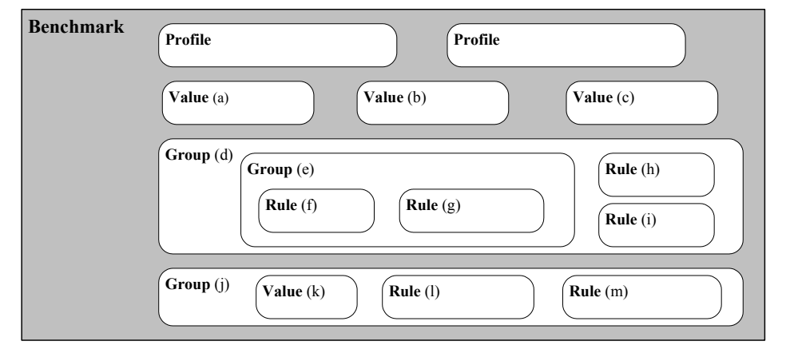
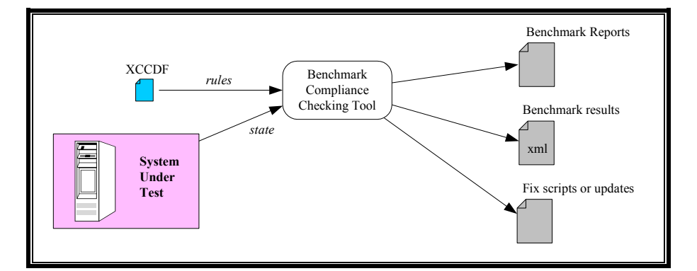

NIST IR 7275 Rev. 4 日本語訳
英語タイトル : Specification for the Extensible Configuration Checklist Description Format (XCCDF) Version 1.2日本語タイトル : Extensible Configuration Checklist Description Format（XCCDF）バージョン 1.2 の仕様
公開日 : 2012-03-01
原文URL : https://csrc.nist.gov/pubs/ir/7275/r4/upd1/final
翻訳編集 : 自動生成（有志による非公式の日本語訳）, 原文取得日 : 2026-10-31, 訳文 : 718 / 735 ブロック
[要約] NIST IR 7275 Rev. 4 は、Extensible Configuration Checklist Description Format（XCCDF）バージョン 1.2 のデータモデルと Extensible Markup Language（XML）表現を規定し、XCCDF 1.2 の文書と製品がこの仕様への適合を主張するために満たすべき要件も定める報告書です。XCCDF 文書は、あるターゲットシステム群に対するセキュリティ構成ルールを構造化して集めたものであり、この仕様は、情報交換、文書生成、組織や状況に応じたテーラリング、自動化されたコンプライアンステスト、およびスコアリングを支援するように設計されています。セキュリティガイダンスやチェックリストのテスト結果を格納するためのデータモデルと形式も定義します。XCCDF の意図は、セキュリティチェックリストやその他の構成ガイダンスを表現するための統一的な基盤を提供し、優れたセキュリティ実践のより広範な適用を促すことであるとされています。
［NIST のロゴ。公的な標章のため、この非公式サイトには掲載していません。原本 PDF を参照してください。］
NIST Interagency Report 7275
Revision 4
NIST 省庁間報告書 7275
改訂第 4 版
Specification for the Extensible Configuration Checklist Description Format (XCCDF) Version 1.2
Extensible Configuration Checklist Description Format（XCCDF）バージョン 1.2 の仕様
David Waltermire
Charles Schmidt
Karen Scarfone
Neal Ziring
David Waltermire
Charles Schmidt
Karen Scarfone
Neal Ziring
NIST Interagency Report 7275
Revision 4
NIST 省庁間報告書 7275
改訂第 4 版
Specification for the Extensible Configuration Checklist Description Format (XCCDF) Version 1.2
Extensible Configuration Checklist Description Format（XCCDF）バージョン 1.2 の仕様
David Waltermire
Charles Schmidt
Karen Scarfone
Neal Ziring
David Waltermire
Charles Schmidt
Karen Scarfone
Neal Ziring
COMPUTER SECURITY
コンピュータセキュリティ
Computer Security Division
Information Technology Laboratory
National Institute of Standards and Technology
Gaithersburg, MD 20899-8930
コンピュータセキュリティ部門
情報技術研究所
米国国立標準技術研究所
Gaithersburg, MD 20899-8930
March 2012
2012 年 3 月
U.S. Department of Commerce
John E. Bryson, Secretary
米国商務省
John E. Bryson 長官
National Institute of Standards and Technology
Patrick D. Gallagher, Under Secretary for Standards and Technology and Director
米国国立標準技術研究所
Patrick D. Gallagher、標準・技術担当次官および所長
Reports on Computer Systems Technology
コンピュータシステム技術に関する報告書
The Information Technology Laboratory (ITL) at the National Institute of Standards and Technology (NIST) promotes the U.S. economy and public welfare by providing technical leadership for the nation’s measurement and standards infrastructure. ITL develops tests, test methods, reference data, proof of concept implementations, and technical analysis to advance the development and productive use of information technology. ITL’s responsibilities include the development of technical, physical, administrative, and management standards and guidelines for the cost-effective security and privacy of sensitive unclassified information in Federal computer systems. This Interagency Report discusses ITL’s research, guidance, and outreach efforts in computer security and its collaborative activities with industry, government, and academic organizations.
米国国立標準技術研究所（NIST）の情報技術研究所（ITL）は、国の計測・標準インフラに技術面で主導的な役割を果たすことにより、米国経済と公共の福祉を促進しています。ITL は、情報技術の発展と生産的な利用を進めるため、テスト、テスト手法、参照データ、概念実証の実装、および技術的な分析を開発しています。ITL の責務には、連邦政府のコンピュータシステムにおける機密扱いでない機微な情報について、費用対効果の高いセキュリティとプライバシーを確保するための、技術面、物理面、行政面、および管理面の標準とガイドラインの策定が含まれます。この省庁間報告書は、コンピュータセキュリティにおける ITL の研究、ガイダンス、アウトリーチの取り組みと、産業界、政府、学術機関との共同活動について論じています。
National Institute of Standards and Technology Interagency Report 7275 Revision 4
80 pages (Mar. 2012)
米国国立標準技術研究所 省庁間報告書 7275 改訂第 4 版
80 ページ（2012 年 3 月）
Certain commercial entities, equipment, or materials may be identified in this document in order to describe an experimental procedure or concept adequately. Such identification is not intended to imply recommendation or endorsement by the National Institute of Standards and Technology, nor is it intended to imply that the entities, materials, or equipment are necessarily the best available for the purpose.
本文書では、実験の手順や概念を適切に説明するために、特定の商業的な組織、機器、または資材を明示している場合があります。こうした明示は、米国国立標準技術研究所による推奨や支持を意味するものではなく、それらの組織、資材、または機器がその目的に利用できる最良のものであることを意味するものでもありません。
Acknowledgments
謝辞
The authors of this report, David Waltermire of the National Institute of Standards and Technology (NIST), Charles Schmidt of The MITRE Corporation, Karen Scarfone of Scarfone Cybersecurity, and Neal Ziring of the National Security Agency (NSA), wish to thank all contributors to this revision of the publication, particularly Adam Halbardier of Booz Allen Hamilton, Vladimir Giszpenc, Kent Landfield and Richard Whitehurst of McAfee, Lisa Nordman of The MITRE Corporation, Joe Wolfkiel of DISA, and Shane Shaffer and Matt Kerr of G2, Inc.
本報告書の著者である、米国国立標準技術研究所（NIST）の David Waltermire、The MITRE Corporation の Charles Schmidt、Scarfone Cybersecurity の Karen Scarfone、米国国家安全保障局（NSA）の Neal Ziring は、本書の今回の改訂に貢献したすべての方々、特に Booz Allen Hamilton の Adam Halbardier、McAfee の Vladimir Giszpenc、Kent Landfield、Richard Whitehurst、The MITRE Corporation の Lisa Nordman、DISA の Joe Wolfkiel、G2, Inc. の Shane Shaffer と Matt Kerr に感謝します。
The authors would also like to acknowledge the following individuals who contributed to the initial definition and development of the Extensible Configuration Checklist Description Format (XCCDF): David Proulx, Mike Michnikov, Andrew Buttner, Todd Wittbold, Adam Compton, George Jones, Chris Calabrese, John Banghart, Murugiah Souppaya, John Wack, Trent Pitsenbarger, and Robert Stafford. Stephen D. Quinn, Peter Mell, and Matthew Wojcik contributed to Revisions 1, 2, and 3 of this report. Ryan Wilson of Georgia Institute of Technology also made substantial contributions. Thanks also go to the Defense Information Systems Agency (DISA) Field Security Office (FSO) Vulnerability Management System (VMS)/Gold Disk team for extensive review and many suggestions.
著者らはまた、Extensible Configuration Checklist Description Format（XCCDF）の当初の定義と開発に貢献した次の方々にも謝意を表します。David Proulx、Mike Michnikov、Andrew Buttner、Todd Wittbold、Adam Compton、George Jones、Chris Calabrese、John Banghart、Murugiah Souppaya、John Wack、Trent Pitsenbarger、Robert Stafford。Stephen D. Quinn、Peter Mell、Matthew Wojcik は、本報告書の改訂第 1 版、第 2 版、第 3 版に貢献しました。Georgia Institute of Technology の Ryan Wilson も大きな貢献をしました。また、国防情報システム局（DISA）の Field Security Office（FSO）の Vulnerability Management System（VMS）/Gold Disk チームには、広範なレビューと多くの提案をいただきました。
Abstract
要旨
This report specifies the data model and Extensible Markup Language (XML) representation for the Extensible Configuration Checklist Description Format (XCCDF) Version 1.2. An XCCDF document is a structured collection of security configuration rules for some set of target systems. The XCCDF specification is designed to support information interchange, document generation, organizational and situational tailoring, automated compliance testing, and scoring. The specification also defines a data model and format for storing results of security guidance or checklist testing. The intent of XCCDF is to provide a uniform foundation for expression of security checklists and other configuration guidance, and thereby foster more widespread application of good security practices.
本報告書は、Extensible Configuration Checklist Description Format（XCCDF）バージョン 1.2 のデータモデルと Extensible Markup Language（XML）表現を規定します。XCCDF 文書は、あるターゲットシステム群に対するセキュリティ構成ルールを構造化して集めたものです。XCCDF 仕様は、情報交換、文書生成、組織や状況に応じたテーラリング、自動化されたコンプライアンステスト、およびスコアリングを支援するように設計されています。この仕様は、セキュリティガイダンスやチェックリストのテスト結果を格納するためのデータモデルと形式も定義します。XCCDF の意図は、セキュリティチェックリストやその他の構成ガイダンスを表現するための統一的な基盤を提供し、それによって優れたセキュリティ実践のより広範な適用を促すことです。
Audience
対象読者
The primary audience of the XCCDF specification is government and industry security analysts, and security management product developers.
XCCDF 仕様の主な対象読者は、政府および産業界のセキュリティアナリストと、セキュリティ管理製品の開発者です。
Trademark Information
商標情報
All names are registered trademarks or trademarks of their respective companies.
すべての名称は、それぞれの会社の登録商標または商標です。
Contents
目次
Tables
表
Figures
図
1. Introduction
1. はじめに
1.1 Purpose and Scope
1.1 目的と適用範囲
This report defines the specification for the Extensible Configuration Checklist Description Format (XCCDF) version 1.2. The report also defines and explains the requirements that XCCDF 1.2 documents and products (i.e., software) must meet to claim conformance with the specification. This report only applies to XCCDF version 1.2. All other versions are outside the scope of this report.
本報告書は、Extensible Configuration Checklist Description Format（XCCDF）バージョン 1.2 の仕様を定義します。また、XCCDF 1.2 の文書および製品（すなわちソフトウェア）が、この仕様への適合を主張するために満たさなければならない要件も定義し、説明します。本報告書が適用されるのは XCCDF バージョン 1.2 のみです。それ以外のバージョンは、本報告書の適用範囲外です。
1.2 Document Structure
1.2 文書の構成
The remainder of this report is composed of the following sections and appendices:
本報告書の以降の部分は、次の節と付録で構成されます。
•Section 2 provides a list of normative references for the report.
•第 2 節は、本報告書の引用規格・参考文献の一覧を示します。
•Section 3 defines selected terms and abbreviations used in the report.
•第 3 節は、本報告書で使用する用語と略語のうち、主なものを定義します。
•Section 4 provides the high-level requirements for claiming conformance with the XCCDF version 1.2 specification.
•第 4 節は、XCCDF バージョン 1.2 仕様への適合を主張するための上位レベルの要件を示します。
•Section 5 gives an overview of XCCDF and its capabilities.
•第 5 節は、XCCDF とその機能の概要を示します。
•Section 6 provides an introduction to the XCCDF data model and details additional requirements and recommendations for XCCDF’s use.
•第 6 節は、XCCDF データモデルの紹介と、XCCDF を使用する際の追加の要件および推奨事項の詳細を示します。
•Section 7 discusses XCCDF processing requirements and recommendations.
•第 7 節は、XCCDF の処理に関する要件と推奨事項を論じます。
•Appendix A explains how to convert XCCDF 1.1.4-specific properties to their XCCDF 1.2 counterparts.
•付録 A は、XCCDF 1.1.4 固有のプロパティを、XCCDF 1.2 の対応するプロパティに変換する方法を説明します。
•Appendix B provides a change log that documents significant changes to released drafts of this specification. This includes a section-by-section mapping of how the document was reorganized from the previous drafts to this draft. Readers who are familiar with any previous XCCDF versions may find it helpful to review Appendix B first before the rest of the document.
•付録 B は、本仕様の公開済みドラフトからの重要な変更を記録した変更履歴を示します。これには、以前のドラフトから今回のドラフトへ文書がどのように再編成されたかを節ごとに対応付けたものが含まれます。以前のバージョンの XCCDF に詳しい読者は、本文を読む前に付録 B を確認すると役立つ場合があります。
1.3 Document Conventions
1.3 文書の表記規則
The key words “MUST”, “MUST NOT”, “REQUIRED”, “SHALL”, “SHALL NOT”, “SHOULD”, “SHOULD NOT”, “RECOMMENDED”, “MAY”, and “OPTIONAL” in this document are to be interpreted as described in Request for Comment (RFC) 2119 [RFC2119].
本文書中のキーワード “MUST”、“MUST NOT”、“REQUIRED”、“SHALL”、“SHALL NOT”、“SHOULD”、“SHOULD NOT”、“RECOMMENDED”、“MAY”、“OPTIONAL” は、Request for Comment（RFC）2119 [RFC2119] に記載されているとおりに解釈されます。
Namespace prefixes used in this specification are listed in Table 1.
本仕様で使用する名前空間のプレフィックスを表 1 に示します。
Table 1: Conventional XML Mappings
表 1: 慣習的な XML マッピング
| Prefix | Namespace | Schema |
|---|---|---|
| cpe2 | http:/ | Common Platform Enumeration (CPE) 2.3 Applicability Language |
| cpe2-dict | http:/ | CPE 2.3 Dictionary |
| dc | http:/ | Simple Dublin Core elements |
| dsig | http:/ | Interoperable XML digital signatures |
| xccdf | http:/ | XCCDF policy documents |
| xml | http:/ | Common XML attributes |
| xsd | http:/ | XML Schema |
| xsi | http:/ | XML Schema Instance |
| プレフィックス | 名前空間 | スキーマ |
|---|---|---|
| cpe2 | http:/ | Common Platform Enumeration（CPE）2.3 適用性言語 |
| cpe2-dict | http:/ | CPE 2.3 辞書 |
| dc | http:/ | Simple Dublin Core 要素 |
| dsig | http:/ | 相互運用可能な XML デジタル署名 |
| xccdf | http:/ | XCCDF ポリシー文書 |
| xml | http:/ | 共通の XML 属性 |
| xsd | http:/ | XML スキーマ |
| xsi | http:/ | XML スキーマインスタンス |
2. Normative References
2. 引用規格・参考文献
The following documents, in whole or in part, are normatively referenced in this document and are indispensable for its application. For dated references, only the edition cited applies. For undated references, the latest edition of the referenced document (including any amendments) applies.
次の文書は、その全体または一部が本文書で規範的に参照されており、本文書の適用に不可欠です。日付のある参照については、引用された版のみが適用されます。日付のない参照については、参照文書の最新版（修正を含む）が適用されます。
[DCES], DCMI (Dublin Core Metadata Initiative), Dublin Core Metadata Element Set, Version 1.1, October 2010, available at <http://dublincore.org/documents/dces/>
[DCES], DCMI (Dublin Core Metadata Initiative), Dublin Core Metadata Element Set, Version 1.1, October 2010, 入手先: <http://dublincore.org/documents/dces/>
[DCXML], DCMI, Guidelines for Implementing Dublin Core in XML, April 2003, available at <http://dublincore.org/documents/dc-xml-guidelines/>
[DCXML], DCMI, Guidelines for Implementing Dublin Core in XML, April 2003, 入手先: <http://dublincore.org/documents/dc-xml-guidelines/>
[ILSR], IANA, IANA Language Subtag Registry (ILSR), available at <http://www.iana.org/assignments/language-subtag-registry>
[ILSR], IANA, IANA Language Subtag Registry (ILSR), 入手先: <http://www.iana.org/assignments/language-subtag-registry>
[IR7693], NIST, NIST IR 7693, Specification for Asset Identification 1.1, June 2011, available at <http://csrc.nist.gov/publications/PubsNISTIRs.html>
[IR7693], NIST, NIST IR 7693, Specification for Asset Identification 1.1, June 2011, 入手先: <http://csrc.nist.gov/publications/PubsNISTIRs.html>
[IR7695], NIST, NIST IR 7695, Common Platform Enumeration: Naming Specification Version 2.3, August 2011, available at <http://csrc.nist.gov/publications/PubsNISTIRs.html>
[IR7695], NIST, NIST IR 7695, Common Platform Enumeration: Naming Specification Version 2.3, August 2011, 入手先: <http://csrc.nist.gov/publications/PubsNISTIRs.html>
[IR7698], NIST, NIST IR 7698, Common Platform Enumeration: Applicability Language Specification Version 2.3, August 2011, available at <http://csrc.nist.gov/publications/PubsNISTIRs.html>
[IR7698], NIST, NIST IR 7698, Common Platform Enumeration: Applicability Language Specification Version 2.3, August 2011, 入手先: <http://csrc.nist.gov/publications/PubsNISTIRs.html>
[PCRE], Perl Compatible Regular Expressions (PCRE), available at <http://www.pcre.org>
[PCRE], Perl Compatible Regular Expressions (PCRE), 入手先: <http://www.pcre.org>
[RFC2119], IETF, RFC 2119, Key words for use in RFCs to Indicate Requirement Levels, March 1997, available at <http://www.ietf.org/rfc/rfc2119.txt>
[RFC2119], IETF, RFC 2119, Key words for use in RFCs to Indicate Requirement Levels, March 1997, 入手先: <http://www.ietf.org/rfc/rfc2119.txt>
[RFC5646], IETF, RFC 5646, Tags for Identifying Languages, September 2009, available at <http://www.ietf.org/rfc/rfc5646.txt>
[RFC5646], IETF, RFC 5646, Tags for Identifying Languages, September 2009, 入手先: <http://www.ietf.org/rfc/rfc5646.txt>
[UNICODE], Unicode Technical Recommendation No. 18, Unicode Regular Expressions, version 9, January 2004, available at <http://unicode.org/reports/tr18/>
[UNICODE], Unicode Technical Recommendation No. 18, Unicode Regular Expressions, version 9, January 2004, 入手先: <http://unicode.org/reports/tr18/>
[XHTML], W3C (World Wide Web Consortium), XHTML Basic, December 2000, available at <http://www.w3.org/TR/2000/REC-xhtml-basic-20001219/>
[XHTML], W3C (World Wide Web Consortium), XHTML Basic, December 2000, 入手先: <http://www.w3.org/TR/2000/REC-xhtml-basic-20001219/>
[XINCLUDE], W3C, XML Inclusions (XInclude) Version 1.0 (Second Edition), November 2006, available at <http://www.w3.org/TR/xinclude/>
[XINCLUDE], W3C, XML Inclusions (XInclude) Version 1.0 (Second Edition), November 2006, 入手先: <http://www.w3.org/TR/xinclude/>
[XMLDSIG], W3C, XML Signature Syntax and Processing (Second Edition), June 2008, available at <http://www.w3.org/TR/xmldsig-core/>
[XMLDSIG], W3C, XML Signature Syntax and Processing (Second Edition), June 2008, 入手先: <http://www.w3.org/TR/xmldsig-core/>
[XMLNAME], W3C, Namespaces in XML 1.0 (Third Edition), December 2009, available at <http://www.w3.org/TR/REC-xml-names/>
[XMLNAME], W3C, Namespaces in XML 1.0 (Third Edition), December 2009, 入手先: <http://www.w3.org/TR/REC-xml-names/>
[XMLSCHEMA], W3C, XML Schema Part 2: Datatypes Second Edition, October 2004, available at <http://www.w3.org/TR/2004/REC-xmlschema-2-20041028/>
[XMLSCHEMA], W3C, XML Schema Part 2: Datatypes Second Edition, October 2004, 入手先: <http://www.w3.org/TR/2004/REC-xmlschema-2-20041028/>
[XPATH], W3C, XML Path Language (XPath) Version 1.0, November 1999, available at <http://www.w3.org/TR/xpath/>
[XPATH], W3C, XML Path Language (XPath) Version 1.0, November 1999, 入手先: <http://www.w3.org/TR/xpath/>
3. Terms, Definitions, and Abbreviations
3. 用語、定義、略語
For the purposes of this document, the following terms, definitions, and abbreviations apply.
本文書の目的においては、次の用語、定義、略語が適用されます。
3.1 XCCDF Terminology
3.1 XCCDF の用語
Benchmark: The root node of an XCCDF benchmark document; may also be the root node of an XCCDF results document (the results of evaluating the XCCDF benchmark document).
Benchmark: XCCDF ベンチマーク文書のルートノード。XCCDF 結果文書（XCCDF ベンチマーク文書を評価した結果）のルートノードでもある場合があります。
Benchmark Consumer: A product that accepts an existing XCCDF benchmark document, processes it, and produces an XCCDF results document.
Benchmark Consumer: 既存の XCCDF ベンチマーク文書を受け取って処理し、XCCDF 結果文書を生成する製品。
Benchmark Producer: A product that generates XCCDF benchmark documents.
Benchmark Producer: XCCDF ベンチマーク文書を生成する製品。
Checklist: An organized collection of rules about a particular kind of system or platform.
Checklist: 特定の種類のシステムやプラットフォームに関するルールを整理して集めたもの。
Group: An item that can hold other items; allows an author to collect related items into a common structure and provide descriptive text and references about them.
Group: 他の Item を保持できる Item。作成者が関連する Item を共通の構造にまとめ、それらについての説明文や参照情報を提供できるようにする Item。
Item: A named constituent of a benchmark. The three types of items are groups, rules, and values.
Item: ベンチマークを構成する、名前の付いた要素。Item には、グループ、ルール、値の 3 種類があります。
Profile: A named tailoring of a benchmark.
Profile: ベンチマークに名前を付けたテーラリング。
Rule: An element that holds check references and may also hold remediation information.
Rule: チェックへの参照を保持し、修復情報も保持できる要素。
Tailoring: An element that specifies profiles to modify the behavior of a benchmark; the top-level element of a tailoring document.
Tailoring: ベンチマークの動作を変更するプロファイルを指定する要素。テーラリング文書の最上位要素。
TestResult: The container for XCCDF results. May be the root node of an XCCDF results document.
TestResult: XCCDF の結果を格納するコンテナ。XCCDF 結果文書のルートノードである場合があります。
Value: A named data value that can be substituted into other items’ properties or into checks.
Value: 他の Item のプロパティやチェックに置換できる、名前の付いたデータ値。
3.2 Acronyms and Abbreviations
3.2 頭字語と略語
| CCE | Common Configuration Enumeration |
| CPE | Common Platform Enumeration |
| CVE | Common Vulnerabilities and Exposures |
| DCMI | Dublin Core Metadata Initiative |
| DNS | Domain Name System |
| IANA | Internet Assigned Numbers Authority |
| IR | Interagency Report |
| NIST | National Institute of Standards and Technology |
| OCIL | Open Checklist Interactive Language |
| OVAL | Open Vulnerability and Assessment Language |
| PCRE | Perl Compatible Regular Expression |
| RFC | Request for Comments |
| SCAP | Security Content Automation Protocol |
| SP | Special Publication |
| W3C | World Wide Web Consortium |
| XCCDF | Extensible Configuration Checklist Description Format |
| XHTML | Extensible Hypertext Markup Language |
| XML | Extensible Markup Language |
| CCE | Common Configuration Enumeration |
| CPE | Common Platform Enumeration |
| CVE | Common Vulnerabilities and Exposures |
| DCMI | Dublin Core Metadata Initiative |
| DNS | Domain Name System |
| IANA | Internet Assigned Numbers Authority |
| IR | Interagency Report |
| NIST | National Institute of Standards and Technology |
| OCIL | Open Checklist Interactive Language |
| OVAL | Open Vulnerability and Assessment Language |
| PCRE | Perl Compatible Regular Expression |
| RFC | Request for Comments |
| SCAP | Security Content Automation Protocol |
| SP | Special Publication |
| W3C | World Wide Web Consortium |
| XCCDF | Extensible Configuration Checklist Description Format |
| XHTML | Extensible Hypertext Markup Language |
| XML | Extensible Markup Language |
4. Conformance
4. 適合性
Products and organizations may want to claim conformance with this specification for a variety of reasons. For example, a software vendor may want to assert that its product generates and/or processes XCCDF benchmark documents properly. Another example is a policy mandating that an organization use XCCDF for documenting and executing its security configuration checklists.
製品や組織は、さまざまな理由から本仕様への適合を主張したい場合があります。たとえば、ソフトウェアベンダーは、自社製品が XCCDF ベンチマーク文書を適切に生成または処理する（あるいはその両方を行う）ことを主張したい場合があります。別の例として、組織にセキュリティ構成チェックリストの文書化と実行に XCCDF を使用することを義務付けるポリシーがあります。
This section provides the high-level requirements that a product or benchmark document MUST meet for conformance with this specification. Most of the requirements listed in this section reference other sections in the report that fully define the requirements.
本節は、製品またはベンチマーク文書が本仕様への適合のために満たさなければならない（MUST）上位レベルの要件を示します。本節に列挙した要件の多くは、その要件を完全に定義している本報告書の他の節を参照しています。
Other specifications that use XCCDF MAY define additional requirements and recommendations for XCCDF’s use. Such requirements and recommendations are outside the scope of this publication.
XCCDF を使用する他の仕様が、XCCDF の使用に関する追加の要件や推奨事項を定義する場合があります（MAY）。そのような要件や推奨事項は、本刊行物の適用範囲外です。
4.1 Product Conformance
4.1 製品の適合性
There are two types of XCCDF products: benchmark producers and benchmark consumers. Benchmark producers are products that generate XCCDF benchmark documents, while benchmark consumers are products that accept an existing XCCDF benchmark document, process it, and produce an XCCDF results document. Products claiming conformance with this specification SHALL adhere to the following requirements:
XCCDF 製品には、ベンチマークプロデューサーとベンチマークコンシューマーの 2 種類があります。ベンチマークプロデューサーは XCCDF ベンチマーク文書を生成する製品であり、ベンチマークコンシューマーは既存の XCCDF ベンチマーク文書を受け取って処理し、XCCDF 結果文書を生成する製品です。本仕様への適合を主張する製品は、次の要件に従わなければなりません（SHALL）。
1.For benchmark producers, generate well-formed XCCDF benchmark documents. This includes following the benchmark document requirements specified in Section 4.2 and all of the pertinent processes defined in Sections 6 and 7.
1.ベンチマークプロデューサーの場合は、整形式の XCCDF ベンチマーク文書を生成すること。これには、第 4.2 節に規定するベンチマーク文書の要件と、第 6 節および第 7 節に定義するすべての関連する処理に従うことが含まれます。
2.For benchmark consumers, consume and process well-formed XCCDF benchmark documents, and generate well-formed XCCDF results documents. This includes following all of the pertinent processes defined in Sections 6 and 7.
2.ベンチマークコンシューマーの場合は、整形式の XCCDF ベンチマーク文書を受け取って処理し、整形式の XCCDF 結果文書を生成すること。これには、第 6 節および第 7 節に定義するすべての関連する処理に従うことが含まれます。
3.Make an explicit claim of conformance to this specification in any documentation provided to end users.
3.エンドユーザーに提供するあらゆる文書において、本仕様への適合を明示的に主張すること。
4.2 Benchmark Document Conformance
4.2 ベンチマーク文書の適合性
XCCDF benchmark documents claiming conformance with this specification SHALL follow these requirements:
本仕様への適合を主張する XCCDF ベンチマーク文書は、次の要件に従わなければなりません（SHALL）。
1.Adhere to the official XCCDF schema as explained in Section 6.
1.第 6 節で説明する公式の XCCDF スキーマに従うこと。
2.Adhere to the syntax, structural, and other XCCDF benchmark document requirements defined in Sections 6 and 7.
2.第 6 節および第 7 節に定義する、構文、構造、その他の XCCDF ベンチマーク文書の要件に従うこと。
5. XCCDF Overview
5. XCCDF の概要
5.1 Introduction
5.1 はじめに
XCCDF was created to document technical and non-technical security checklists using a standardized format. The general objective is to allow security analysts and IT experts to create effective, interoperable automated checklists, and to support the use of these checklists with a wide variety of tools. A checklist is an organized collection of rules about a particular kind of system or platform. Automation is necessary for consistent and rapid verification of system security because of the sheer number of things to check and the number of hosts within an organization that need to be assessed (often many thousands).
XCCDF は、技術的および非技術的なセキュリティチェックリストを標準化された形式で文書化するために作られました。その一般的な目的は、セキュリティアナリストや IT の専門家が、効果的で相互運用可能な自動化チェックリストを作成できるようにするとともに、さまざまなツールでそれらのチェックリストを利用できるようにすることです。チェックリストとは、特定の種類のシステムやプラットフォームに関するルールを整理して集めたものです。確認すべき項目の数が非常に多く、組織内で評価が必要なホストの数も（しばしば数千台に上るほど）多いため、システムセキュリティを一貫して迅速に検証するには自動化が必要です。
XCCDF enables easier, more uniform creation of security checklists, which in turn helps to improve system security by more consistent and accurate application of sound security practices. Adoption of XCCDF lets security professionals, security tool vendors, and system auditors exchange information more quickly and precisely, and also permits greater automation of security testing and configuration assessment. Additional capabilities provided by XCCDF include the following:
XCCDF により、セキュリティチェックリストをより容易かつ均一に作成できるようになり、その結果、健全なセキュリティ実践をより一貫して正確に適用することで、システムセキュリティの向上につながります。XCCDF を採用すると、セキュリティ専門家、セキュリティツールのベンダー、システム監査人が、より迅速かつ正確に情報を交換できるようになり、セキュリティテストや構成評価の自動化もさらに進みます。XCCDF が提供するその他の機能には、次のものがあります。
•Ensure compliance to multiple policies (systems subject to the Federal Information Security Management Act [FISMA], Security Technical Implementation Guide [STIG], Health Insurance Portability and Accountability Act [HIPAA], etc.)
•複数のポリシーへの準拠を確保する（連邦情報セキュリティマネジメント法 [FISMA] の対象となるシステム、Security Technical Implementation Guide [STIG]、Health Insurance Portability and Accountability Act [HIPAA] など）
•Permit faster, more cooperative, and more automated definition of security rules, procedures, guidance documents, alerts, advisories, and remediation measures
•セキュリティルール、手順、ガイダンス文書、アラート、アドバイザリ、修復措置の定義を、より迅速に、より協力的に、より自動化して行えるようにする
•Permit fast, uniform, manageable administration of security checks and audits
•セキュリティチェックと監査の、迅速で均一かつ管理可能な運用を可能にする
•Permit composition of security rules and tests from different community groups and vendors
•さまざまなコミュニティグループやベンダーのセキュリティルールとテストを組み合わせて構成できるようにする
•Facilitate scoring, reporting, and tracking of security status and checklist conformance for systems
•システムのセキュリティ状況とチェックリストへの適合性のスコアリング、報告、追跡を容易にする
The XCCDF specification, which is vendor-neutral, is suited for a wide variety of checklist applications. XCCDF has an open, standardized format, amenable to generation by and editing with a variety of tools. In addition, because it is expressed using XML, an XCCDF document is embeddable inside other documents. XCCDF also includes provisions for incorporating other data formats, and it is extensible to include new functionality, features, and data stores without hindering the functionality of existing XCCDF tools.
ベンダー中立である XCCDF 仕様は、さまざまなチェックリストの用途に適しています。XCCDF はオープンで標準化された形式であり、さまざまなツールによる生成や編集に適しています。加えて、XML で表現されるため、XCCDF 文書は他の文書の内部に埋め込むことができます。XCCDF には他のデータ形式を取り込むための規定もあり、既存の XCCDF ツールの機能を妨げることなく、新しい機能、特徴、データストアを含むように拡張できます。
Since XCCDF’s creation, various commercial, government, and community developers have created tools that support XCCDF, allowing a single XCCDF checklist to be used by many organizations and many tools. These tools read an XCCDF checklist and follow it to perform the necessary checks and ask the necessary questions to measure conformance with the checklist and generate corresponding reports.
XCCDF の作成以来、商用、政府、コミュニティのさまざまな開発者が XCCDF に対応するツールを作成しており、1 つの XCCDF チェックリストを多くの組織と多くのツールで使用できるようになっています。これらのツールは、XCCDF チェックリストを読み込み、それに従って必要なチェックを実行し、必要な質問を行って、チェックリストへの適合性を測定し、対応する報告書を生成します。
A common use case for an XCCDF checklist is normalizing security configuration content through automated tools. Such tools accept one or more XCCDF checklists along with supporting system test definitions, and determine whether the specified rules are satisfied by a target system. The XCCDF checklist supports generation of a report, including a weighted score. XCCDF checklists can also be used to test whether or not a system is vulnerable to a particular kind of attack. For this purpose, the XCCDF checklist plays the role of a vulnerability alert, but with the ability to describe the problem, drive automated verification of its presence, and convey recommendations for corrective actions.
XCCDF チェックリストの一般的なユースケースは、自動化ツールによるセキュリティ構成コンテンツの正規化です。このようなツールは、1 つ以上の XCCDF チェックリストを、それを裏付けるシステムテスト定義とともに受け取り、指定されたルールをターゲットシステムが満たしているかどうかを判定します。XCCDF チェックリストは、加重スコアを含む報告書の生成を支援します。XCCDF チェックリストは、システムが特定の種類の攻撃に対して脆弱かどうかをテストするためにも使用できます。この目的では、XCCDF チェックリストは脆弱性アラートの役割を果たしますが、問題を記述し、その存在の自動検証を実行させ、是正措置の推奨事項を伝える機能を備えています。
The scenarios below illustrate some uses of XCCDF security checklists and tools.
以下のシナリオは、XCCDF セキュリティチェックリストとツールの利用例を示しています。
•Scenario 1 – An industry consortium, in conjunction with a product vendor, wants to produce a security checklist for an application server. The core security settings are the same for all OS platforms on which the server runs, but a few settings are OS-specific. The consortium crafts one checklist for the core settings and writes several OS-specific ones that supplement the core settings. Users download the core checklist and the OS-specific checklists that apply to their installations, and then run an assessment tool to score their compliance with the checklists.
•シナリオ 1 – 業界コンソーシアムが、製品ベンダーと協力して、アプリケーションサーバー向けのセキュリティチェックリストを作成しようとしています。中核となるセキュリティ設定は、そのサーバーが動作するすべての OS プラットフォームで同じですが、いくつかの設定は OS 固有です。コンソーシアムは、中核となる設定のためのチェックリストを 1 つ作成し、中核の設定を補足する OS 固有のチェックリストを複数作成します。ユーザーは、中核のチェックリストと、自分の環境に該当する OS 固有のチェックリストをダウンロードし、評価ツールを実行して、チェックリストへの準拠状況をスコア化します。
•Scenario 2 – An academic group produces a checklist for secure configuration of a particular server operating system version. A government agency issues a set of rules extending the academic checklist to meet more stringent user authorization criteria imposed by statute. A medical enterprise downloads both the academic checklist and the government extension, tailors them to fit their internal security policy, and uses them for an enterprise-wide audit using a commercial security audit tool. Reports outputted by the tool include remediation measures which the IT staff can use to bring their systems into full internal policy compliance. (Note that remediation processes should be carefully planned and implemented.)
•シナリオ 2 – 学術グループが、特定のバージョンのサーバー OS を安全に構成するためのチェックリストを作成します。政府機関が、法令で課されたより厳格なユーザー認可基準を満たすために、その学術チェックリストを拡張するルール群を発行します。ある医療企業が、学術チェックリストと政府の拡張の両方をダウンロードし、自社の内部セキュリティポリシーに合わせてテーラリングし、商用のセキュリティ監査ツールを使って全社的な監査に利用します。ツールが出力する報告書には修復措置が含まれており、IT 担当者はそれを使ってシステムを内部ポリシーに完全に準拠させることができます。（修復の工程は慎重に計画し、実施すべきです。）
These scenarios demonstrate some of XCCDF’s range of capabilities. XCCDF can represent complex conditions and relationships about the systems to be assessed, and it can incorporate descriptive material and remediative measures. It is also designed to be modular; for example, XCCDF benchmarks acquire programmatically ascertainable information through lower-level check system languages.
これらのシナリオは、XCCDF の機能の幅広さの一端を示しています。XCCDF は、評価対象のシステムに関する複雑な条件や関係を表現でき、説明資料や修復措置も取り込むことができます。また、モジュール式になるように設計されており、たとえば XCCDF ベンチマークは、下位レベルのチェックシステム言語を通じて、プログラムで確認できる情報を取得します。
5.2 Checklist Structure and Tailoring
5.2 チェックリストの構造とテーラリング
The basic unit of structure for a checklist is a rule. A rule simply describes a state or condition which the target of the document should exhibit. A simple checklist might consist of a list of rules, but richer ones require additional structure. XCCDF allows checklist authors to impose organization within the checklist, such as putting related rules into named groups and designating the order for processing rules and groups.
チェックリストの構造の基本単位はルールです。ルールは、文書の対象が示すべき状態や条件を単に記述するものです。単純なチェックリストはルールの一覧で構成される場合がありますが、より内容の豊かなチェックリストには追加の構造が必要です。XCCDF では、チェックリストの作成者が、関連するルールを名前付きのグループにまとめたり、ルールやグループを処理する順序を指定したりするなど、チェックリスト内に編成を持たせることができます。
Checklist users can employ tailoring tools to customize a checklist’s rules for their local environment or policies. For example, an auditor might need to set the password policy requirement to be more stringent than the default recommendation. Another example is that an organization may have trouble applying particular settings because of legacy systems or conflicts with other software. In cases such as these, the checklist users may need to tailor the checklist. The following customization options are available:
チェックリストの利用者は、テーラリングツールを使って、チェックリストのルールを自らの環境やポリシーに合わせてカスタマイズできます。たとえば、監査人が、パスワードポリシーの要件をデフォルトの推奨事項より厳しく設定する必要がある場合があります。別の例として、組織が、レガシーシステムや他のソフトウェアとの競合のために、特定の設定を適用しにくい場合があります。このような場合、チェックリストの利用者はチェックリストをテーラリングする必要が生じることがあります。次のカスタマイズの選択肢を利用できます。
•Selectability – A tailoring action selects or deselects a rule or group of rules. For example, an entire group of rules that relate to physical security might not apply to a network scan, so that group could be deselected. In the case of NIST Special Publication (SP) 800-53, certain rules apply according to the impact rating of the system. For example, systems that have an impact rating of low might not have all of the same access control requirements as a system with a high impact rating, so the rules that are not applicable for the low system can be deselected.
•選択可能性 – テーラリングアクションが、ルールまたはルール群を選択または選択解除します。たとえば、物理セキュリティに関するルールのグループ全体は、ネットワークスキャンには当てはまらない場合があるため、そのグループを選択解除できます。NIST 特別刊行物（SP）800-53 の場合、システムの影響度の格付けに応じて、特定のルールが適用されます。たとえば、影響度の格付けが低いシステムは、影響度の格付けが高いシステムと同じアクセス制御要件をすべて備えているとは限らないため、低影響のシステムに適用されないルールは選択解除できます。
•Value Modification – A tailoring action substitutes a locally-significant value for a general value in an XCCDF variable (<xccdf:Value>). This locally-significant value then gets used wherever the variable is referenced. For example, at a site where all logs are sent to a single host, the address of that log server could be substituted into an audit configuration variable. Using the NIST SP 800-53 example, a system with a moderate impact rating might require a 12-character password, whereas a system with a low impact rating might only require an 8-character password.
•Value の変更 – テーラリングアクションが、XCCDF の変数（<xccdf:Value>）の一般的な値を、そのサイト固有の意味を持つ値に置き換えます。この、サイト固有の意味を持つ値は、その変数が参照されるあらゆる箇所で使用されます。たとえば、すべてのログを 1 台のホストに送信しているサイトでは、そのログサーバーのアドレスを監査構成の変数に置換できます。NIST SP 800-53 の例を使うと、影響度の格付けが中程度のシステムでは 12 文字のパスワードが必要となる一方、影響度の格付けが低いシステムでは 8 文字のパスワードだけで足りる場合があります。
•Property Modification – A tailoring action modifies a property for an element not addressed by selectability or value modification. For example, an author could alter the relative weight of particular rules or groups of rules.
•プロパティの変更 – テーラリングアクションが、選択可能性や Value の変更の対象とならない要素のプロパティを変更します。たとえば、作成者が、特定のルールやルール群の相対的な重みを変更できます。
XCCDF 1.2 supports the creation and use of tailoring documents, which define tailoring profiles available for use with a particular benchmark document. Having a tailoring document allows sets of checklist customizations to be recorded in a consistent manner.
XCCDF 1.2 は、テーラリング文書の作成と使用に対応しています。テーラリング文書は、特定のベンチマーク文書で使用できるテーラリングプロファイルを定義します。テーラリング文書があれば、チェックリストのカスタマイズの組を一貫した方法で記録できます。
XCCDF allows checklists to include descriptive and interrogative text to help checklist users make tailoring decisions, even directing users through the process. Some combinations of rules within the same checklist might conflict or be mutually exclusive. To avert problems, the checklist author can identify particular tailoring choices as incompatible. Checklist authors can also designate the modes (e.g., Gold, Platinum, High Impact Rating, Level 1) under which a rule should be processed. Checklist authors should include the appropriate text in their checklists to aid in tailoring.
XCCDF では、チェックリストに説明文や質問文を含めることで、チェックリストの利用者がテーラリングの判断を行うのを助けたり、その手順を利用者に案内したりすることもできます。同じチェックリスト内のルールの組み合わせによっては、互いに矛盾したり、排他的になったりするものがあります。問題を避けるため、チェックリストの作成者は、特定のテーラリングの選択肢を互換性がないものとして指定できます。また、チェックリストの作成者は、ルールを処理すべきモード（たとえば Gold、Platinum、High Impact Rating、Level 1）を指定することもできます。チェックリストの作成者は、テーラリングを支援するために、適切なテキストをチェックリストに含めるべきです。
Another important facet of customization is extension. XCCDF supports mechanisms for authors to extend (inherit from) existing rules, values, and groups, in addition to expressing rules, values, and groups in their entirety. For example, in XCCDF checklists, it is desirable to share descriptive material among several rules, and to allow a specialized rule to be created by extending a base rule. (Note that group extension has been deprecated in XCCDF 1.2. Use of group extension is strongly discouraged because it has known problems, such as those described in Section 7.2.2, and content that uses it is unlikely to be interoperable between XCCDF products.)
カスタマイズのもう 1 つの重要な側面は拡張です。XCCDF は、ルール、Value、グループを完全な形で表現することに加えて、作成者が既存のルール、Value、グループを拡張する（継承する）ための仕組みにも対応しています。たとえば XCCDF のチェックリストでは、複数のルールで説明資料を共有し、基本となるルールを拡張して特化したルールを作成できるようにすることが望まれます。（グループの拡張は XCCDF 1.2 で非推奨になっていることに注意してください。グループの拡張には、第 7.2.2 節で述べるような既知の問題があるため、その使用は強く推奨されません。また、これを使用するコンテンツは、XCCDF 製品間で相互運用できない可能性が高いです。）
5.3 Test Results
5.3 テスト結果
Many organizations use several security products to determine the security of IT systems and their compliance to various policies. Unfortunately, if the outputs from these products are not standardized, costly customization and integration can be required for trending, aggregation, and reporting. Addressing this, XCCDF provides a standardized reporting format for storing the results of the rule checking subsystem. Security tools sometimes include only the results of the test or tests in the form of a pass/fail status. Other tools provide additional information (e.g., instead of simply indicating that more than one privileged account exists on a system, certain tools also provide the list of privileged accounts). The following information is basic to all XCCDF results:
多くの組織は、IT システムのセキュリティや各種ポリシーへの準拠状況を判断するために、複数のセキュリティ製品を使用しています。残念ながら、これらの製品の出力が標準化されていないと、傾向分析、集約、報告のために、費用のかかるカスタマイズと統合が必要になる場合があります。これに対処するため、XCCDF は、ルールチェックサブシステムの結果を格納するための標準化された報告形式を提供します。セキュリティツールの中には、合格／不合格というステータスの形でテストの結果だけを含めるものもあります。他のツールは追加情報を提供します（たとえば、システム上に複数の特権アカウントが存在することを単に示すのではなく、特権アカウントの一覧も提供するツールがあります）。次の情報は、すべての XCCDF 結果の基本です。
•The security guidance document or checklist used, along with any adaptations via customization or tailoring applied
•使用したセキュリティガイダンス文書またはチェックリストと、カスタマイズやテーラリングによって加えた変更
•Information about the target system to which the test was applied, including arbitrary identification and configuration information about the target system
•テストを適用したターゲットシステムに関する情報。ターゲットシステムの任意の識別情報と構成情報を含む
•The time interval of the test, and the time instant at which each individual rule was evaluated
•テストの期間と、個々のルールを評価した時点
•One or more scores
•1 つ以上のスコア
•References to lower-level details possibly stored in other output files.
•他の出力ファイルに格納されている可能性のある、下位レベルの詳細情報への参照。
6. XCCDF Data Model
6. XCCDF データモデル
6.1 Introduction
6.1 はじめに
The XCCDF data model and its XML representation are intended to be platform-independent and portable to foster broad adoption and sharing of rules. The fundamental data model for XCCDF consists of the following main element data types:
XCCDF のデータモデルとその XML 表現は、ルールの幅広い採用と共有を促すため、プラットフォームに依存せず、移植可能であることを意図しています。XCCDF の基本的なデータモデルは、次の主要な要素のデータ型で構成されます。
•Benchmark. An XCCDF benchmark document holds an <xccdf:Benchmark> element, which acts as a container for other elements, including <xccdf:Group>, <xccdf:Rule>, <xccdf:Value>, <xccdf:Profile>, and <xccdf:TestResult> elements.
•Benchmark。XCCDF ベンチマーク文書は <xccdf:Benchmark> 要素を保持します。この要素は、<xccdf:Group>、<xccdf:Rule>、<xccdf:Value>、<xccdf:Profile>、<xccdf:TestResult> の各要素を含む他の要素のコンテナとして機能します。
•Item. An item is a named constituent of an <xccdf:Benchmark>. There are three types of items:
•Item。Item は、<xccdf:Benchmark> を構成する、名前の付いた要素です。Item には 3 種類あります。
•Group. An <xccdf:Group> holds other items. An <xccdf:Group> collects related <xccdf:Rule> and <xccdf:Value> elements into a common structure and can provide descriptive text and references about them. An <xccdf:Group> allows benchmark users to select and deselect related <xccdf:Rule> elements together; since a deselected <xccdf:Group> is not processed, none of its contained items are processed either. Selection of an <xccdf:Group> allows its children to be processed normally based on their individual selection states.
•Group。<xccdf:Group> は他の Item を保持します。<xccdf:Group> は、関連する <xccdf:Rule> 要素と <xccdf:Value> 要素を共通の構造にまとめ、それらについての説明文や参照情報を提供できます。<xccdf:Group> により、ベンチマークの利用者は関連する <xccdf:Rule> 要素をまとめて選択および選択解除できます。選択解除された <xccdf:Group> は処理されないため、それに含まれる Item もすべて処理されません。<xccdf:Group> が選択された場合、その子要素は、それぞれの選択状態に基づいて通常どおり処理されます。
•Rule. An <xccdf:Rule> element holds check references and can also hold remediation information.
•Rule。<xccdf:Rule> 要素は、チェックへの参照を保持し、修復情報も保持できます。
•Value. An <xccdf:Value> element is a named data value that can be substituted into other items’ properties or into checks. It can have an associated data type and metadata that express how the value should be used and how it can be tailored.
•Value。<xccdf:Value> 要素は、他の Item のプロパティやチェックに置換できる、名前の付いたデータ値です。この値をどのように使用すべきか、またどのようにテーラリングできるかを表現する、関連付けられたデータ型とメタデータを持つことができます。
•Profile. An <xccdf:Profile> element is a named tailoring of a benchmark using a collection of attributed references to <xccdf:Rule>, <xccdf:Group>, and <xccdf:Value> elements. It allows definition of named levels or baselines in a benchmark (see Section 5.2).
•Profile。<xccdf:Profile> 要素は、<xccdf:Rule>、<xccdf:Group>、<xccdf:Value> の各要素への属性付き参照の集合を使った、ベンチマークの名前付きテーラリングです。これにより、ベンチマーク内に、名前の付いたレベルやベースラインを定義できます（第 5.2 節を参照）。
•TestResult. An <xccdf:TestResult> element holds the results of performing a test or check against a single target device or system. An <xccdf:TestResult> element references <xccdf:Rule> and <xccdf:Value> elements and may also reference an <xccdf:Profile> element.
•TestResult。<xccdf:TestResult> 要素は、単一のターゲットデバイスまたはシステムに対してテストやチェックを実行した結果を保持します。<xccdf:TestResult> 要素は <xccdf:Rule> 要素と <xccdf:Value> 要素を参照し、<xccdf:Profile> 要素も参照する場合があります。
•Tailoring. A tailoring document holds exactly one <xccdf:Tailoring> element, which contains <xccdf:Profile> elements to modify the behavior of an <xccdf:Benchmark>.
•Tailoring。テーラリング文書は、<xccdf:Tailoring> 要素をちょうど 1 つ保持します。この要素は、<xccdf:Benchmark> の動作を変更する <xccdf:Profile> 要素を含みます。
The rest of this section explains the relationships between these main element data types and examines each of the types in more detail. Section 6.2 discusses general information that applies to most or all of the main element data types. Sections 6.3 through 6.7 cover <xccdf:Benchmark>, item (<xccdf:Group>, <xccdf:Rule>, <xccdf:Value>), <xccdf:Profile>, <xccdf:TestResult>, and <xccdf:Tailoring> elements, respectively.
本節の残りでは、これらの主要な要素のデータ型の関係を説明し、各型をより詳しく検討します。第 6.2 節では、主要な要素のデータ型のほとんど、またはすべてに当てはまる一般的な情報を論じます。第 6.3 節から第 6.7 節では、それぞれ <xccdf:Benchmark>、Item（<xccdf:Group>、<xccdf:Rule>、<xccdf:Value>）、<xccdf:Profile>、<xccdf:TestResult>、<xccdf:Tailoring> の各要素を扱います。
6.2 General XML Information
6.2 XML 全般に関する情報
6.2.1 XCCDF Namespace and XML Schema
6.2.1 XCCDF の名前空間と XML スキーマ
The namespace URI for this specification SHALL be “http://checklists.nist.gov/xccdf/1.2”. Applications that process XCCDF SHOULD use the namespace URI to decide whether or not they can process a given document. The XML representation of XCCDF is expressed as an XML schema at http://scap.nist.gov/specifications/xccdf/#resource-1.2. The XML schema implementation of XCCDF SHALL be the authoritative XML binding definition for XCCDF.
本仕様の名前空間 URI は “http://checklists.nist.gov/xccdf/1.2” でなければなりません（SHALL）。XCCDF を処理するアプリケーションは、名前空間 URI を使って、与えられた文書を処理できるかどうかを判断すべきです（SHOULD）。XCCDF の XML 表現は、http://scap.nist.gov/specifications/xccdf/#resource-1.2 にある XML スキーマとして表現されています。XCCDF の XML スキーマ実装は、XCCDF の XML バインディング定義の正式なものでなければなりません（SHALL）。
6.2.2 Element and Attribute Formatting
6.2.2 要素と属性の書式
The structure of an XCCDF document supports transformation into HTML and various XML formats to promote portability and interoperability. The XCCDF language also allows for the inclusion of content that does not contribute directly to the technical content, such as an introduction, a rationale, warnings, and external references. XCCDF also provides mechanisms to document authors for formatting text, including images, and referencing other information resources (e.g., prose publications), but these mechanisms are separable from the text itself so they can be filtered out by applications that do not support or require them.
XCCDF 文書の構造は、移植性と相互運用性を高めるため、HTML やさまざまな XML 形式への変換に対応しています。XCCDF 言語では、導入、根拠、警告、外部参照など、技術的な内容に直接寄与しない内容を含めることもできます。XCCDF は、文書の作成者に対して、テキストの書式設定、画像の挿入、他の情報資源（たとえば文章形式の刊行物）の参照のための仕組みも提供しますが、これらの仕組みはテキスト本体から分離できるため、それらに対応しない、または必要としないアプリケーションは、除外できます。
Throughout the rest of this section, there are tables that show the possible properties of each main element in the XCCDF data model. In the tables, properties of type “identifier” MUST be strings obeying the definition of “NCName” from [XMLSCHEMA]. Properties of type “string” and “text” MUST NOT include XHTML formatting. Properties of type “HTML-enabled text” are string data that MAY include embedded formatting, presentation, and hyperlink structure; if present, these MUST be expressed using Extensible Hypertext Markup Language (XHTML) Basic tags [XHTML]. The core modules noted in [XHTML] and the Presentation module MAY be used for this.
本節の以降では、XCCDF データモデルの各主要要素で取り得るプロパティを示す表を掲載します。表中で型が “identifier” のプロパティは、[XMLSCHEMA] の “NCName” の定義に従う文字列でなければなりません（MUST）。型が “string” および “text” のプロパティは、XHTML の書式を含んではなりません（MUST NOT）。型が “HTML-enabled text” のプロパティは、埋め込みの書式、表示、ハイパーリンクの構造を含んでもよい（MAY）文字列データです。これらが存在する場合は、Extensible Hypertext Markup Language（XHTML）Basic のタグ [XHTML] で表現しなければなりません（MUST）。このために、[XHTML] に記載されたコアモジュールと Presentation モジュールを使用してもよいです（MAY）。
XHTML markup allows authors to specify how the content of certain fields SHOULD be displayed to a user. However, while this allows authors to specify every detail of a field's display, authors MAY use classifiers in these fields, using class attributes in <div> or <span> elements. These tell products the type of content contained within a text block and allow the products to display this content according to their own conventions. Authors may wish to do this so their content fits better with other automated formatting choices made by a product or a stylesheet, and also because some products may not support the complete range of HTML tags in their displays, thus causing some explicit formatting to be ignored. A list of recommended class values appears in Table 2. Authors MAY use class values not included in this list, and it is OPTIONAL for products to have special formatting for any of the listed classifiers. However, both authors and products SHOULD use these class designators when appropriate to provide more effective display of content. Use of these class attribute values SHALL be applicable wherever HTML content can be included in XCCDF documents.
XHTML マークアップにより、作成者は、特定のフィールドの内容をユーザーにどのように表示すべきか（SHOULD）を指定できます。しかし、これによりフィールドの表示の細部まで作成者が指定できる一方で、作成者は、これらのフィールドで、<div> 要素や <span> 要素の class 属性を使った分類子を使用してもよいです（MAY）。分類子は、テキストブロックに含まれる内容の種類を製品に伝え、製品が各自の慣習に従ってその内容を表示できるようにします。作成者がこれを行いたい理由は、内容を、製品やスタイルシートが行う他の自動的な書式設定の選択により適合させるためであり、また、製品によっては表示で HTML タグの全範囲に対応しておらず、明示的な書式設定の一部が無視される場合があるためでもあります。推奨されるクラスの値の一覧を表 2 に示します。作成者は、この一覧に含まれないクラスの値を使用してもよく（MAY）、製品が一覧の分類子に対して特別な書式設定を行うことは任意です（OPTIONAL）。ただし、作成者と製品の両方が、内容をより効果的に表示するために、適切な場合にはこれらのクラス指定子を使用すべきです（SHOULD）。これらの class 属性の値の使用は、XCCDF 文書に HTML コンテンツを含められるあらゆる箇所に適用されなければなりません（SHALL）。
Table 2: Recommended Class Values
表 2: 推奨されるクラスの値
| Class Value | Meaning |
|---|---|
| license | Licensing and use information |
| copyright | Copyright and ownership information |
| tangent | A block of text that contains tangentially related information (possibly appropriate for inclusion as a sidebar or a pop-up) |
| warning | Pitfalls or cautions relative to the surrounding text. High-level and general warnings SHOULD appear in designated warning fields, if available. |
| critical | Content of critical importance to the user |
| example | An example of some kind |
| instructions | Special instructions to the user |
| default | General information. Empty or absent class attributes also imply "default" appearance. This tag allows authors to explicitly indicate that text should appear in the default format. |
| クラスの値 | 意味 |
|---|---|
| license | ライセンスおよび使用に関する情報 |
| copyright | 著作権および所有権に関する情報 |
| tangent | 周辺的に関連する情報を含むテキストブロック（サイドバーやポップアップとして含めるのが適切な場合がある） |
| warning | 前後のテキストに関する落とし穴や注意事項。上位レベルの一般的な警告は、指定された警告用のフィールドがある場合は、そこに記載すべきです（SHOULD）。 |
| critical | ユーザーにとって極めて重要な内容 |
| example | 何らかの例 |
| instructions | ユーザーへの特別な指示 |
| default | 一般的な情報。class 属性が空である場合や存在しない場合も、"default" の表示を意味します。このタグにより、作成者は、テキストをデフォルトの形式で表示すべきであることを明示的に示せます。 |
6.2.3 Element Identifiers
6.2.3 要素の識別子
The elements listed in Table 3 have special conventions around the format of their identifiers (@id attribute). Authors MUST follow these conventions because they make it easier to preserve the global uniqueness of the resulting identifiers.
表 3 に挙げた要素は、識別子（@id 属性）の形式について特別な慣習があります。この慣習に従うと、結果として得られる識別子のグローバルな一意性を保ちやすくなるため、作成者はこれに従わなければなりません（MUST）。
Table 3: Element Identifier Format Conventions
表 3: 要素識別子の形式の慣習
| Element | Format Convention |
|---|---|
| Benchmark | xccdf |
| Profile | xccdf |
| Group | xccdf |
| Rule | xccdf |
| Value | xccdf |
| TestResult | xccdf |
| Tailoring | xccdf |
| 要素 | 形式の慣習 |
|---|---|
| Benchmark | xccdf |
| Profile | xccdf |
| Group | xccdf |
| Rule | xccdf |
| Value | xccdf |
| TestResult | xccdf |
| Tailoring | xccdf |
In Table 3, namespace contains a valid reverse-DNS style string (limited to letters, numbers, periods, and the hyphen character) that is associated with the content author. Examples include "com.acme.finance" and "gov.tla". These namespace strings MAY have any number of parts, and benchmark consumers processing them SHALL treat them as case-insensitive. (That is, com.ABC is considered identical to com.abc.) This association with the content author is solely to ensure that different content authors will not use the same namespace value, as this could lead to identifier collisions. Readers should not automatically infer any special authority or trust of the content based on the namespace since reuse of the element or changes to referenced content may not align with the author's original intent. The name component in the format conventions MAY be any NCName-compliant string [XMLSCHEMA]. Identifier fields other than those noted in Table 3 have no additional formatting conventions beyond compliance with the NCName data type.
表 3 の namespace には、コンテンツの作成者に関連付けられた、有効な逆 DNS 形式の文字列（英字、数字、ピリオド、ハイフンに限る）が含まれます。例として "com.acme.finance" や "gov.tla" があります。これらの namespace 文字列は、任意の数の部分を持ってよく（MAY）、それを処理するベンチマークコンシューマーは、大文字と小文字を区別しないものとして扱わなければなりません（SHALL）。（すなわち、com.ABC は com.abc と同一とみなされます。）コンテンツの作成者とのこの関連付けは、異なるコンテンツの作成者が同じ namespace の値を使用すると識別子の衝突につながる可能性があるため、それを防ぐことのみを目的としています。要素の再利用や参照先のコンテンツの変更が作成者の本来の意図と一致しない可能性があるため、読者は、namespace に基づいて、コンテンツに特別な権威や信頼があると自動的に推測すべきではありません。形式の慣習における name の部分は、NCName に準拠する任意の文字列 [XMLSCHEMA] でもよいです（MAY）。表 3 に挙げたもの以外の識別子フィールドには、NCName データ型への準拠以外に、追加の書式の慣習はありません。
See the example <xccdf:Profile> in Section 6.5.1 for several examples of the element identifier format conventions.
要素識別子の形式の慣習の例は、第 6.5.1 節の <xccdf:Profile> の例を参照してください。
6.2.4 <xccdf:metadata> Element
6.2.4 <xccdf:metadata> 要素
XCCDF supports inclusion of metadata about a document, including title, name of author(s), organization providing the guidance, version number, release date, update URL, and a description. This is particularly useful for facilitating the discovery and retrieval of XCCDF checklists from public repositories.
XCCDF は、文書に関するメタデータを含めることに対応しています。これには、タイトル、作成者の名前、ガイダンスを提供する組織、バージョン番号、リリース日、更新用 URL、説明が含まれます。これは、公開リポジトリからの XCCDF チェックリストの発見と取得を容易にするうえで特に有用です。
When used, the <xccdf:metadata> element SHALL contain document metadata expressed in XML. The metadata element can appear one or more times as a child of the <xccdf:Benchmark>, <xccdf:Rule>, <xccdf:Group>, <xccdf:Value>, <xccdf:Profile>, <xccdf:TestResult>, <xccdf:rule-result>, and <xccdf:Tailoring> elements. The <xccdf:Benchmark> element SHOULD contain metadata information formatted using the Dublin Core Metadata Initiative (DCMI) Simple DC Element specification, as described in [DCES] and [DCXML]. Benchmark consumers SHOULD be prepared to process Dublin Core metadata in the <xccdf:metadata> element. An example of the Dublin Core format is shown below.
<xccdf:metadata> 要素を使用する場合、この要素には、XML で表現した文書メタデータを含めなければなりません（SHALL）。metadata 要素は、<xccdf:Benchmark>、<xccdf:Rule>、<xccdf:Group>、<xccdf:Value>、<xccdf:Profile>、<xccdf:TestResult>、<xccdf:rule-result>、<xccdf:Tailoring> の各要素の子として、1 回以上現れることができます。<xccdf:Benchmark> 要素は、[DCES] と [DCXML] に記載された Dublin Core Metadata Initiative（DCMI）の Simple DC Element 仕様に従って書式設定されたメタデータ情報を含むべきです（SHOULD）。ベンチマークコンシューマーは、<xccdf:metadata> 要素内の Dublin Core メタデータを処理できるように備えるべきです（SHOULD）。Dublin Core 形式の例を次に示します。
<xccdf:metadata xmlns:dc="http://purl.org/dc/elements/1.1/">
<dc:title>Security Benchmark for Ethernet Hubs</dc:title>
<dc:creator>James Smith</dc:creator>
<dc:publisher>Center for Internet Security</dc:publisher>
<dc:subject>network security for layer 2 devices</dc:subject>
</xccdf:metadata>Elements that support the <xccdf:metadata> element MAY use any desired metadata format; for <xccdf:Benchmark>, this is in addition to the Dublin Core recommendations already mentioned. Any XML metadata structures, including ad hoc structures, MAY be included in an <xccdf:metadata> element. Because any structures can appear in this field, authors SHOULD tag metadata with the xmlns prefix [XMLNAME] and, if available, the @xsi:schemaLocation attribute in order to identify the metadata structure utilized. Metadata SHOULD comply with existing commercial or government metadata specifications to allow benchmarks to be discovered and indexed.
<xccdf:metadata> 要素をサポートする要素では、任意のメタデータ形式を使用してもよいです（MAY）。<xccdf:Benchmark> の場合は、前述の Dublin Core の推奨事項に加えて、任意の形式を使用できます。アドホックな構造を含め、任意の XML メタデータ構造を <xccdf:metadata> 要素に含めてもよいです（MAY）。このフィールドには任意の構造が現れ得るため、作成者は、使用するメタデータ構造を識別できるように、メタデータに xmlns プレフィックス [XMLNAME] を付け、利用できる場合は @xsi:schemaLocation 属性も付けるべきです（SHOULD）。メタデータは、ベンチマークを発見して索引付けできるように、既存の商用または政府のメタデータ仕様に準拠すべきです（SHOULD）。
Metadata is a powerful feature for authors. However, XCCDF puts some limits on the use of metadata:
メタデータは、作成者にとって強力な機能です。ただし XCCDF は、メタデータの使用にいくつかの制限を設けています。
•Metadata SHOULD NOT replace the functionality of existing fields within XCCDF. If the information matches the common use of some other XCCDF field, the information MUST appear in that XCCDF field. It MAY also appear in the <xccdf:metadata> element.
•メタデータは、XCCDF 内の既存のフィールドの機能を置き換えるべきではありません（SHOULD NOT）。情報が他の XCCDF フィールドの一般的な用途に合致する場合、その情報はその XCCDF フィールドに記載しなければなりません（MUST）。<xccdf:metadata> 要素にも記載してもよいです（MAY）。
•Metadata SHALL NOT change the processing model as outlined in Section 7. Benchmark consumer products SHALL perform XCCDF assessments in the same way regardless of the presence of metadata. Metadata MAY still be used to support assessment features that are outside the purview of XCCDF—for example, to hold post-processing instructions to be performed on the completed XCCDF results or to display additional information to the user before or during the assessment.
•メタデータは、第 7 節で概説する処理モデルを変更してはなりません（SHALL NOT）。ベンチマークコンシューマー製品は、メタデータの有無にかかわらず、同じ方法で XCCDF の評価を実行しなければなりません（SHALL）。それでもメタデータは、XCCDF の適用範囲外にある評価機能、たとえば、完了した XCCDF 結果に対して実行する後処理の指示の保持や、評価の前または評価中にユーザーに追加情報を表示するために使用してもよいです（MAY）。
•Metadata SHOULD NOT alter the character content of the XCCDF properties used to generate output during document generation. Contents of the <xccdf:metadata> element MAY be added to the output above and beyond the XCCDF properties. Metadata MAY contain instructions that cause different stylistic conventions to be adopted in the conversion of an XCCDF document to prose.
•メタデータは、文書生成時に出力を生成するために使用される XCCDF プロパティの文字内容を変更すべきではありません（SHOULD NOT）。<xccdf:metadata> 要素の内容は、XCCDF プロパティに加えて出力に追加してもよいです（MAY）。メタデータには、XCCDF 文書を文章形式に変換する際に、異なる文体の慣習を採用させる指示を含めてもよいです（MAY）。
6.2.5 Platform Names
6.2.5 プラットフォーム名
The Common Platform Enumeration (CPE) specification allows a specific hardware or software platform to be identified by a unique name. CPE names can express only single platforms (e.g., "cpe:2.3:o:microsoft:windows_xp:*:gold:professional:*:*:*:*:*" for Microsoft Windows XP Professional Edition). CPE applicability language statements can express complex logical constructions of CPE names.
Common Platform Enumeration（CPE）仕様では、特定のハードウェアまたはソフトウェアのプラットフォームを一意の名前で識別できます。CPE 名で表現できるのは単一のプラットフォームのみです（たとえば、Microsoft Windows XP Professional Edition の場合は "cpe:2.3:o:microsoft:windows_xp:*:gold:professional:*:*:*:*:*"）。CPE 適用性言語の記述では、CPE 名の複雑な論理構成を表現できます。
<xccdf:Benchmark>, <xccdf:Profile>, <xccdf:Rule>, and <xccdf:Group> elements may be qualified by applicable platform using the <xccdf:platform> element. <xccdf:TestResult> elements may also include <xccdf:platform> elements. The <xccdf:platform> element’s @idref attribute MAY hold a reference to either a CPE name or the @id attribute of a CPE applicability language expression that SHALL be defined as a child of the <xccdf:Benchmark> using a <cpe2:platform-specification> element (see Table 4). (The syntax for referring to a local CPE applicability language identifier SHOULD be a “#” character before the identifier, such as “#cpeid1”.)
<xccdf:Benchmark>、<xccdf:Profile>、<xccdf:Rule>、<xccdf:Group> の各要素は、<xccdf:platform> 要素を使って、適用可能なプラットフォームにより限定できます。<xccdf:TestResult> 要素にも <xccdf:platform> 要素を含めることができます。<xccdf:platform> 要素の @idref 属性は、CPE 名への参照、または <cpe2:platform-specification> 要素を使って <xccdf:Benchmark> の子として定義しなければならない（SHALL）CPE 適用性言語の式の @id 属性への参照のいずれかを保持してもよいです（MAY）（表 4 を参照）。（ローカルの CPE 適用性言語の識別子を参照する構文は、“#cpeid1” のように、識別子の前に “#” 文字を付けるべきです（SHOULD）。）
Within XCCDF documents, all CPE names SHALL comply with the CPE 2.3 Naming specification [IR7695], and all CPE applicability language expressions SHALL comply with the CPE 2.3 Applicability Language specification [IR7698]. CPE 2.0 names MAY be used for backwards compatibility, but their use has been deprecated for XCCDF 1.2. All CPE 2.3 names and applicability language expressions in XCCDF documents SHOULD use formatted string bindings but MAY use URI bindings instead, both as defined in [IR7695].
XCCDF 文書内では、すべての CPE 名は CPE 2.3 Naming 仕様 [IR7695] に準拠しなければならず（SHALL）、すべての CPE 適用性言語の式は CPE 2.3 Applicability Language 仕様 [IR7698] に準拠しなければなりません（SHALL）。後方互換性のために CPE 2.0 の名前を使用してもよいです（MAY）が、XCCDF 1.2 ではその使用は非推奨になっています。XCCDF 文書内のすべての CPE 2.3 名と適用性言語の式は、[IR7695] に定義されたフォーマット済み文字列バインディングを使用すべきです（SHOULD）が、代わりに URI バインディングを使用してもよいです（MAY）。
Here is an example of a <cpe2:platform-specification> element:
<cpe2:platform-specification> 要素の例を次に示します。
<cpe2:platform-specification>
<cpe2:platform id="xp_and_acrobat_9.0">
<cpe2:logical-test operator="AND" negate="false">
<cpe2:fact-ref
name="cpe:2.3:o:microsoft:windows_xp:*:*:*:*:*:*:*:*"/>
<cpe2:fact-ref
name="cpe:2.3:a:adobe:acrobat:9.0:*:*:*:*:*:*:*"/>
</cpe2:logical-test>
</cpe2:platform>
</cpe2:platform-specification>
<xccdf:platform idref="#xp_and_acrobat_9.0"/>If an <xccdf:Profile>, <xccdf:Rule>, or <xccdf:Group> does not possess any <xccdf:platform> elements, then it SHALL apply to the same set of platforms as its nearest enclosing ancestor <xccdf:Group> or <xccdf:Benchmark>. If the enclosing ancestor has no <xccdf:platform> element, then consult the next enclosing ancestor, repeating until either an ancestor has an <xccdf:platform> element or the <xccdf:Benchmark> element is reached. If no ancestor, including the <xccdf:Benchmark> element, possesses any <xccdf:platform> elements, then the <xccdf:Profile>, <xccdf:Rule>, or <xccdf:Group> SHALL nominally apply to all platforms.
<xccdf:Profile>、<xccdf:Rule>、<xccdf:Group> が <xccdf:platform> 要素を 1 つも持たない場合、それは、最も近い外側の祖先である <xccdf:Group> または <xccdf:Benchmark> と同じプラットフォームの集合に適用されなければなりません（SHALL）。外側の祖先に <xccdf:platform> 要素がない場合は、その次に外側の祖先を調べ、祖先のいずれかが <xccdf:platform> 要素を持つか、<xccdf:Benchmark> 要素に達するまで繰り返します。<xccdf:Benchmark> 要素を含むどの祖先も <xccdf:platform> 要素を 1 つも持たない場合、<xccdf:Profile>、<xccdf:Rule>、<xccdf:Group> は、名目上すべてのプラットフォームに適用されなければなりません（SHALL）。
6.2.6 <xccdf:reference> Element
6.2.6 <xccdf:reference> 要素
The <xccdf:reference> element provides a reference to a document or resource where the user can learn more about the subject of the parent element. It may be included within <xccdf:Benchmark>, <xccdf:Rule>, <xccdf:Group>, <xccdf:Value>, and <xccdf:Profile> elements. When used, it SHALL have either a simple string value or a value consisting of simple Dublin Core elements as described in [DCXML]. It MAY also have an @href attribute that gives a URL for the referenced resource. References SHOULD be given as Dublin Core descriptions; a bare string MAY be used for simplicity. If a bare string appears, then it is taken to be the string content for a <dc:title> element. For more information, consult [DCES]. Multiple <xccdf:reference> elements MAY appear; a benchmark consumer product MAY concatenate them or put them into a reference list, and MAY choose to number them.
<xccdf:reference> 要素は、親要素の主題について、ユーザーがさらに詳しく知ることのできる文書や資源への参照を提供します。この要素は、<xccdf:Benchmark>、<xccdf:Rule>、<xccdf:Group>、<xccdf:Value>、<xccdf:Profile> の各要素に含めることができます。使用する場合は、単純な文字列値、または [DCXML] に記載された単純な Dublin Core 要素で構成される値のいずれかを持たなければなりません（SHALL）。参照先の資源の URL を示す @href 属性を持ってもよいです（MAY）。参照は Dublin Core の記述として示すべきです（SHOULD）が、簡便のため、単なる文字列を使用してもよいです（MAY）。単なる文字列が現れた場合は、それが <dc:title> 要素の文字列内容であるものとみなします。詳細は [DCES] を参照してください。複数の <xccdf:reference> 要素が現れてもよく（MAY）、ベンチマークコンシューマー製品は、それらを連結しても、参照リストにまとめてもよく（MAY）、番号を付けることを選んでもよいです（MAY）。
6.2.7 <xccdf:signature> Element
6.2.7 <xccdf:signature> 要素
XCCDF supports a digital signature mechanism whereby XCCDF document users can validate the integrity, origin, and authenticity of documents. XCCDF provides a means to hold such signatures and a uniform method for applying and validating them [XMLDSIG].
XCCDF は、XCCDF 文書の利用者が文書の完全性、出所、真正性を検証できるようにする、デジタル署名の仕組みに対応しています。XCCDF は、そのような署名を保持する手段と、署名を適用して検証するための統一的な方法を提供します [XMLDSIG]。
The <xccdf:signature> element MAY hold an enveloped digital signature asserting authorship and allowing verification of the integrity of associated data (e.g., its parent element, other documents, portions of other documents). The signature SHALL apply only after inclusion (i.e., XInclude) processing. The <xccdf:signature> element is OPTIONAL, and it MAY appear as a child of the <xccdf:Benchmark>, <xccdf:Rule>, <xccdf:Group>, <xccdf:Value>, <xccdf:Profile>, <xccdf:TestResult>, or <xccdf:Tailoring> elements.
<xccdf:signature> 要素は、作成者であることを主張し、関連するデータ（たとえば、その親要素、他の文書、他の文書の一部）の完全性を検証できるようにする、エンベロープ形式のデジタル署名を保持してもよいです（MAY）。署名は、インクルード（すなわち XInclude）処理の後にのみ適用されなければなりません（SHALL）。<xccdf:signature> 要素は任意（OPTIONAL）であり、<xccdf:Benchmark>、<xccdf:Rule>、<xccdf:Group>、<xccdf:Value>、<xccdf:Profile>、<xccdf:TestResult>、<xccdf:Tailoring> の各要素の子として現れてもよいです（MAY）。
Any digital signature format employed for XCCDF MUST be capable of identifying the signer, storing all information needed to verify the signature (usually a certificate or certificate chain), and detecting any change to the signed content. XCCDF products that support signatures MUST support the W3C XML-Signature standard enveloped signatures, as defined in [XMLDSIG].
XCCDF に用いるデジタル署名の形式は、署名者の識別、署名の検証に必要なすべての情報（通常は証明書または証明書チェーン）の格納、署名された内容に対するあらゆる変更の検知が可能でなければなりません（MUST）。署名に対応する XCCDF 製品は、[XMLDSIG] に定義された W3C XML-Signature 標準のエンベロープ形式の署名に対応しなければなりません（MUST）。
If multiple signatures are needed in an XCCDF document, at most one of them MAY be enveloped; all others MUST be detached [XMLDSIG Section 2].
XCCDF 文書内で複数の署名が必要な場合、それらのうちエンベロープ形式にしてよい（MAY）のは多くとも 1 つであり、それ以外はすべて分離形式でなければなりません（MUST）[XMLDSIG 第 2 節]。
The single child element of the <xccdf:signature> element SHOULD be <dsig:Signature> and that <dsig:Signature> SHOULD contain one or more <dsig:Reference> elements indicating each XML element to be included in the signature. The <dsig:Reference> URI SHOULD be a relative URI to the @Id attribute value of the enclosing object (prefixed by “#”). For example, if the Id=“abc”, then the <Reference> URI would be “#abc”.
<xccdf:signature> 要素の単一の子要素は <dsig:Signature> であるべきです（SHOULD）。その <dsig:Signature> は、署名に含める各 XML 要素を示す 1 つ以上の <dsig:Reference> 要素を含むべきです（SHOULD）。<dsig:Reference> の URI は、それを囲むオブジェクトの @Id 属性値への相対 URI（先頭に “#” を付ける）であるべきです（SHOULD）。たとえば Id=“abc” の場合、<Reference> の URI は “#abc” になります。
6.2.8 Status Tracking
6.2.8 ステータスの追跡
XCCDF provides two elements for status tracking: <xccdf:status> and <xccdf:dc-status>. Both elements are available for <xccdf:Benchmark>, <xccdf:Rule>, <xccdf:Group>, <xccdf:Value>, <xccdf:Profile>, and <xccdf:Tailoring> elements.
XCCDF は、ステータスの追跡のために <xccdf:status> と <xccdf:dc-status> の 2 つの要素を提供します。どちらの要素も、<xccdf:Benchmark>、<xccdf:Rule>、<xccdf:Group>、<xccdf:Value>、<xccdf:Profile>、<xccdf:Tailoring> の各要素で使用できます。
The intent of the <xccdf:status> element is to record the maturity or consensus level for its parent element. Permissible values are “incomplete” (under initial development), “draft” (released in draft state), “interim” (revised and in the process of being finalized), “accepted” (released as final), and “deprecated” (no longer needed). If there is more than one <xccdf:status> element for a single parent element, then every instance of the <xccdf:status> element MUST have a date attribute, and the <xccdf:status> element with the latest date SHALL be considered the latest status.
<xccdf:status> 要素の目的は、その親要素の成熟度や合意のレベルを記録することです。許可される値は、“incomplete”（初期開発中）、“draft”（ドラフトの状態で公開）、“interim”（改訂済みで、最終化の途中）、“accepted”（最終版として公開）、“deprecated”（不要になった）です。1 つの親要素に対して <xccdf:status> 要素が複数ある場合、<xccdf:status> 要素のすべてのインスタンスが date 属性を持たなければならず（MUST）、最も新しい日付を持つ <xccdf:status> 要素が最新のステータスとみなされなければなりません（SHALL）。
The <xccdf:dc-status> element holds additional status information using the Dublin Core format, expressed as elements of the DCMI Simple DC Element specification, as described in [DCES] and [DCXML].
<xccdf:dc-status> 要素は、[DCES] と [DCXML] に記載された DCMI Simple DC Element 仕様の要素として表現された Dublin Core 形式を使って、追加のステータス情報を保持します。
6.2.9 Text Substitution
6.2.9 テキスト置換
XCCDF provides capabilities to perform substitution within certain properties of an <xccdf:Benchmark>.
XCCDF は、<xccdf:Benchmark> の特定のプロパティ内で置換を行う機能を提供します。
An <xccdf:plain-text> element is a reusable text block for reference by the <xccdf:sub> element. This allows text to be defined once and then reused multiple times. Each <xccdf:plain-text> element MUST have a unique NCName identifier. The identifiers for <xccdf:plain-text> MUST NOT collide with item identifiers within the <xccdf:Benchmark>.
<xccdf:plain-text> 要素は、<xccdf:sub> 要素から参照される、再利用可能なテキストブロックです。これにより、テキストを 1 回定義すれば、何度でも再利用できます。各 <xccdf:plain-text> 要素は、一意の NCName 識別子を持たなければなりません（MUST）。<xccdf:plain-text> の識別子は、<xccdf:Benchmark> 内の Item の識別子と衝突してはなりません（MUST NOT）。
The <xccdf:sub> element represents a reference to a parameter value that may be set during tailoring. The <xccdf:sub> element is supported by several elements, which are noted as they are defined throughout the rest of this section. The <xccdf:sub> element SHALL NOT have any content. It MUST have a single @idref attribute, which MUST equal the @id attribute of an <xccdf:Value> element or an <xccdf:plain-text> element. During document generation, each instance of the <xccdf:sub> element will be replaced by the text value of the referenced element’s contents. If an <xccdf:Value> element is referenced, the <xccdf:sub> element MAY have a @use attribute that indicates whether the <xccdf:Value> element's title or value should replace the <xccdf:sub> element. If an <xccdf:plain-text> element is referenced, the @use attribute is ignored and the body of the <xccdf:plain-text> element is always used in the substitution.
<xccdf:sub> 要素は、テーラリング中に設定される場合があるパラメーター値への参照を表します。<xccdf:sub> 要素は複数の要素でサポートされており、それらは本節の以降で定義する際に示します。<xccdf:sub> 要素は内容を持ってはなりません（SHALL NOT）。単一の @idref 属性を持たなければならず（MUST）、その値は <xccdf:Value> 要素または <xccdf:plain-text> 要素の @id 属性と等しくなければなりません（MUST）。文書生成時に、<xccdf:sub> 要素の各インスタンスは、参照先要素の内容のテキスト値に置き換えられます。<xccdf:Value> 要素が参照されている場合、<xccdf:sub> 要素は、<xccdf:Value> 要素の title または value のどちらを <xccdf:sub> 要素の置換に用いるかを示す @use 属性を持ってもよいです（MAY）。<xccdf:plain-text> 要素が参照されている場合、@use 属性は無視され、置換には常に <xccdf:plain-text> 要素の本体が使用されます。
See Section 7.2.3.6.3 for additional requirements related to substitution processing.
置換処理に関する追加の要件は、第 7.2.3.6.3 節を参照してください。
6.2.10 @xml:lang Attribute
6.2.10 @xml:lang 属性
Some textual elements of XCCDF, such as titles and descriptions, support the @xml:lang attribute to denote the language they use.1 Elements that have an @xml:lang attribute may appear multiple times within a single parent element to support multiple languages. If there are multiple instances of such a textual element within a single parent element, each instance SHOULD have a value for its @xml:lang attribute. Each value SHOULD specify the natural language locale for which the instance is written (e.g., “en” for English, “fr” for French). Values SHOULD be valid language tags as defined by [RFC5646]. Although any valid language tag MAY be used, only tags containing language codes (with or without region codes) SHOULD be used. All language and region codes used SHOULD be in the Internet Assigned Numbers Authority (IANA) Language Subtag Registry [ILSR]. An example of using the @xml:lang attribute is shown below.
タイトルや説明など、XCCDF の一部のテキスト要素は、使用する言語を示す @xml:lang 属性に対応しています。1 @xml:lang 属性を持つ要素は、複数の言語に対応するため、1 つの親要素内に複数回現れることがあります。そのようなテキスト要素が1つの親要素内に複数ある場合、各インスタンスは @xml:lang 属性に値を持つべきです（SHOULD）。各値は、そのインスタンスが記述されている自然言語のロケールを指定すべきです（SHOULD）（たとえば、英語は “en”、フランス語は “fr”）。値は [RFC5646] に定義された有効な言語タグであるべきです（SHOULD）。有効な言語タグであればどれを使用してもよいです（MAY）が、言語コード（地域コードの有無は問いません）を含むタグのみを使用すべきです（SHOULD）。使用するすべての言語コードおよび地域コードは、Internet Assigned Numbers Authority（IANA）の Language Subtag Registry [ILSR] に登録されているべきです（SHOULD）。@xml:lang 属性の使用例を次に示します。
<xccdf:Value id="xccdf_org.example_value_web-server-port" type="number">
<xccdf:title xml:lang="en">Web Server Port</xccdf:title>
<xccdf:title xml:lang="fr">Le Port Du Web Serveur</xccdf:title>
<xccdf:question xml:lang="en">
What is the web server’s TCP port?
</xccdf:question>
<xccdf:question xml:lang="fr">
Quel est le port du TCP du web serveur?
</xccdf:question>
<xccdf:value>80</xccdf:value>
</xccdf:Value>If an element other than <xccdf:Benchmark> that supports the @xml:lang attribute omits it, the @xml:lang attribute of the nearest ancestor element that has the @xml:lang attribute SHALL be consulted.
@xml:lang 属性に対応する <xccdf:Benchmark> 以外の要素がこの属性を省略した場合は、@xml:lang 属性を持つ最も近い祖先要素の @xml:lang 属性を参照しなければなりません（SHALL）。
@xml:lang attribute.@xml:lang 属性の追加情報は、http://www.w3.org/TR/xml/#sec-lang-tag を参照してください。 6.3 <xccdf:Benchmark>
6.3 <xccdf:Benchmark>
6.3.1 Basics
6.3.1 基本事項
Each XCCDF benchmark document SHALL consist of a single root <xccdf:Benchmark> element, which encloses the entire benchmark. The example below illustrates the outermost structure of an XCCDF XML document.
各 XCCDF ベンチマーク文書は、ベンチマーク全体を囲む、単一のルートの <xccdf:Benchmark> 要素で構成されなければなりません（SHALL）。次の例は、XCCDF の XML 文書の最も外側の構造を示しています。
<?xml version="1.0" ?>
<xccdf:Benchmark id="xccdf_org.example_benchmark_example1" xml:lang="en"
Id="toSign"
xmlns:htm="http://www.w3.org/1999/xhtml"
xmlns:xccdf="http://checklists.nist.gov/xccdf/1.2"
xmlns:cpe2-dict="http://cpe.mitre.org/dictionary/2.0"/>
<xccdf:status date="2010-06-01">draft</xccdf:status>
<xccdf:title>Example Benchmark File</xccdf:title>
<xccdf:description>
A <htm:b>Small</htm:b> Example
</xccdf:description>
<xccdf:platform idref="cpe:2.3:o:cisco:ios:12.0:*:*:*:*:*:*:*"/>
<xccdf:version>0.2</xccdf:version>
<xccdf:reference href="http://www.ietf.org/rfc/rfc822.txt">
Standard for the Format of ARPA Internet Text Messages
</xccdf:reference>
</xccdf:Benchmark>Figure 1 illustrates a typical internal structure for a Benchmark.
図 1 に、Benchmark の典型的な内部構造を示します。

「Benchmark」と書かれた灰色の枠の中に、入れ子の箱が並んでいます。上段には「Profile」が2つあります。2段目には「Value (a)」「Value (b)」「Value (c)」があります。3段目には「Group (d)」があり、その中に「Group (e)」が入っています。「Group (e)」の中には「Rule (f)」と「Rule (g)」があります。また、3段目には「Rule (h)」と「Rule (i)」もあります。最下段には「Group (j)」があり、その中に「Value (k)」「Rule (l)」「Rule (m)」があります。
Figure 1: Typical Structure of a Benchmark
図 1: Benchmark の典型的な構造
The possible inheritance relations between Rule and Value instances are constrained by the tree structure of the Benchmark. All extension relationships MUST be resolved before the Benchmark can be applied. An item MAY only extend another item of the same type that is visible from its scope. In other words, an item Y MAY extend a base item X, as long as they are the same type and one of the following visibility conditions holds:
Rule と Value のインスタンス間で可能な継承関係は、Benchmark のツリー構造によって制約されます。すべての拡張関係は、Benchmark を適用する前に解決しなければなりません（MUST）。Item は、自身のスコープから見える同じ型の別の Item のみを拡張してもよいです（MAY）。言い換えると、Item Y は、基底となる Item X と同じ型であり、次のいずれかの可視性条件が成り立つ場合に限り、X を拡張してもよいです（MAY）。
•X is a direct child of the Benchmark.
•X が Benchmark の直接の子です。
•X is a direct child of a Group which is also an ancestor2 of Y.
•X が、Y の祖先2でもある Group の直接の子です。
•X is a direct child of a Group which is extended by any ancestor of Y.
•X が、Y の祖先のいずれかによって拡張されている Group の直接の子です。
For example, in the Benchmark structure shown in Figure 1, it would be legal for Rule (g) to extend Rule (f) or extend Rule (h). It would not be legal for Rule (i) to extend Rule (m), because (m) is not visible from the scope of (i). It would not be legal for Rule (l) to extend Value (k), because they are not of the same type.
たとえば、図 1 に示す Benchmark の構造では、Rule (g) が Rule (f) または Rule (h) を拡張することは正当です。Rule (i) が Rule (m) を拡張することは、(m) が (i) のスコープから見えないため、正当ではありません。Rule (l) が Value (k) を拡張することは、両者が同じ型ではないため、正当ではありません。
The ability for an item to be extended gives benchmark authors the ability to create variations or specialized versions of items without making copies. An extending item can inherit properties from the extended (base item) and sometimes can override properties with new values if needed; however, there are several restrictions on these inheritance capabilities. For example, some properties have different inheritance behaviors depending on how their @override attribute is set. Also, group extension has been deprecated as of XCCDF 1.2 (see Table 42) and authors are strongly discouraged from using it due to the risks it poses to interoperability. See Section 7.2.2 for more information on inheritance.
Item を拡張できることで、ベンチマークの作成者は、コピーを作らずに Item の変種や特化版を作成できます。拡張する Item は、拡張される Item（基底 Item）からプロパティを継承でき、必要に応じて新しい値でプロパティを上書きできる場合もあります。ただし、こうした継承機能にはいくつかの制約があります。たとえば、一部のプロパティは、@override 属性の設定に応じて継承の動作が異なります。また、グループの拡張は XCCDF 1.2 で非推奨になっており（表 42 を参照）、相互運用性にリスクをもたらすため、作成者にはこれを使用しないよう強く推奨されています。継承の詳細は第 7.2.2 節を参照してください。
Circular dependencies caused by extension MUST NOT be defined.
拡張によって循環依存を生じさせるような定義をしてはなりません（MUST NOT）。
6.3.2 Properties
6.3.2 プロパティ
Table 4 describes the <xccdf:Benchmark> element’s properties.
表 4 は、<xccdf:Benchmark> 要素のプロパティを説明しています。
In this table and in similar tables throughout the rest of the section, the Count column indicates how many times each property SHALL be permitted within a single instance of the parent element. Each Count is expressed as either a single value or a range of values. If the Count entry for a property includes the value 0, the property is OPTIONAL, otherwise the property is REQUIRED. If the Count entry for a property includes the value n, the property MAY be used more than one time, with no upper bound. Here are some examples:
この表と、本節の以降にある同様の表では、「個数」列は、親要素の単一のインスタンス内で各プロパティが何回許可されるか（SHALL）を示します。各個数は、単一の値または値の範囲で表されます。プロパティの個数の欄に値 0 が含まれる場合、そのプロパティは任意（OPTIONAL）であり、それ以外の場合は必須（REQUIRED）です。プロパティの個数の欄に値 n が含まれる場合、そのプロパティは 2 回以上使用してもよく（MAY）、上限はありません。例を次に示します。
•1: the property shall be used once
•1: プロパティを 1 回使用しなければならない
•1-n: the property shall be used at least once and may be used more than once
•1-n: プロパティを少なくとも 1 回使用しなければならず、複数回使用してもよい
•0-1: the property is optional and may be used at most once
•0-1: プロパティは任意であり、多くとも 1 回使用してもよいです
•0-n: the property is optional and may be used more than once
•0-n: プロパティは任意であり、2 回以上使用してもよいです
Table 4: <xccdf:Benchmark> Element Properties
表 4: <xccdf:Benchmark> 要素のプロパティ
| Property | Type | Count | Description |
|---|---|---|---|
| status (element) | special | 1-n | Status of the benchmark (REQUIRED) and date at which it attained that status (OPTIONAL). The status SHOULD indicate the level of maturity or consensus for the benchmark. See Section 6.2.8. |
| dc-status (element) | special | 0-n | Holds additional status information using the Dublin Core format. See Section 6.2.8. |
| title (element) | string | 0-n | Title of the benchmark; a benchmark SHOULD have a title. It MAY have an @xml:lang attribute (see Section 6.2.10) and/or an @override attribute (see Section 6.3.1). |
| description (element) | HTML-enabled text | 0-n | Text that describes the benchmark; a benchmark SHOULD have a description. It MAY have one or more <xccdf:sub> elements (see Section 6.2.9), an @override attribute (see Section 6.3.1), and/or an @xml:lang attribute (see Section 6.2.10). |
| notice (element) | HTML-enabled text | 0-n | Legal notices (licensing information, terms of use, etc.), copyright statements, warnings, and other advisory notices about this benchmark and its use. Each element SHALL have a unique NCName identifier as its @id attribute. Each element MAY have an @xml:lang attribute (see Section 6.2.10) and/or an @xml:base attribute (which defines the context for all relative URIs within the <xccdf:Benchmark> element). |
| front-matter (element) | HTML-enabled text | 0-n | Introductory matter for the beginning of the benchmark document; intended for use during Document Generation processing only (see Section 7.1). It MAY have one or more <xccdf:sub> elements (see Section 6.2.9), an @override attribute (see Section 6.3.1), and/or an @xml:lang attribute (see Section 6.2.10). |
| rear-matter (element) | HTML-enabled text | 0-n | Concluding material for the end of the benchmark document; intended for use during Document Generation processing only (see Section 7.1). It MAY have one or more <xccdf:sub> elements (see Section 6.2.9), an @override attribute (see Section 6.3.1), and/or an @xml:lang attribute (see Section 6.2.10). |
| reference (element) | special | 0-n | Supporting references for the benchmark document. See Section 6.2.6. |
| plain-text (element) | string | 0-n | Definitions for reusable text blocks, each with a unique identifier. See Section 6.2.9. |
| cpe2:platform-specification (element) | special | 0-1 | A list of identifiers for complex platform definitions, written in CPE applicability language format. Authors MAY define complex platforms within this element, and then use their locally unique identifiers anywhere in the <xccdf:Benchmark> element in place of a CPE name. See Section 6.2.5. |
| platform (element) | string | 0-n | Applicable platforms for this benchmark. Authors SHOULD use the element to identify the systems or products to which the benchmark applies. See Section 6.2.5. |
| version (element) | string | 1 | Version number of the benchmark, with an OPTIONAL @time timestamp attribute (when the version was completed) and an OPTIONAL @update URI attribute (where updates may be obtained). |
| metadata (element) | special | 0-n | XML metadata for the benchmark. Benchmark metadata allows authorship, publisher, support, and other information to be embedded in a benchmark. See Section 6.2.4. |
| model (element) | URI | 0-n | URIs of suggested scoring models to be used when computing a score for this benchmark. See Section 7.3.2 for more information on models. Parameters MAY be provided as needed for particular models through the @param attribute. @param attributes with equal name values SHALL NOT appear as children of the same element. |
| Profile (element) | special | 0-n | Profiles that reference and customize sets of items in the benchmark; see Section 6.5. |
| Value (element) | special | 0-n | Parameter values that support Rules and descriptions in the benchmark; see Section 6.4.5. |
| Group (element) | special | 0-n | Groups that comprise the benchmark; each MAY contain additional Values, Rules, and other Groups. See Section 6.4.3. |
| Rule (element) | special | Rules that comprise the benchmark; see Section 6.4.4. | |
| TestResult (element) | special | 0-n | Benchmark test result records (one per benchmark run); see Section 6.6. |
| signature (element) | special | 0-1 | A digital signature asserting authorship and allowing verification of the integrity of the benchmark. See Section 6.2.7. |
| id (attribute) | special | 1 | Unique benchmark identifier. See Section 6.2.3. |
| Id (attribute) | special | 0-1 | An identifier used for referencing elements included in an XML signature. See Section 6.2.7. |
| resolved (attribute) | boolean | 0-1 | True if benchmark has already undergone the resolution process (default: false). See Section 7.2.2. |
| style (attribute) | string | 0-1 | Name of a benchmark authoring style or set of conventions or constraints to which this benchmark conforms (e.g., “SCAP 1.2”). |
| style-href (attribute) | URI | 0-1 | URL of a supplementary stylesheet or schema extension that can be used to verify conformance to the named style. |
| xml:lang (attribute) | special | 0-1 | The language for the benchmark; see Section 6.2.10. |
| プロパティ | 型 | 個数 | 説明 |
|---|---|---|---|
| status（要素） | special | 1-n | ベンチマークのステータス（REQUIRED）と、そのステータスになった日付（OPTIONAL）。ステータスは、ベンチマークの成熟度や合意のレベルを示すべきです（SHOULD）。第 6.2.8 節を参照してください。 |
| dc-status（要素） | special | 0-n | Dublin Core 形式を使って追加のステータス情報を保持します。第 6.2.8 節を参照してください。 |
| title（要素） | string | 0-n | ベンチマークのタイトル。ベンチマークはタイトルを持つべきです（SHOULD）。@xml:lang 属性（第 6.2.10 節を参照）、@override 属性（第 6.3.1 節を参照）、またはその両方を持ってもよいです（MAY）。 |
| description（要素） | HTML-enabled text | 0-n | ベンチマークを説明するテキスト。ベンチマークは説明を持つべきです（SHOULD）。1 つ以上の <xccdf:sub> 要素（第 6.2.9 節を参照）、@override 属性（第 6.3.1 節を参照）、@xml:lang 属性（第 6.2.10 節を参照）のうち、いずれかまたは複数を持ってもよいです（MAY）。 |
| notice（要素） | HTML-enabled text | 0-n | このベンチマークとその使用に関する、法的通知（ライセンス情報、利用条件など）、著作権表示、警告、その他の勧告的な通知。各要素は、@id 属性として一意の NCName 識別子を持たなければなりません（SHALL）。各要素は、@xml:lang 属性（第 6.2.10 節を参照）、@xml:base 属性（<xccdf:Benchmark> 要素内のすべての相対 URI のコンテキストを定義する属性）、またはその両方を持ってもよいです（MAY）。 |
| front-matter（要素） | HTML-enabled text | 0-n | ベンチマーク文書の冒頭に置く前付け。文書生成処理（第 7.1 節を参照）でのみ使用することを意図しています。1 つ以上の <xccdf:sub> 要素（第 6.2.9 節を参照）、@override 属性（第 6.3.1 節を参照）、@xml:lang 属性（第 6.2.10 節を参照）のうち、いずれかまたは複数を持ってもよいです（MAY）。 |
| rear-matter（要素） | HTML-enabled text | 0-n | ベンチマーク文書の末尾に置く後付け。文書生成処理（第 7.1 節を参照）でのみ使用することを意図しています。1 つ以上の <xccdf:sub> 要素（第 6.2.9 節を参照）、@override 属性（第 6.3.1 節を参照）、@xml:lang 属性（第 6.2.10 節を参照）のうち、いずれかまたは複数を持ってもよいです（MAY）。 |
| reference（要素） | special | 0-n | ベンチマーク文書を補足する参照情報。第 6.2.6 節を参照してください。 |
| plain-text（要素） | string | 0-n | 再利用可能なテキストブロックの定義。それぞれ一意の識別子を持ちます。第 6.2.9 節を参照してください。 |
| cpe2:platform-specification（要素） | special | 0-1 | CPE 適用性言語の形式で記述された、複雑なプラットフォーム定義の識別子の一覧。作成者は、この要素内で複雑なプラットフォームを定義し、その後 <xccdf:Benchmark> 要素内の任意の箇所で、CPE 名の代わりにそのローカルで一意な識別子を使用してもよいです（MAY）。第 6.2.5 節を参照してください。 |
| platform（要素） | string | 0-n | このベンチマークが適用されるプラットフォーム。作成者は、ベンチマークが適用されるシステムや製品を識別するために、この要素を使用すべきです（SHOULD）。第 6.2.5 節を参照してください。 |
| version（要素） | string | 1 | ベンチマークのバージョン番号。任意（OPTIONAL）の @time タイムスタンプ属性（バージョンが完成した時期）と、任意（OPTIONAL）の @update URI 属性（更新版を入手できる場所）を持つことができます。 |
| metadata（要素） | special | 0-n | ベンチマークの XML メタデータ。ベンチマークのメタデータにより、作成者、発行者、サポート、その他の情報をベンチマークに埋め込むことができます。第 6.2.4 節を参照してください。 |
| model（要素） | URI | 0-n | このベンチマークのスコアを計算する際に使用することが推奨される、スコアリングモデルの URI。モデルの詳細は第 7.3.2 節を参照してください。特定のモデルに必要なパラメーターは、@param 属性で提供してもよいです（MAY）。name の値が等しい @param 属性は、同じ要素の子として現れてはなりません（SHALL NOT）。 |
| Profile（要素） | special | 0-n | ベンチマーク内の Item の集合を参照してカスタマイズする Profile。第 6.5 節を参照してください。 |
| Value（要素） | special | 0-n | ベンチマーク内の Rule や説明を支援するパラメーター値。第 6.4.5 節を参照してください。 |
| Group（要素） | special | 0-n | ベンチマークを構成する Group。それぞれが、追加の Value、Rule、他の Group を含んでもよいです（MAY）。第 6.4.3 節を参照してください。 |
| Rule（要素） | special | ベンチマークを構成する Rule。第 6.4.4 節を参照してください。 | |
| TestResult（要素） | special | 0-n | ベンチマークのテスト結果の記録（ベンチマークの実行ごとに 1 つ）。第 6.6 節を参照してください。 |
| signature（要素） | special | 0-1 | 作成者であることを主張し、ベンチマークの完全性を検証できるようにするデジタル署名。第 6.2.7 節を参照してください。 |
| id（属性） | special | 1 | ベンチマークの一意な識別子。第 6.2.3 節を参照してください。 |
| Id（属性） | special | 0-1 | XML 署名に含まれる要素を参照するために使用する識別子。第 6.2.7 節を参照してください。 |
| resolved（属性） | boolean | 0-1 | ベンチマークが既に解決処理を経ている場合は True（デフォルト: false）。第 7.2.2 節を参照してください。 |
| style（属性） | string | 0-1 | このベンチマークが適合する、ベンチマーク作成スタイル、または慣習や制約の集合の名前（たとえば “SCAP 1.2”）。 |
| style-href（属性） | URI | 0-1 | 指定したスタイルへの適合を検証するために使用できる、補足のスタイルシートまたはスキーマ拡張の URL。 |
| xml:lang（属性） | special | 0-1 | ベンチマークの言語。第 6.2.10 節を参照してください。 |
The properties that comprise an <xccdf:Benchmark> or items are an ordered sequence of property values. The order of <xccdf:Group> and <xccdf:Rule> child elements matters for the appearance of a generated document, so <xccdf:Group> and <xccdf:Rule> child elements MAY be freely intermingled. All other child elements MUST appear in the order shown in Table 4, and multiple instances of a child element MUST be adjacent.
<xccdf:Benchmark> や Item を構成するプロパティは、プロパティ値の順序付きの並びです。<xccdf:Group> と <xccdf:Rule> の子要素の順序は、生成される文書の見た目に影響するため、<xccdf:Group> と <xccdf:Rule> の子要素は自由に混在させてもよいです（MAY）。それ以外のすべての子要素は、表 4 に示した順序で現れなければならず（MUST）、ある子要素の複数のインスタンスは隣接していなければなりません（MUST）。
6.4 Item Elements
6.4 Item 要素
6.4.1 Properties
6.4.1 プロパティ
Table 5 describes the properties common to all three classes of items: <xccdf:Group>, <xccdf:Rule>, and <xccdf:Value> elements.
表 5 は、<xccdf:Group>、<xccdf:Rule>、<xccdf:Value> の 3 つの Item のクラスすべてに共通するプロパティを説明しています。
Table 5: Item Element Properties
表 5: Item 要素のプロパティ
| Property | Type | Count | Description |
|---|---|---|---|
| status (element) | special | 0-n | Status of the item and date at which it attained that status. Benchmark authors MAY use this element to record the maturity or consensus level for item elements in the benchmark. If an item does not have an explicit status given, then its status SHALL be that of its parent. See Section 6.2.8. |
| dc-status (element) | special | 0-n | Holds additional status information using the Dublin Core format. See Section 6.2.8. |
| version (element) | string | 0-1 | Version number of the item, with an OPTIONAL @time timestamp attribute (when the version was completed) and an OPTIONAL @update URI attribute (where updates may be obtained). |
| title (element) | string | 0-n | Title of the item. Every item SHOULD have a title, because this helps people understand the purpose of the item. It MAY have one or more <xccdf:sub> elements (see Section 6.2.9), an @xml:lang attribute (see Section 6.2.10), and/or an @override attribute (see Section 6.3.1). |
| description (element) | HTML-enabled text | 0-n | Text that describes the item. It MAY have one or more <xccdf:sub> elements (see Section 6.2.9), an @override attribute (see Section 6.3.1), and/or an @xml:lang attribute (see Section 6.2.10). |
| warning (element) | HTML-enabled text | 0-n | A note or caveat about the item intended to convey important cautionary information for the benchmark user (e.g., “Complying with this rule will cause the system to reject all IP packets”). If multiple warning elements appear, benchmark consumers SHOULD concatenate them for generating reports or documents. Benchmark consumers MAY present this information in a special manner in generated documents. It MAY have one or more |
| question (element) | string | 0-n | Interrogative text to present to the user during tailoring. It MAY also be included into a generated document. For <xccdf:Rule> and <xccdf:Group> elements, the question text SHOULD be a simple binary (yes/no) question because it is supporting the selection aspect of tailoring. For <xccdf:Value> elements, the question SHOULD solicit the user to provide a specific value. Tools MAY also display constraints on values and any defaults as specified by the other <xccdf:Value> properties (see Section 6.4.5). It MAY have an @override attribute (see Section 6.3.1) and/or an @xml:lang attribute (see Section 6.2.10). |
| reference (element) | special | 0-n | References where the user can learn more about the subject of this item. See Section 6.2.6. |
| metadata (element) | special | 0-n | XML metadata associated with this item, such as sources, special information, or other details. See Section 6.2.4. |
| abstract (attribute) | boolean | 0-1 | If true, then this item is abstract and exists only to be extended (default: false). The use of this attribute for <xccdf:Group> elements is deprecated and should be avoided (see Table 42). |
| cluster-id (attribute) | identifier | 0-1 | An identifier to be used as a means to identify (refer to) related <xccdf:Group>, <xccdf:Rule>, and <xccdf:Value> elements throughout the <xccdf:Benchmark>. It designates membership in a cluster of items, which are used for controlling items via profiles. All the items with the same cluster identifier belong to the same cluster. A selector in an <xccdf:Profile> MAY refer to a cluster, thus making it easier for authors to create and maintain profiles in a complex benchmark. |
| extends (attribute) | identifier | 0-1 | The identifier of an item on which to base this item. If present, it MUST have a value equal to the @id attribute of another item. See Section 6.3.1 and Section 7.2.2. The use of this attribute for <xccdf:Group> elements is deprecated and should be avoided (see Table 42). |
| hidden (attribute) | boolean | 0-1 | If this item should be excluded from any generated documents (default: false). For example, an author might set the @hidden attribute on an incomplete item in a draft benchmark. The item may still be used during assessments, but it SHALL NOT appear in generated documents. |
| prohibitChanges (attribute) | boolean | 0-1 | If benchmark producers should prohibit changes to this item during tailoring (default: false). An author SHOULD use this when they do not want to allow end users to change the item. For example, benchmark users may use this to define items that are integral to compliance, or enterprise security officers may use it to constrain a benchmark so it reflects organizational policies. |
| xml:lang (attribute) | special | 0-1 | The language for the item; see Section 6.2.10. |
| xml:base (attribute) | special | 0-1 | The context for all relative URIs within the item. |
| Id (attribute) | special | 0-1 | An identifier used for referencing elements included in an XML signature. See Section 6.2.7. |
| プロパティ | 型 | 個数 | 説明 |
|---|---|---|---|
| status（要素） | special | 0-n | Item のステータスと、そのステータスになった日付。ベンチマークの作成者は、ベンチマーク内の Item 要素の成熟度や合意のレベルを記録するために、この要素を使用してもよいです（MAY）。Item に明示的なステータスが指定されていない場合、そのステータスは親のステータスとなります（SHALL）。第 6.2.8 節を参照してください。 |
| dc-status（要素） | special | 0-n | Dublin Core 形式を使って追加のステータス情報を保持します。第 6.2.8 節を参照してください。 |
| version（要素） | string | 0-1 | Item のバージョン番号。任意（OPTIONAL）の @time タイムスタンプ属性（バージョンが完成した時期）と、任意（OPTIONAL）の @update URI 属性（更新版を入手できる場所）を持つことができます。 |
| title（要素） | string | 0-n | Item のタイトル。タイトルは Item の目的を理解する助けになるため、すべての Item はタイトルを持つべきです（SHOULD）。1 つ以上の <xccdf:sub> 要素（第 6.2.9 節を参照）、@xml:lang 属性（第 6.2.10 節を参照）、@override 属性（第 6.3.1 節を参照）を持ってもよいです（MAY）。 |
| description（要素） | HTML-enabled text | 0-n | Item を説明するテキスト。1 つ以上の <xccdf:sub> 要素（第 6.2.9 節を参照）、@override 属性（第 6.3.1 節を参照）、@xml:lang 属性（第 6.2.10 節を参照）を持ってもよいです（MAY）。 |
| warning（要素） | HTML-enabled text | 0-n | ベンチマークの利用者に重要な注意情報を伝えることを意図した、Item に関する注記や但し書き（たとえば、「このルールに準拠すると、システムはすべての IP パケットを拒否するようになります」）。複数の warning 要素が現れる場合、ベンチマークコンシューマーは、報告書や文書を生成する際にそれらを連結すべきです（SHOULD）。ベンチマークコンシューマーは、生成する文書でこの情報を特別な方法で提示してもよいです（MAY）。 1 つ以上の |
| question（要素） | string | 0-n | テーラリング中にユーザーに提示する質問文。生成する文書に含めてもよいです（MAY）。<xccdf:Rule> 要素と <xccdf:Group> 要素では、質問文はテーラリングの選択の側面を支援するものであるため、単純な二者択一（はい／いいえ）の質問であるべきです（SHOULD）。<xccdf:Value> 要素では、質問は、ユーザーに特定の値の入力を求めるものであるべきです（SHOULD）。ツールは、値に対する制約や、他の <xccdf:Value> プロパティ（第 6.4.5 節を参照）で指定されたデフォルトも表示してもよいです（MAY）。@override 属性（第 6.3.1 節を参照）、@xml:lang 属性（第 6.2.10 節を参照）、またはその両方を持ってもよいです（MAY）。 |
| reference（要素） | special | 0-n | ユーザーがこの Item の主題についてさらに詳しく知ることのできる参照情報。第 6.2.6 節を参照してください。 |
| metadata（要素） | special | 0-n | 出典、特別な情報、その他の詳細など、この Item に関連付けられた XML メタデータ。第 6.2.4 節を参照してください。 |
| abstract（属性） | boolean | 0-1 | true の場合、この Item は抽象であり、拡張されるためだけに存在します（デフォルト: false）。<xccdf:Group> 要素にこの属性を使用することは非推奨であり、避けるべきです（表 42 を参照）。 |
| cluster-id（属性） | identifier | 0-1 | <xccdf:Benchmark> 全体で、関連する <xccdf:Group>、<xccdf:Rule>、<xccdf:Value> 要素を識別する（参照する）手段として使用する識別子。プロファイルを使って Item を制御するための、Item のクラスターへの所属を指定します。同じクラスター識別子を持つすべての Item は、同じクラスターに属します。<xccdf:Profile> のセレクターはクラスターを参照してもよく（MAY）、これにより、作成者は複雑なベンチマークでプロファイルを容易に作成し、保守できます。 |
| extends（属性） | identifier | 0-1 | この Item の基になる Item の識別子。存在する場合は、別の Item の @id 属性と等しい値を持たなければなりません（MUST）。第 6.3.1 節と第 7.2.2 節を参照してください。<xccdf:Group> 要素にこの属性を使用することは非推奨であり、避けるべきです（表 42 を参照）。 |
| hidden（属性） | boolean | 0-1 | この Item を、生成されるあらゆる文書から除外するかどうか（デフォルト: false）。たとえば、作成者は、ドラフトのベンチマーク内の未完成の Item に @hidden 属性を設定する場合があります。その Item は評価中に引き続き使用される場合がありますが、生成される文書に現れてはなりません（SHALL NOT）。 |
| prohibitChanges（属性） | boolean | 0-1 | ベンチマークプロデューサーが、テーラリング中のこの Item への変更を禁止すべきかどうか（デフォルト: false）。作成者は、エンドユーザーにその Item を変更させたくない場合に、これを使用すべきです（SHOULD）。たとえば、ベンチマークの利用者がこれを使って、コンプライアンスに不可欠な Item を定義したり、エンタープライズのセキュリティ責任者がこれを使って、ベンチマークが組織のポリシーを反映するように制約したりする場合があります。 |
| xml:lang（属性） | special | 0-1 | Item の言語。第 6.2.10 節を参照してください。 |
| xml:base（属性） | special | 0-1 | Item 内のすべての相対 URI のコンテキスト。 |
| Id（属性） | special | 0-1 | XML 署名に含まれる要素を参照するために使用する識別子。第 6.2.7 節を参照してください。 |
In addition to the properties listed in Table 5, <xccdf:Group> and <xccdf:Rule> elements also support the properties listed in Table 6. See Sections 6.4.3, 6.4.4, and 6.4.5 for information on additional properties specific to <xccdf:Group>, <xccdf:Rule>, and <xccdf:Value> elements, respectively.
表 5 に挙げたプロパティに加えて、<xccdf:Group> 要素と <xccdf:Rule> 要素は、表 6 に挙げたプロパティにも対応しています。<xccdf:Group>、<xccdf:Rule>、<xccdf:Value> の各要素に固有の追加のプロパティについては、それぞれ第 6.4.3 節、第 6.4.4 節、第 6.4.5 節を参照してください。
Table 6: Properties Specific to <xccdf:Group> and <xccdf:Rule> Elements
表 6: <xccdf:Group> 要素と <xccdf:Rule> 要素に固有のプロパティ
| Property | Type | Count | Description |
|---|---|---|---|
| rationale (element) | HTML-enabled text | 0-n | Descriptive text giving rationale or motivations for abiding by this group/rule (i.e., why it is important to the security of the target platform). It MAY have one or more <xccdf:sub> elements (see Section 6.2.9), an @override attribute (see Section 6.3.1), and/or an @xml:lang attribute (see Section 6.2.10). |
| platform (element) | special | 0-n | Platforms to which this group/rule applies. See Section 6.2.5. |
| requires (element) | special | 0-n | The identifiers of other <xccdf:Group> or <xccdf:Rule> elements in the <xccdf:Benchmark> that MUST be selected for this group/rule to be evaluated and scored properly. Each <xccdf:requires> element specifies a list of one or more required items by their identifiers, using the @idref attribute. If at least one of the specified <xccdf:Group> or <xccdf:Rule> elements is selected, the requirement is met. An <xccdf:requires> element that looked like <xccdf:requires idref="A B C"> could be read as "requires that item A or item B or item C be selected". |
| conflicts (element) | identifier | 0-n | The identifier of another <xccdf:Group> or <xccdf:Rule> in the <xccdf:Benchmark> that MUST be unselected for this group/rule to be evaluated and scored properly. Each <xccdf:conflicts> element specifies a single conflicting item using its @idref attribute. If the specified <xccdf:Group> or <xccdf:Rule> element is not selected, the requirement is met. |
| selected (attribute) | boolean | 0-1 | If true, this group/rule SHALL be selected to be processed as part of the <xccdf:Benchmark> when it is applied to a target system (default: true). An unselected group SHALL NOT be processed, and its contents SHALL NOT be processed either (i.e., all descendants of an unselected group are implicitly unselected). An unselected rule SHALL NOT be checked and SHALL NOT contribute to scoring. MAY be overridden by a profile; see Section 6.5.3. |
| weight (attribute) | decimal | 0-1 | The relative scoring weight of this group/rule, for computing a score, expressed as a non-negative real number (0.0 or greater, maximum 3 digits, default 1.0). It denotes the importance of a group/rule. Under some scoring models, scoring is computed independently for each collection of sibling groups and rules, then normalized as part of the overall scoring process. See Section 7.3.2 for more information on scoring. MAY be overridden by a profile; see Section 6.5.3. |
| プロパティ | 型 | 個数 | 説明 |
|---|---|---|---|
| rationale（要素） | HTML-enabled text | 0-n | この Group／Rule に従う根拠や動機（すなわち、ターゲットプラットフォームのセキュリティにとってなぜ重要か）を示す説明文。1 つ以上の <xccdf:sub> 要素（第 6.2.9 節を参照）、@override 属性（第 6.3.1 節を参照）、@xml:lang 属性（第 6.2.10 節を参照）を持ってもよいです（MAY）。 |
| platform（要素） | special | 0-n | この Group／Rule が適用されるプラットフォーム。第 6.2.5 節を参照してください。 |
| requires（要素） | special | 0-n | この Group／Rule を適切に評価し、スコアを算出するために選択されなければならない（MUST）、<xccdf:Benchmark> 内の他の <xccdf:Group> 要素または <xccdf:Rule> 要素の識別子。各 <xccdf:requires> 要素は、@idref 属性を使って、必要な 1 つ以上の Item を識別子の一覧で指定します。指定された <xccdf:Group> 要素または <xccdf:Rule> 要素のうち少なくとも 1 つが選択されていれば、要件は満たされます。<xccdf:requires idref="A B C"> のような <xccdf:requires> 要素は、「Item A、Item B、Item C のいずれかが選択されていることを必要とする」と読めます。 |
| conflicts（要素） | identifier | 0-n | この Group／Rule を適切に評価し、スコアを算出するために選択されていてはならない（MUST NOT）、<xccdf:Benchmark> 内の他の <xccdf:Group> または <xccdf:Rule> の識別子。各 <xccdf:conflicts> 要素は、@idref 属性を使って、競合する単一の Item を指定します。指定された <xccdf:Group> 要素または <xccdf:Rule> 要素が選択されていなければ、要件は満たされます。 |
| selected（属性） | boolean | 0-1 | true の場合、この Group／Rule は、<xccdf:Benchmark> がターゲットシステムに適用されるときに、その一部として処理されるように選択されなければなりません（SHALL）（デフォルト: true）。選択されていない Group は処理されてはならず（SHALL NOT）、その内容も処理されてはなりません（SHALL NOT）（すなわち、選択されていない Group のすべての子孫は暗黙的に選択されていないことになります）。選択されていない Rule はチェックされてはならず（SHALL NOT）、スコア算出にも寄与してはなりません（SHALL NOT）。プロファイルによって上書きされてもよいです（MAY）。第 6.5.3 節を参照してください。 |
| weight（属性） | decimal | 0-1 | スコアを計算するための、この Group／Rule の相対的な重み。非負の実数（0.0 以上、最大 3 桁、デフォルトは 1.0）で表します。Group／Rule の重要度を示します。スコアリングモデルによっては、兄弟の Group と Rule の集まりごとに独立してスコアが計算され、その後、全体のスコアリング処理の一環として正規化されます。スコアリングの詳細は第 7.3.2 節を参照してください。プロファイルによって上書きされてもよいです（MAY）。第 6.5.3 節を参照してください。 |
6.4.2 <xccdf:warning> Element
6.4.2 <xccdf:warning> 要素
If the <xccdf:warning> element’s @category attribute is used, it MUST have one of the values specified in Table 7.
<xccdf:warning> 要素の @category 属性を使用する場合、表 7 に指定された値のいずれかを持たなければなりません（MUST）。
Table 7: <xccdf:warning> Element @category Attribute Values
表 7: <xccdf:warning> 要素の @category 属性の値
| Value | Meaning |
|---|---|
| general | Broad or general-purpose warning (default) |
| functionality | Warning about possible impacts to functionality or operational features |
| performance | Warning about changes to target system performance or throughput |
| hardware | Warning about hardware restrictions or possible impacts to hardware |
| legal | Warning about legal implications |
| regulatory | Warning about regulatory obligations or compliance implications |
| management | Warning about impacts to the management or administration of the target system |
| audit | Warning about impacts to audit or logging |
| dependency | Warning about dependencies between this element and other parts of the target system, or version dependencies |
| 値 | 意味 |
|---|---|
| general | 広範な、または汎用の警告（デフォルト） |
| functionality | 機能や運用上の特性に生じ得る影響についての警告 |
| performance | ターゲットシステムの性能やスループットの変化についての警告 |
| hardware | ハードウェア上の制約や、ハードウェアに生じ得る影響についての警告 |
| legal | 法的な影響についての警告 |
| regulatory | 規制上の義務やコンプライアンス上の影響についての警告 |
| management | ターゲットシステムの管理や運用への影響についての警告 |
| audit | 監査やログ記録への影響についての警告 |
| dependency | この要素とターゲットシステムの他の部分との依存関係、またはバージョンの依存関係についての警告 |
6.4.3 <xccdf:Group> Element
6.4.3 <xccdf:Group> 要素
An <xccdf:Group> element contains descriptive information about a portion of a benchmark, as well as <xccdf:Rule>, <xccdf:Value>, and/or other <xccdf:Group> elements. Table 8 describes the <xccdf:Group> element’s properties (in addition to the properties in Table 5 and Table 6).
<xccdf:Group> 要素は、ベンチマークの一部に関する説明情報と、<xccdf:Rule>、<xccdf:Value>、他の <xccdf:Group> の各要素（またはそのいずれか）を含みます。表 8 は、<xccdf:Group> 要素のプロパティ（表 5 および表 6 のプロパティに加えたもの）を説明しています。
Table 8: <xccdf:Group> Element Properties
表 8: <xccdf:Group> 要素のプロパティ
| Property | Type | Count | Description |
|---|---|---|---|
| Value (element) | Value | 0-n | Values that belong to this group; see Section 6.4.5. |
| Group (element) | Group | 0-n | Sub-groups under this group; see Section 6.4.3. |
| Rule (element) | Rule | Rules that belong to this group; see Section 6.4.4. | |
| signature (element) | special | 0-1 | A digital signature asserting authorship and allowing verification of the integrity of the group. See Section 6.2.7. |
| id (attribute) | special | 1 | Unique element identifier; SHALL be used by other elements to refer to this element. See Section 6.2.3. |
| プロパティ | 型 | 個数 | 説明 |
|---|---|---|---|
| Value（要素） | Value | 0-n | この Group に属する Value。第 6.4.5 節を参照してください。 |
| Group（要素） | Group | 0-n | この Group の下にあるサブグループ。第 6.4.3 節を参照してください。 |
| Rule（要素） | Rule | この Group に属する Rule。第 6.4.4 節を参照してください。 | |
| signature（要素） | special | 0-1 | 作成者であることを主張し、Group の完全性を検証できるようにするデジタル署名。第 6.2.7 節を参照してください。 |
| id（属性） | special | 1 | 要素の一意な識別子。他の要素がこの要素を参照するために使用しなければなりません（SHALL）。第 6.2.3 節を参照してください。 |
6.4.4 <xccdf:Rule> Element
6.4.4 <xccdf:Rule> 要素
6.4.4.1 Basics
6.4.4.1 基本事項
An <xccdf:Rule> element defines a single item to be checked as part of a benchmark, or an extendable base definition for such items. The <xccdf:check> child element of an <xccdf:Rule> specifies how to verify compliance with a security practice or guideline. See Table 9 and Section 6.4.4.4 for more information on the <xccdf:check> element.
<xccdf:Rule> 要素は、ベンチマークの一部としてチェックされる単一の Item、またはそのような Item のための拡張可能な基底定義を定義します。<xccdf:Rule> の子要素である <xccdf:check> は、セキュリティ実践やガイドラインへの準拠をどのように検証するかを指定します。<xccdf:check> 要素の詳細は、表 9 と第 6.4.4.4 節を参照してください。
The example below shows a very simple <xccdf:Rule> element.
次の例は、ごく単純な <xccdf:Rule> 要素を示しています。
<xccdf:Rule id="xccdf_org.example_rule_pwd-perm" selected="1" weight="6.5"
severity="high">
<xccdf:title>Password File Permission</xccdf:title>
<xccdf:description>Check the access control on the password file.
Normal users should not be able to write to it.
</xccdf:description>
<xccdf:requires idref="xccdf_org.example_rule_passwd-exists"/>
<xccdf:fixtext>
Set permissions on the passwd file to owner-write, world-read
</xccdf:fixtext>
<xccdf:fix strategy="restrict" reboot="0" disruption="low">
chmod 644 /etc/passwd
</xccdf:fix>
<xccdf:check system="http://oval.mitre.org/XMLSchema/oval-definitions-5">
<xccdf:check-content-ref href="ovaldefs.xml" name="oval:org.example:def:123"/>
</xccdf:check>
</xccdf:Rule>One of XCCDF’s main features is the organization and selection of target-applicable groups and rules for performing security and operational checks on systems. XCCDF can access granular and expressive mechanisms for assessing the state of a system according to the rule criteria. Examples of these mechanisms are definitions expressed in the Open Vulnerability and Assessment Language (OVAL) and questionnaires expressed in the Open Checklist Interactive Language (OCIL). These checking mechanisms follow the conceptual model of collecting or acquiring the state of a target system, and then assessing the state for conformance to conditions and criteria expressed as rules.
XCCDF の主な特徴の 1 つは、システムに対するセキュリティ上および運用上のチェックを実行するために、ターゲットに適用できる Group と Rule を編成し、選択することです。XCCDF は、Rule の基準に従ってシステムの状態を評価するための、きめ細かく表現力のある仕組みを利用できます。こうした仕組みの例には、Open Vulnerability and Assessment Language（OVAL）で表現された定義や、Open Checklist Interactive Language（OCIL）で表現された質問票があります。これらのチェックの仕組みは、ターゲットシステムの状態を収集または取得し、その状態を、ルールとして表現された条件や基準に適合しているかどうか評価するという、概念モデルに従っています。
XCCDF MAY use rule checking systems other than (or in addition to) OVAL and OCIL. To facilitate this, XCCDF supports referencing by including the appropriate check content location and check reference in the <xccdf:check> element. Rule checking systems are defined separately from XCCDF itself so that both XCCDF and the rule checking system can evolve and be used independently. It is helpful for rule checking mechanisms used by XCCDF to comply with the following:
XCCDF は、OVAL や OCIL 以外の（または OVAL や OCIL に加えて）ルールチェックシステムを使用してもよいです（MAY）。これを容易にするため、XCCDF は、適切なチェックコンテンツの場所とチェック参照を <xccdf:check> 要素に含めることによる参照に対応しています。ルールチェックシステムは、XCCDF と、ルールチェックシステムの双方が進化し、独立して使用できるように、XCCDF 自体とは別に定義されています。XCCDF が使用するルールチェックの仕組みは、次に従うと有用です。
•The mechanism can express both positive and negative criteria. A positive criterion means that if certain conditions are met, then the system satisfies the check, while a negative criterion means that if the conditions are met, the system fails the check. Experience has shown that both kinds are necessary for checks.
•その仕組みが、肯定的な基準と否定的な基準の両方を表現できること。肯定的な基準とは、特定の条件を満たしていればシステムがチェックを満たすという意味であり、否定的な基準とは、条件を満たしていればシステムがチェックに失敗するという意味です。経験上、チェックにはどちらの種類も必要です。
•The mechanism can express Boolean combinations of criteria. It is often impossible to express a high-level security property as a single quantitative or qualitative statement about a system’s state. Therefore, the ability to combine statements with ‘and’ and ‘or’ is critical.
•その仕組みが、基準のブール式による組み合わせを表現できること。上位レベルのセキュリティ特性を、システムの状態に関する単一の定量的または定性的な記述として表現することは、しばしば不可能です。したがって、記述を ‘and’ や ‘or’ で組み合わせられることが重要です。
•The mechanism can incorporate tailoring values set by the user. Value modification is important for XCCDF document tailoring, including substitution of tailored values as well as tailoring of a selected set of rules.
•その仕組みが、ユーザーが設定したテーラリング値を取り込めること。Value の変更は、テーラリングされた値の置換や、選択されたルール集合のテーラリングを含め、XCCDF 文書のテーラリングにとって重要です。
6.4.4.2 Properties
6.4.4.2 プロパティ
Table 9 describes the <xccdf:Rule> element’s properties (in addition to the properties in Table 5 and Table 6).
表 9 は、<xccdf:Rule> 要素のプロパティ（表 5 および表 6 のプロパティに加えたもの）を説明しています。
Table 9: <xccdf:Rule> Element Properties
表 9: <xccdf:Rule> 要素のプロパティ
| Property | Type | Count | Description |
|---|---|---|---|
| ident (element) | string | 0-n | A globally meaningful identifier for this rule. MAY be the name or identifier of a security configuration issue or vulnerability that the rule remediates. Has an associated URI that SHALL denote the organization or naming scheme that assigned the name (see Table 10 for assigned URIs). By setting an <xccdf:ident> element on a rule, the benchmark author effectively declares that the rule instantiates, implements, or remediates the issue for which the name was assigned. For example, the <xccdf:ident> value might be a CVE identifier; the rule could be a check that the target platform was not subject to the vulnerability named by the CVE identifier, and the URI would be that of the CVE website. An <xccdf:ident> element MAY also have other attributes from other namespaces in order to provide additional metadata for the given identifier. |
| impact-metric (element) | string | 0-1 | The potential impact of failure to conform to the rule, expressed as a CVSS 2.0 base vector (defined by NIST IR 7435). The property is deprecated and its use should be avoided (see Table 42). A suggested alternate location for impact metric data is the <xccdf:metadata> element within the <xccdf:Rule>. |
| profile-note (element) | HTML-enabled text | 0-n | Text that describes special aspects of the rule related to one or more profiles. This allows an author to document things within rules that are specific to a given profile, and then select the appropriate text based on the selected profile and display it to the reader. The element MUST have a @tag attribute that holds an identifier; an <xccdf:Profile> MAY refer to this tag through the <xccdf:Profile> @note-tag attribute. The element also MAY have one or more <xccdf:sub> elements (see Section 6.2.9) and/or an @xml:lang attribute (see Section 6.2.10). |
| fixtext (element) | special | 0-n | Data that describes how to bring a target system into compliance with this rule. Each <xccdf:fixtext> element MAY be associated with one or more <xccdf:fix> element values. See Section 6.4.4.5. |
| fix (element) | special | 0-n | A command string, script, or other system modification statement that, if executed on the target system, can bring it into full, or at least better, compliance with this rule. See Section 6.4.4.5. |
| check (element) | special | (1-n instances of check) XOR (1 instance of complex-check) | The definition of, or a reference to, the target system check needed to test compliance with this rule. Sibling <xccdf:check> elements MUST have different values for the combination of their @selector and @system attributes, and different values for their @id attribute (if any). See Section 6.4.4.4. |
| complex-check (element) | special | A boolean expression composed of operators (and, or, not) and individual checks. See Section 6.4.4.4. | |
| signature (element) | special | 0-1 | A digital signature asserting authorship and allowing verification of the integrity of the rule. See Section 6.2.7. |
| role (attribute) | string | 0-1 | The rule’s role in scoring and reporting. It MAY be one of the following:
MAY be overridden by a profile. |
| id (attribute) | special | 1 | Unique element identifier; SHALL be used by other elements to refer to this element. See Section 6.2.3. |
| severity (attribute) | string | 0-1 | Severity level code to be used for metrics and tracking. When used, it SHALL have one of the following values:
MAY be overridden by a profile; see Section 6.5.3. |
| multiple (attribute) | boolean | 0-1 | Applicable in cases where there are multiple instances of a target. For example, a rule may provide a recommendation about the configuration of application user accounts, but an application may have many user accounts. Each account would be considered an instance of the broader assessment target of user accounts. If the If the benchmark consumer cannot perform multiple instantiation, or if multiple instantiation of the rule is not applicable for the target system, then the benchmark consumer MAY ignore this attribute. For example, OVAL checks cannot produce separate results for individual instances of a target. See Section 7.2.3.5.2. |
| プロパティ | 型 | 個数 | 説明 |
|---|---|---|---|
| ident（要素） | string | 0-n | この Rule のグローバルに意味を持つ識別子。この Rule が修復する、セキュリティ構成上の問題や脆弱性の名前または識別子であってもよいです（MAY）。その名前を割り当てた組織や命名体系を示さなければならない（SHALL）URI が関連付けられています（割り当てられた URI は表 10 を参照）。Rule に <xccdf:ident> 要素を設定することで、ベンチマークの作成者は、その Rule が、名前が割り当てられた問題を具体化、実装、または修復することを事実上宣言します。たとえば、<xccdf:ident> の値が CVE 識別子であり、その Rule が、ターゲットプラットフォームがその CVE 識別子で示される脆弱性の影響を受けないことのチェックであり、URI が CVE の Web サイトの URI である、という場合があります。<xccdf:ident> 要素は、指定された識別子に関する追加のメタデータを提供するために、他の名前空間の他の属性を持ってもよいです（MAY）。 |
| impact-metric（要素） | string | 0-1 | Rule に適合しなかった場合に生じ得る影響。CVSS 2.0 の基本ベクトル（NIST IR 7435 で定義）で表現します。このプロパティは非推奨であり、その使用は避けるべきです（表 42 を参照）。影響メトリックのデータの代替の格納場所として、<xccdf:Rule> 内の <xccdf:metadata> 要素が提案されています。 |
| profile-note（要素） | HTML-enabled text | 0-n | 1 つ以上のプロファイルに関連する、Rule の特別な側面を説明するテキスト。これにより、作成者は、特定のプロファイルに固有の事項を Rule 内に文書化し、選択されたプロファイルに基づいて適切なテキストを選んで、読者に表示できます。この要素は、識別子を保持する @tag 属性を持たなければなりません（MUST）。<xccdf:Profile> は、<xccdf:Profile> の @note-tag 属性を通じて、このタグを参照してもよいです（MAY）。この要素は、1 つ以上の <xccdf:sub> 要素（第 6.2.9 節を参照）または @xml:lang 属性（第 6.2.10 節を参照）、あるいはその両方を持ってもよいです（MAY）。 |
| fixtext（要素） | special | 0-n | ターゲットシステムをこの Rule に準拠させる方法を説明するデータ。各 <xccdf:fixtext> 要素は、1 つ以上の <xccdf:fix> 要素の値に関連付けてもよいです（MAY）。第 6.4.4.5 節を参照してください。 |
| fix（要素） | special | 0-n | ターゲットシステム上で実行すると、そのシステムをこの Rule に完全に、または少なくともより良く準拠させることができる、コマンド文字列、スクリプト、その他のシステム変更の記述。第 6.4.4.5 節を参照してください。 |
| check（要素） | special | (check のインスタンスが 1-n 個) XOR (complex-check のインスタンスが 1 個) | この Rule への準拠をテストするために必要な、ターゲットシステムのチェックの定義、またはその参照。兄弟の <xccdf:check> 要素は、@selector 属性と @system 属性の組み合わせについて異なる値を持たなければならず（MUST）、@id 属性（ある場合）についても異なる値を持たなければなりません。第 6.4.4.4 節を参照してください。 |
| complex-check（要素） | special | 演算子（and、or、not）と個々のチェックで構成されるブール式。第 6.4.4.4 節を参照してください。 | |
| signature（要素） | special | 0-1 | 作成者であることを主張し、Rule の完全性を検証できるようにするデジタル署名。第 6.2.7 節を参照してください。 |
| role（属性） | string | 0-1 | スコアリングと報告における Rule の役割。次のいずれかであってもよいです（MAY）。
プロファイルによって上書きされてもよいです（MAY）。 |
| id（属性） | special | 1 | 要素の一意な識別子。他の要素がこの要素を参照するために使用しなければなりません（SHALL）。第 6.2.3 節を参照してください。 |
| severity（属性） | string | 0-1 | メトリクスと追跡に使用する深刻度レベルのコード。使用する場合は、次のいずれかの値を持たなければなりません（SHALL）。
プロファイルによって上書きされてもよいです（MAY）。第 6.5.3 節を参照してください。 |
| multiple（属性） | boolean | 0-1 | ターゲットのインスタンスが複数ある場合に適用されます。たとえば、Rule がアプリケーションのユーザーアカウントの構成に関する推奨事項を示していても、アプリケーションには多数のユーザーアカウントがある場合があります。各アカウントは、ユーザーアカウントというより広い評価ターゲットの 1 つのインスタンスとみなされます。 ベンチマークコンシューマーが複数のインスタンスの処理を実行できない場合や、ターゲットシステムにとって Rule の複数インスタンスの処理が適用できない場合、ベンチマークコンシューマーはこの属性を無視してもよいです（MAY）。たとえば、OVAL のチェックは、ターゲットの個々のインスタンスについて個別の結果を出すことができません。 第 7.2.3.5.2 節を参照してください。 |
6.4.4.3 <xccdf:ident> Elements
6.4.4.3 <xccdf:ident> 要素
Table 10 lists assigned URIs that MAY appear as the value of the @system attribute of an <xccdf:ident> element. If an identification system included in Table 10 is being specified, the @system attribute’s value SHALL correspond to the appropriate URI in the table. An author MAY create a new URI for an identification system not listed in the table; this URI SHALL NOT duplicate any of the Table 10 URI values.
表 10 は、<xccdf:ident> 要素の @system 属性の値として現れてもよい（MAY）、割り当て済みの URI を挙げています。表 10 に含まれる識別体系を指定する場合、@system 属性の値は、表中の対応する URI でなければなりません（SHALL）。作成者は、表に挙げられていない識別体系のために新しい URI を作成してもよいです（MAY）が、この URI は表 10 のどの URI の値とも重複してはなりません（SHALL NOT）。
Table 10: Assigned Values for the @system Attribute of an <xccdf:ident> Element
表 10: <xccdf:ident> 要素の @system 属性に割り当てられた値
| URI | Identifier Value Description |
|---|---|
| http://cce.mitre.org | Common Configuration Enumeration (CCE) – the identifier value MUST be a CCE version 5 number |
| http://cpe.mitre.org | CPE – the identifier value MUST be a CPE version 2.0 or 2.3 name |
| http://cve.mitre.org | CVE – the identifier value MUST be a CVE number |
| http://www.cert.org | CERT Coordination Center – the identifier value SHOULD be a CERT advisory identifier (e.g., “CA-2004-02”) |
| http://www.kb.cert.org | US-CERT vulnerability notes database – the identifier value SHOULD be a vulnerability note number (e.g., “709220”) |
| http:/ | US-CERT technical cyber security alerts – the identifier value SHOULD be a technical cyber security alert ID (e.g., “TA05-189A”) |
| URI | 識別子の値の説明 |
|---|---|
| http://cce.mitre.org | Common Configuration Enumeration（CCE）– 識別子の値は CCE バージョン 5 の番号でなければなりません（MUST） |
| http://cpe.mitre.org | CPE – 識別子の値は CPE バージョン 2.0 または 2.3 の名前でなければなりません（MUST） |
| http://cve.mitre.org | CVE – 識別子の値は CVE 番号でなければなりません（MUST） |
| http://www.cert.org | CERT Coordination Center – 識別子の値は CERT アドバイザリの識別子（たとえば “CA-2004-02”）であるべきです（SHOULD） |
| http://www.kb.cert.org | US-CERT の脆弱性ノートデータベース – 識別子の値は脆弱性ノートの番号（たとえば “709220”）であるべきです（SHOULD） |
| http:/ | US-CERT の技術的なサイバーセキュリティアラート – 識別子の値は技術的なサイバーセキュリティアラートの ID（たとえば “TA05-189A”）であるべきです（SHOULD） |
An <xccdf:ident> element MAY also have additional attributes from schemas other than the XCCDF schema. Individual organizations and standards MAY associate specific interpretations of rules based on the value of an <xccdf:ident> element and these additional attributes are allowed in order to refine those interpretations. These additional attributes MUST NOT alter the processing of a benchmark document as described in Section 7, although they MAY be added to the output of Document Generation or displayed to users during processing.
<xccdf:ident> 要素は、XCCDF スキーマ以外のスキーマからの追加の属性を持ってもよいです（MAY）。個々の組織や標準は、<xccdf:ident> 要素の値に基づいて Rule に特定の解釈を関連付けてもよく（MAY）、こうした追加の属性は、それらの解釈を精緻化するために許可されています。これらの追加の属性は、第 7 節で説明するベンチマーク文書の処理を変更してはなりません（MUST NOT）が、文書生成の出力に追加したり、処理中にユーザーに表示したりしてもよいです（MAY）。
6.4.4.4 <xccdf:check> and <xccdf:complex-check> Elements
6.4.4.4 <xccdf:check> 要素と <xccdf:complex-check> 要素
Table 11 shows the possible properties of the <xccdf:check> element.
表 11 は、<xccdf:check> 要素に指定できるプロパティを示しています。
Table 11: <xccdf:check> Element Properties
表 11: <xccdf:check> 要素のプロパティ
| Property | Type | Count | Description |
|---|---|---|---|
| check-import (element) | special | 0-n | Identifies a value to be retrieved from the checking system during testing of a target system. This element MUST be empty. After the associated check results have been collected, the result structure returned by the checking engine is processed to collect the named information. This information is then recorded in the <xccdf:check-import> element in the corresponding <xccdf:rule-result>. This could be a single value or structured XML. In the latter case, the @import-xpath attribute can be used to traverse the structured XML and identify specific information of interest to record in the result. |
| check-export (element) | special | 0-n | A mapping from an <xccdf:Value> element to a checking system variable (i.e., external name or id for use by the checking system). This supports export of tailoring values from the XCCDF processing environment to the checking system. The @value-id attribute of the <xccdf:check-export> element MUST match the @id attribute of an <xccdf:Value> element in the benchmark. The interface between the XCCDF benchmark consumer and the checking system SHOULD support, at a minimum, passing the following properties of the <xccdf:Value> element: <xccdf:value>, @type, and @operator. |
| check-content-ref (element) | special | 0-n | Points to code for a detached check in another location that uses the language or system specified by the If multiple If both |
| check-content (element) | special | 0-1 | Holds the actual code of a check, in the language or system specified by the If both |
| system (attribute) | URI | 1 | The URI for a checking system. The URI SHALL be compliant with the appropriate checking system specification (e.g., OVAL, OCIL). If the checking system uses XML namespaces, then the @system attribute for the system SHOULD be its namespace. |
| negate (attribute) | boolean | 0-1 | If set to true, the final result of the check is negated according to the truth table in Table 14. (default: false) |
| id (attribute) | identifier | 0-1 | Unique identifier for this element. |
| selector (attribute) | string | 0-1 | This MAY be referenced from a profile or used during manual tailoring to refine the application of the rule. If no selectors are specified for a given <xccdf:rule>, all <xccdf:check> elements with non-empty @selector attributes SHALL be ignored. If a rule has multiple <xccdf:check> elements with the same @selector attribute, each MUST employ a different checking system, as identified by the @system attribute of the <xccdf:check> element. |
| multi-check (attribute) | boolean | 0-1 | Applicable in cases where multiple checks are executed to determine compliance with a single rule. This situation can arise when a check includes an <xccdf:check-content-ref> element that does not include a @name attribute. The default behavior of a nameless <xccdf:check-content-ref> SHALL be to execute all checks in the referenced check content location and AND their results together into a single <xccdf:rule-result> using the AND truth table below (Table 12). This corresponds to a @multi-check attribute value of “false”. If, however, the @multi-check attribute is set to "true" and a nameless <xccdf:check-content-ref> is used, the rule produces a separate <xccdf:rule-result> for each check in the check content location. (default: false) See Section 7.2.3.5.2. |
| xml:base (attribute) | special | 0-1 | The context for all relative URIs within the check. |
| プロパティ | 型 | 個数 | 説明 |
|---|---|---|---|
| check-import（要素） | special | 0-n | ターゲットシステムのテスト中に、チェックシステムから取得する値を識別します。この要素は空でなければなりません（MUST）。関連するチェック結果が収集された後、チェックエンジンが返した結果の構造が処理され、指定された情報が収集されます。この情報は、対応する <xccdf:rule-result> 内の <xccdf:check-import> 要素に記録されます。これは単一の値の場合も、構造化された XML の場合もあります。後者の場合は、@import-xpath 属性を使って構造化された XML をたどり、結果に記録する対象の特定の情報を識別できます。 |
| check-export（要素） | special | 0-n | <xccdf:Value> 要素から、チェックシステムの変数（すなわち、チェックシステムが使用する外部名または ID）への対応付け。これにより、XCCDF の処理環境からチェックシステムへの、テーラリング値のエクスポートに対応します。<xccdf:check-export> 要素の @value-id 属性は、ベンチマーク内の <xccdf:Value> 要素の @id 属性と一致しなければなりません（MUST）。XCCDF ベンチマークコンシューマーとチェックシステムの間のインターフェースは、少なくとも、<xccdf:Value> 要素の次のプロパティ、すなわち <xccdf:value>、@type、および @operator の受け渡しに対応すべきです（SHOULD）。 |
| check-content-ref（要素） | special | 0-n |
複数の
|
| check-content（要素） | special | 0-1 |
|
| system（属性） | URI | 1 | チェックシステムの URI。この URI は、該当するチェックシステムの仕様（たとえば OVAL、OCIL）に準拠しなければなりません（SHALL）。チェックシステムが XML 名前空間を使用する場合、そのシステムの @system 属性は、その名前空間であるべきです（SHOULD）。 |
| negate（属性） | boolean | 0-1 | true に設定すると、チェックの最終結果は、表 14 の真理値表に従って否定されます。（デフォルト: false） |
| id（属性） | identifier | 0-1 | この要素の一意な識別子。 |
| selector（属性） | string | 0-1 | これは、Rule の適用を精緻化するために、プロファイルから参照されたり、手動のテーラリング中に使用されたりしてもよいです（MAY）。特定の <xccdf:rule> にセレクターが指定されていない場合、@selector 属性が空でないすべての <xccdf:check> 要素は無視されなければなりません（SHALL）。1 つの Rule に、同じ @selector 属性を持つ複数の <xccdf:check> 要素がある場合、それぞれが、<xccdf:check> 要素の @system 属性で識別される異なるチェックシステムを使用しなければなりません（MUST）。 |
| multi-check（属性） | boolean | 0-1 | 1 つの Rule への準拠を判定するために複数のチェックが実行される場合に適用されます。この状況は、チェックが、@name 属性を含まない <xccdf:check-content-ref> 要素を含む場合に生じ得ます。名前のない <xccdf:check-content-ref> のデフォルトの動作は、参照先のチェックコンテンツの場所にあるすべてのチェックを実行し、それらの結果を、後述の AND の真理値表（表 12）を使って AND で結合し、単一の <xccdf:rule-result> にすることでなければなりません（SHALL）。これは、@multi-check 属性の値が “false” の場合に相当します。ただし、@multi-check 属性が "true" に設定され、名前のない <xccdf:check-content-ref> が使用されている場合、その Rule は、チェックコンテンツの場所にある各チェックについて、個別の <xccdf:rule-result> を生成します。（デフォルト: false）第 7.2.3.5.2 節を参照してください。 |
| xml:base（属性） | special | 0-1 | チェック内のすべての相対 URI のコンテキスト。 |
In place of an <xccdf:check> element, XCCDF allows an <xccdf:complex-check> element. An <xccdf:complex-check> is a boolean logical expression whose individual terms are <xccdf:check> and/or <xccdf:complex-check> elements. This allows benchmark authors to create more sophisticated checks and to mix checks written with different checking systems. An <xccdf:Rule> MAY have at most one <xccdf:complex-check> element; on inheritance, the extending rule’s <xccdf:complex-check> SHALL replace the extended rule’s <xccdf:complex-check>. A benchmark consumer processing a benchmark picks at most one <xccdf:check> or <xccdf:complex-check> element to process for each rule. If both <xccdf:check> elements and an <xccdf:complex-check> element appear in a rule, then the <xccdf:check> elements will be ignored. See Section 7.2.3.5 for additional information on check processing.
<xccdf:check> 要素の代わりに、XCCDF では <xccdf:complex-check> 要素を使用できます。<xccdf:complex-check> は、個々の項が <xccdf:check> 要素または <xccdf:complex-check> 要素（またはその両方）であるブール論理式です。これにより、ベンチマークの作成者は、より高度なチェックを作成したり、異なるチェックシステムで書かれたチェックを混在させたりできます。<xccdf:Rule> は、多くとも 1 つの <xccdf:complex-check> 要素を持ってもよいです（MAY）。継承では、拡張する Rule の <xccdf:complex-check> が、拡張される Rule の <xccdf:complex-check> を置き換えなければなりません（SHALL）。ベンチマークを処理するベンチマークコンシューマーは、各 Rule について、処理する <xccdf:check> 要素または <xccdf:complex-check> 要素を多くとも 1 つ選びます。<xccdf:check> 要素と <xccdf:complex-check> 要素の両方が 1 つの Rule に現れる場合、<xccdf:check> 要素は無視されます。チェック処理の追加情報は、第 7.2.3.5 節を参照してください。
When an <xccdf:check> element is used with an <xccdf:complex-check> element, the <xccdf:check> element’s @multi-check attribute MUST be ignored.
<xccdf:check> 要素を <xccdf:complex-check> 要素とともに使用する場合、<xccdf:check> 要素の @multi-check 属性は無視されなければなりません（MUST）。
Operators that MAY be used to combine the constituents of an <xccdf:complex-check> are AND and OR. Truth tables that MUST be used when evaluating these operators appear in Table 12 (AND) and Table 13 (OR). Each <xccdf:complex-check> MAY also specify that the expression should be negated (NOT); see Table 14 for the corresponding truth table. All of the abbreviations in the truth tables come from the description of the <xccdf:rule-result> element (see Table 26 in Section 6.6.4.2 for definitions of each abbreviation).
<xccdf:complex-check> の構成要素を結合するために使用してもよい（MAY）演算子は、AND と OR です。これらの演算子を評価する際に使用しなければならない（MUST）真理値表を、表 12（AND）と表 13（OR）に示します。各 <xccdf:complex-check> は、式を否定すること（NOT）を指定してもよいです（MAY）。対応する真理値表は表 14 を参照してください。真理値表中の略語はすべて、<xccdf:rule-result> 要素の説明に由来します（各略語の定義は、第 6.6.4.2 節の表 26 を参照）。
With an “AND” operator, the <xccdf:complex-check> evaluates to Pass only if all of its enclosed terms (<xccdf:check> and <xccdf:complex-check> elements) evaluate to Pass. Table 12 shows the truth table for “AND”.
“AND” 演算子では、<xccdf:complex-check> は、それに含まれるすべての項（<xccdf:check> 要素と <xccdf:complex-check> 要素）が Pass と評価された場合にのみ、Pass と評価されます。表 12 に “AND” の真理値表を示します。
Table 12: Truth Table for AND
表 12: AND の真理値表
| AND | P | F | U | E | N | K | S | I |
|---|---|---|---|---|---|---|---|---|
| P | P | F | U | E | P | P | P | P |
| F | F | F | F | F | F | F | F | F |
| U | U | F | U | U | U | U | U | U |
| E | E | F | U | E | E | E | E | E |
| N | P | F | U | E | N | N | N | N |
| K | P | F | U | E | N | K | K | K |
| S | P | F | U | E | N | K | S | S |
| I | P | F | U | E | N | K | S | I |
| AND | P | F | U | E | N | K | S | I |
|---|---|---|---|---|---|---|---|---|
| P | P | F | U | E | P | P | P | P |
| F | F | F | F | F | F | F | F | F |
| U | U | F | U | U | U | U | U | U |
| E | E | F | U | E | E | E | E | E |
| N | P | F | U | E | N | N | N | N |
| K | P | F | U | E | N | K | K | K |
| S | P | F | U | E | N | K | S | S |
| I | P | F | U | E | N | K | S | I |
The “OR” operator evaluates to Pass if any of its enclosed terms evaluate to Pass. The truth table for “OR” is shown in Table 13.
“OR” 演算子は、それに含まれる項のいずれかが Pass と評価された場合に、Pass と評価されます。“OR” の真理値表を表 13 に示します。
Table 13: Truth Table for OR
表 13: OR の真理値表
| OR | P | F | U | E | N | K | S | I |
|---|---|---|---|---|---|---|---|---|
| P | P | P | P | P | P | P | P | P |
| F | P | F | U | E | F | F | F | F |
| U | P | U | U | U | U | U | U | U |
| E | P | E | U | E | E | E | E | E |
| N | P | F | U | E | N | N | N | N |
| K | P | F | U | E | N | K | K | K |
| S | P | F | U | E | N | K | S | S |
| I | P | F | U | E | N | K | S | I |
| OR | P | F | U | E | N | K | S | I |
|---|---|---|---|---|---|---|---|---|
| P | P | P | P | P | P | P | P | P |
| F | P | F | U | E | F | F | F | F |
| U | P | U | U | U | U | U | U | U |
| E | P | E | U | E | E | E | E | E |
| N | P | F | U | E | N | N | N | N |
| K | P | F | U | E | N | K | K | K |
| S | P | F | U | E | N | K | S | S |
| I | P | F | U | E | N | K | S | I |
If the @negate attribute is set to true, then the result of the <xccdf:complex-check> is complemented (inverted). The full truth table for negation is listed in Table 14.
@negate 属性が true に設定されている場合、<xccdf:complex-check> の結果は反転（否定）されます。否定の完全な真理値表を表 14 に示します。
Table 14: Truth Table for Negation
表 14: 否定の真理値表
| P | F | U | E | N | K | S | I | |
|---|---|---|---|---|---|---|---|---|
| not | F | P | U | E | N | K | S | I |
| P | F | U | E | N | K | S | I | |
|---|---|---|---|---|---|---|---|---|
| not | F | P | U | E | N | K | S | I |
The example below shows an <xccdf:complex-check> with several components.
次の例は、複数の構成要素を持つ <xccdf:complex-check> を示しています。
<xccdf:complex-check operator="OR">
<xccdf:check system="http://oval.mitre.org/XMLSchema/oval-definitions-5">
<xccdf:check-content-ref href="xpDefs.xml"
name="oval:org.example:def:456"/>
</xccdf:check>
<xccdf:complex-check operator="AND" negate="1">
<xccdf:check system="http://oval.mitre.org/XMLSchema/oval-definitions-5">
<xccdf:check-content-ref href="xpDefs.xml"
name="oval:org.example:def:789"/>
</xccdf:check>
<xccdf:check system="http://scap.nist.gov/schema/ocil/2.0">
<xccdf:check-content-ref href="xpInter.xml"
name="ocil:org.example:questionnaire:6"/>
</xccdf:check>
</xccdf:complex-check>
</xccdf:complex-check>6.4.4.5 <xccdf:fixtext> and <xccdf:fix> Elements
6.4.4.5 <xccdf:fixtext> 要素と <xccdf:fix> 要素
The <xccdf:fixtext> and <xccdf:fix> elements help tools support sophisticated facilities for automated and interactive remediation of benchmark findings. Table 15 lists the possible properties of an <xccdf:fixtext> element.
<xccdf:fixtext> 要素と <xccdf:fix> 要素は、ツールが、ベンチマークの所見の自動的かつ対話的な修復のための高度な機能に対応するのを助けます。表 15 に、<xccdf:fixtext> 要素に指定できるプロパティを挙げます。
Table 15: Possible Properties for <xccdf:fixtext> Element
表 15: <xccdf:fixtext> 要素に指定できるプロパティ
| Property | Type | Count | Description |
|---|---|---|---|
| sub (element) | identifier | 0-n | Specifies an <xccdf:Value> or <xccdf:plain-text> substitution. See Section 6.2.9. |
| xml:lang (attribute) | special | 0-1 | The language for the element; see Section 6.2.10. |
| override (attribute) | boolean | 0-1 | Specifies inheritance behavior (see Section 6.3.1). (default: false) |
| fixref (attribute) | identifier | 0-1 | A reference to a specific <xccdf:fix> @id attribute. This allows pairing explanatory text with specific fix procedures. |
| reboot (attribute) | boolean | 0-1 | Whether or not remediation will require a reboot or hard reset of the target. When specified, it SHALL have one of two values: true (1) or false (0) (default: 0). |
| strategy (attribute) | string | 0-1 | The method or approach for fixing the problem. When specified, the attribute SHALL have one of the following values:
|
| disruption (attribute) | string | 0-1 | An estimate of the potential for disruption or operational degradation that the application of this fix will impose on the target. When specified, the attribute SHALL have one of the following values:
|
| complexity (attribute) | string | 0-1 | The estimated complexity or difficulty of applying the fix to the target. When specified, the attribute SHALL have one of the following values:
|
| プロパティ | 型 | 個数 | 説明 |
|---|---|---|---|
| sub（要素） | identifier | 0-n | <xccdf:Value> または <xccdf:plain-text> による置換を指定します。第 6.2.9 節を参照してください。 |
| xml:lang（属性） | special | 0-1 | 要素の言語。第 6.2.10 節を参照してください。 |
| override（属性） | boolean | 0-1 | 継承の動作を指定します（第 6.3.1 節を参照）。（デフォルト: false） |
| fixref（属性） | identifier | 0-1 | 特定の <xccdf:fix> の @id 属性への参照。これにより、説明文を特定の修復手順と対にすることができます。 |
| reboot（属性） | boolean | 0-1 | 修復にターゲットの再起動またはハードリセットが必要かどうか。指定する場合、true (1) または false (0) のいずれかの値でなければなりません（SHALL）（デフォルト: 0）。 |
| strategy（属性） | string | 0-1 | 問題を修正するための方法またはアプローチ。指定する場合、この属性は次のいずれかの値を持たなければなりません（SHALL）。
|
| disruption（属性） | string | 0-1 | この修正を適用することでターゲットに生じる、中断や運用上の劣化の可能性の見積もり。指定する場合、この属性は次のいずれかの値を持たなければなりません（SHALL）。
|
| complexity（属性） | string | 0-1 | 修正をターゲットに適用する際の、見積もられた複雑さまたは難しさ。指定する場合、この属性は次のいずれかの値を持たなければなりません（SHALL）。
|
Table 16 lists the possible properties of an <xccdf:fix> element.
表 16 に、<xccdf:fix> 要素に指定できるプロパティを挙げます。
Table 16: Possible Properties for <xccdf:fix> Element
表 16: <xccdf:fix> 要素に指定できるプロパティ
| Property | Type | Count | Description |
|---|---|---|---|
| sub (element) | identifier | 0-n | Specifies an <xccdf:Value> or <xccdf:plain-text> substitution. See Section 6.2.9. |
| instance (element) | string | Designates a spot where the name of the instance SHOULD be substituted into the fix template to generate the final fix data. If the @context attribute is omitted, the value of the context SHALL default to “undefined”. | |
| id (attribute) | identifier | 0-1 | A local identifier for the element. It is OPTIONAL for the id to be unique; multiple <xccdf:fix> elements MAY have the same id but different values for their other attributes. |
| reboot (attribute) | boolean | 0-1 | Whether or not remediation will require a reboot or hard reset of the target. Permitted values: true (1) and false (0) (default: 0). |
| strategy (attribute) | string | 0-1 | The method or approach for fixing the problem. See Table 15 for the list of possible values. |
| disruption (attribute) | string | 0-1 | An estimate of the potential for disruption or operational degradation that the application of this fix will impose on the target. See Table 15 for the list of possible values. |
| complexity (attribute) | string | 0-1 | The estimated complexity or difficulty of applying the fix to the target. See Table 15 for the list of possible values. |
| system (attribute) | URI | 0-1 | A URI that identifies the scheme, language, engine, or process for which the fix contents are written. Table 17 defines several general-purpose URNs that MAY be used for this, and tool vendors and system providers MAY define and use target-specific URNs. |
| platform (attribute) | URI | 0-1 | In case different fix scripts or procedures are required for different target platform types (e.g., different patches for Windows Vista and Windows 7), this attribute allows a CPE name or CPE applicability language expression to be associated with an <xccdf:fix> element. This SHOULD appear on an <xccdf:fix> when the content applies to only one platform out of several to which the rule could apply. |
| プロパティ | 型 | 個数 | 説明 |
|---|---|---|---|
| sub（要素） | identifier | 0-n | <xccdf:Value> または <xccdf:plain-text> による置換を指定します。第 6.2.9 節を参照してください。 |
| instance（要素） | string | 最終的な修正データを生成するために、修正テンプレートにインスタンスの名前を置換すべき（SHOULD）箇所を指定します。@context 属性が省略された場合、コンテキストの値はデフォルトで “undefined” になります（SHALL）。 | |
| id（属性） | identifier | 0-1 | 要素のローカルな識別子。id が一意であるかどうかは任意（OPTIONAL）です。複数の <xccdf:fix> 要素が、同じ id を持ちながら、他の属性の値が異なっていてもよいです（MAY）。 |
| reboot（属性） | boolean | 0-1 | 修復にターゲットの再起動またはハードリセットが必要かどうか。許可される値: true (1) と false (0)（デフォルト: 0）。 |
| strategy（属性） | string | 0-1 | 問題を修正するための方法またはアプローチ。指定できる値の一覧は表 15 を参照してください。 |
| disruption（属性） | string | 0-1 | この修正を適用することでターゲットに生じる、業務の中断や運用上の劣化の可能性の見積もり。指定できる値の一覧は表 15 を参照してください。 |
| complexity（属性） | string | 0-1 | 修正をターゲットに適用する際の、見積もられた複雑さまたは難しさ。指定できる値の一覧は表 15 を参照してください。 |
| system（属性） | URI | 0-1 | 修正の内容が書かれている、スキーム、言語、エンジン、またはプロセスを識別する URI。表 17 は、このために使用してもよい（MAY）、いくつかの汎用の URN を定義しています。ツールベンダーやシステムプロバイダーは、ターゲット固有の URN を定義して使用してもよいです（MAY）。 |
| platform（属性） | URI | 0-1 | ターゲットのプラットフォームの種類ごとに異なる修正スクリプトや手順が必要な場合（たとえば、Windows Vista と Windows 7 で異なるパッチ）、この属性により、CPE 名または CPE 適用性言語の式を <xccdf:fix> 要素に関連付けることができます。内容が、Rule が適用され得る複数のプラットフォームのうち 1 つだけに適用される場合、これは <xccdf:fix> に現れるべきです（SHOULD）。 |
Table 17 lists predefined values for the @system attribute of an <xccdf:fix> element.
表 17 に、<xccdf:fix> 要素の @system 属性の事前定義値を挙げます。
Table 17: Predefined Values for @system Attribute of <xccdf:fix> Element
表 17: <xccdf:fix> 要素の @system 属性の事前定義値
| URI | Content of the <xccdf:fix> Element |
|---|---|
| urn:xccdf:fix:commands | A list of target system commands; executed in order, the commands should bring the target system into compliance with the rule. |
| urn:xccdf:fix:urls | A list of one or more URLs. The resources identified by the URLs should be applied to bring the system into compliance with the rule. |
| urn:xccdf:fix:script:language | A script written in the given language. Executing the script should bring the target system into compliance with the rule. The following languages are pre-defined: sh – Bourne shell csh – C Shell perl – Perl batch – Windows batch script python – Python and all Python-based scripting languages vbscript – Visual Basic Script (VBS) javascript – Javascript (ECMAScript, Jscript) tcl – Tcl and all Tcl-based scripting languages |
| urn:xccdf:fix:patch:vendor | A patch identifier, in proprietary format as defined by the vendor. The vendor string should be the DNS domain name of the vendor. For example, for Microsoft Corporation, the DNS domain is “Microsoft.com”. |
| URI | <xccdf:fix> 要素の内容 |
|---|---|
| urn:xccdf:fix:commands | ターゲットシステムのコマンドの一覧。順に実行すると、ターゲットシステムが Rule に準拠するようにすべきです。 |
| urn:xccdf:fix:urls | 1 つ以上の URL の一覧。システムを Rule に準拠させるために、URL で識別される資源を適用すべきです。 |
| urn:xccdf:fix:script:language | 指定された言語で書かれたスクリプト。スクリプトを実行すると、ターゲットシステムが Rule に準拠するようにすべきです。次の言語が事前定義されています。 sh – Bourne shell csh – C Shell perl – Perl batch – Windows バッチスクリプト python – Python と、Python をベースとするすべてのスクリプト言語 vbscript – Visual Basic Script (VBS) javascript – Javascript (ECMAScript, Jscript) tcl – Tcl と、Tcl をベースとするすべてのスクリプト言語 |
| urn:xccdf:fix:patch:vendor | ベンダーが定義した独自形式のパッチ識別子。ベンダーの文字列は、ベンダーの DNS ドメイン名であるべきです。たとえば Microsoft Corporation の場合、DNS ドメインは “Microsoft.com” です。 |
6.4.5 <xccdf:Value> Element
6.4.5 <xccdf:Value> 要素
6.4.5.1 Basics
6.4.5.1 基本事項
An <xccdf:Value> is a named parameter (with a unique @id attribute) that can be substituted into properties of other elements within the benchmark, including the interior of structured check specifications and fix scripts. An <xccdf:Value> can hold string, boolean, or numeric content, or lists thereof. <xccdf:Value> elements can include information about permissible values, display defaults, and restrictions on tailoring for the Value. For example, an <xccdf:Value> might be used to hold a benchmark’s lower limit for password length on some OS. In a profile for that OS to be used in a closed lab, the default value might be 8, but in a profile for that OS to be used on the Internet, the default value might be 12.
<xccdf:Value> は、名前の付いたパラメーター（一意の @id 属性を持つ）であり、構造化されたチェック仕様や修正スクリプトの内部を含め、ベンチマーク内の他の要素のプロパティに置換できます。<xccdf:Value> は、文字列、ブール値、数値のコンテンツ、またはそれらのリストを保持できます。<xccdf:Value> 要素には、許容される値、表示のデフォルト、その Value に対するテーラリングの制限に関する情報を含めることができます。たとえば、ある OS におけるパスワード長の、ベンチマークとしての下限を保持するために、<xccdf:Value> を使用する場合があります。その OS を閉じたラボで使用するためのプロファイルではデフォルト値が 8 で、その OS をインターネット上で使用するためのプロファイルではデフォルト値が 12、ということがあり得ます。
The example below shows an <xccdf:Value> element.
次の例は、<xccdf:Value> 要素を示しています。
<xccdf:Value id="xccdf_org.example_value_web-server-port" type="number"
operator="equals">
<xccdf:title>Web Server Port</xccdf:title>
<xccdf:description>TCP port on which the server listens
</xccdf:description>
<xccdf:value>12080</xccdf:value>
<xccdf:default>80</xccdf:default>
<xccdf:lower-bound>0</xccdf:lower-bound>
<xccdf:upper-bound>65535</xccdf:upper-bound>
</xccdf:Value><xccdf:Value> elements MAY encapsulate values that are lists (possibly zero-length) of simple types. These structures are supported by the <xccdf:complex-value> element, the <xccdf:complex-default> element, and within the <xccdf:choices> element, the <xccdf:complex-choice> element. If any of these elements has no child elements, it represents an empty list.
<xccdf:Value> 要素は、単純な型のリスト（長さが 0 の場合もある）である値をカプセル化してもよいです（MAY）。これらの構造は、<xccdf:complex-value> 要素、<xccdf:complex-default> 要素、および <xccdf:choices> 要素内の <xccdf:complex-choice> 要素によって対応されます。これらの要素のいずれかに子要素がない場合、それは空のリストを表します。
A single <xccdf:Value> MAY use a mixture of both simple (i.e., a single number, string, or boolean value) and complex types. Apart from its ability to encapsulate different types of information, a complex field is used in the same way as its simple counterpart.
1 つの <xccdf:Value> は、単純な型（すなわち、単一の数値、文字列、またはブール値）と複合的な型の両方を混在して使用してもよいです（MAY）。異なる種類の情報をカプセル化できる点を除けば、複合フィールドは、対応する単純なフィールドと同じように使用されます。
6.4.5.2 Properties
6.4.5.2 プロパティ
Table 18 describes the <xccdf:Value> element’s properties (in addition to the core item properties previously described in Table 5).
表 18 は、<xccdf:Value> 要素のプロパティ（表 5 で前述した Item の中核プロパティに加えたもの）を説明しています。
Table 18: <xccdf:Value> Element Properties
表 18: <xccdf:Value> 要素のプロパティ
| Property | Type | Count | Description |
|---|---|---|---|
| value (element) | string | 1-n | The current value of this <xccdf:Value>. This element MAY have a @selector attribute (see Section 6.4.5.5). |
| complex-value (element) | special | Similar to <xccdf:value> except that this element supports values that are lists of simple types. This element MAY have a @selector attribute (see Section 6.4.5.5). | |
| default (element) | string | 0-n | The default value displayed to the user as a suggestion by benchmark producers during tailoring of this <xccdf:Value> element. (This is not the default value of an <xccdf:Value>.) This element MAY have a @selector attribute (see Section 6.4.5.5). |
| complex-default (element) | special | Similar to <xccdf:default> except that this element supports default values that are lists of simple types. This element MAY have a @selector attribute (see Section 6.4.5.5). | |
| match (element) | string | 0-n | A Perl Compatible Regular Expression (PCRE) (see [PCRE] and [UNICODE]) that a benchmark producer MAY apply during tailoring to validate a user’s input for the Value. It SHALL use implicit anchoring. It SHALL apply only when the @type is “string” or “number” or a list of strings and/or numbers. For example, if the @type was “string”, but the value was meant to be a Cisco IOS router interface name, then the <xccdf:match> element might be set to “[A-Za-z]+ *[0-9]+(/[0-9.]+)*”. This would allow a tailoring tool to reject an invalid user input like “f8xq+” but accept a legal one like “Ethernet1/3”. This element MAY have a @selector attribute (see Section 6.4.5.5). |
| lower-bound (element) | decimal | 0-n | Minimum legal value for this Value. It is used to constrain value input during tailoring, when the @type is “number”. Values supplied by the user for tailoring the benchmark MUST be equal to or greater than this number. This element MAY have a @selector attribute (see Section 6.4.5.5). |
| upper-bound (element) | decimal | 0-n | Maximum legal value for this Value. It is used to constrain value input during tailoring, when the @type is “number”. Values supplied by the user for tailoring the benchmark MUST be less than or equal to this number. This element MAY have a @selector attribute (see Section 6.4.5.5). |
| choices (element) | special | 0-n | A list of legal or suggested choices (values) for an <xccdf:Value> element, to be used during tailoring and document generation. See Section 6.4.5.3. |
| source (element) | URI | 0-n | URI indicating where the tool may acquire values, value bounds, or value choices for this <xccdf:Value> element. XCCDF does not attach any meaning to the URI; it may be an arbitrary community or tool-specific value, or a pointer directly to a resource. If several values for the <xccdf:source> element appear, then they SHALL represent alternative means or locations for obtaining the value in descending order of preference (i.e., most preferred first). |
| signature (element) | special | 0-1 | A digital signature asserting authorship and allowing verification of the integrity of the Value. See Section 6.2.7. |
| id (attribute) | special | 1 | Unique element identifier. See Section 6.2.3. |
| type (attribute) | string | 0-1 | The data type of the Value: “string”, “number”, or “boolean” (default: “string”). A tool may choose any convenient form to store a Value’s <xccdf:value> element, but the @type attribute conveys how the Value SHOULD be treated for user input validation purposes during tailoring processing. The @type attribute MAY also be used to give additional guidance to the user or to validate the user’s input. For example, if an <xccdf:value> element’s @type attribute is “number”, then a tool might choose to reject user tailoring input that is not composed of digits. In the case of a list of values, the @type attribute, if present, SHALL be applied to all elements of the list individually. |
| operator (attribute) | string | 0-1 | The operator to be used for comparing this Value to some part of the test system’s configuration during rule checking (default: “equals”). See Section 6.4.5.4. |
| interactive (attribute) | boolean | 0-1 | Whether tailoring for this Value should also be performed during benchmark application (default: false). The benchmark consumer MAY ignore the attribute if asking the user is not feasible or not supported. |
| interfaceHint (attribute) | string | 0-1 | A hint or recommendation to a benchmark consumer or producer about how the user might select or adjust the Value. If used, this element SHALL have one of the following interface pattern values:
|
| selector (attribute) | string | 0-1 | Used for tailoring via a profile. See Section 6.4.5.5. |
| プロパティ | 型 | 個数 | 説明 |
|---|---|---|---|
| value（要素） | string | 1-n | この <xccdf:Value> の現在の値。この要素は @selector 属性を持ってもよいです（MAY）（第 6.4.5.5 節を参照）。 |
| complex-value（要素） | special | <xccdf:value> に似ていますが、この要素は、単純な型のリストである値に対応する点が異なります。この要素は @selector 属性を持ってもよいです（MAY）（第 6.4.5.5 節を参照）。 | |
| default（要素） | string | 0-n | この <xccdf:Value> 要素のテーラリング中に、ベンチマークプロデューサーがユーザーへの提案として表示するデフォルト値です。（これは <xccdf:Value> のデフォルト値ではありません。）この要素は @selector 属性を持ってもよいです（MAY）（第 6.4.5.5 節を参照）。 |
| complex-default（要素） | special | <xccdf:default> に似ていますが、この要素は、単純な型のリストであるデフォルト値に対応する点が異なります。この要素は @selector 属性を持ってもよいです（MAY）（第 6.4.5.5 節を参照）。 | |
| match（要素） | string | 0-n | ベンチマークプロデューサーがテーラリング中に Value に対するユーザーの入力を検証するために適用してもよい（MAY）、Perl Compatible Regular Expression（PCRE）（[PCRE] と [UNICODE] を参照）です。暗黙のアンカーを使用しなければなりません（SHALL）。@type が “string” または “number”、あるいは文字列や数値（またはその両方）のリストである場合にのみ適用されなければなりません（SHALL）。たとえば、@type が “string” で、値が Cisco IOS ルーターのインターフェース名であることを意図している場合、<xccdf:match> 要素は “[A-Za-z]+ *[0-9]+(/[0-9.]+)*” に設定される場合があります。これにより、テーラリングツールは、“f8xq+” のような無効なユーザー入力を拒否し、“Ethernet1/@selector 属性を持ってもよいです（MAY）（第 6.4.5.5 節を参照）。 |
| lower-bound（要素） | decimal | 0-n | この Value の有効な最小値です。@type が “number” の場合に、テーラリング中の値の入力を制約するために使用します。ベンチマークのテーラリングのためにユーザーが指定する値は、この数値以上でなければなりません（MUST）。この要素は @selector 属性を持ってもよいです（MAY）（第 6.4.5.5 節を参照）。 |
| upper-bound（要素） | decimal | 0-n | この Value の有効な最大値です。@type が “number” の場合に、テーラリング中の値の入力を制約するために使用します。ベンチマークのテーラリングのためにユーザーが指定する値は、この数値以下でなければなりません（MUST）。この要素は @selector 属性を持ってもよいです（MAY）（第 6.4.5.5 節を参照）。 |
| choices（要素） | special | 0-n | テーラリングと文書生成で使用する、<xccdf:Value> 要素に有効な、または推奨される選択肢（値）の一覧です。第 6.4.5.3 節を参照してください。 |
| source（要素） | URI | 0-n | ツールがこの <xccdf:Value> 要素の値、値の範囲、または値の選択肢を取得できる場所を示す URI です。XCCDF はこの URI に特定の意味を付与しません。任意のコミュニティ固有またはツール固有の値でも、資源を直接指すポインターでもかまいません。<xccdf:source> 要素の値が複数現れる場合、それらは値を取得するための代替の手段または場所を、優先度の高い順（すなわち、最も望ましいものを先頭）に表さなければなりません（SHALL）。 |
| signature（要素） | special | 0-1 | 作成者であることを主張し、Value の完全性を検証できるようにするデジタル署名です。第 6.2.7 節を参照してください。 |
| id（属性） | special | 1 | 要素の一意な識別子です。第 6.2.3 節を参照してください。 |
| type（属性） | string | 0-1 | Value のデータ型です。“string”、“number”、“boolean” のいずれかです（デフォルト: “string”）。ツールは、Value の <xccdf:value> 要素を格納するために都合のよい任意の形式を選んでもよいですが、@type 属性は、テーラリング処理中のユーザー入力の検証において、その Value をどのように扱うべきかを伝えます（SHOULD）。@type 属性は、ユーザーに追加のガイダンスを提供したり、ユーザーの入力を検証したりするためにも使用してもよいです（MAY）。たとえば、<xccdf:value> 要素の @type 属性が “number” の場合、ツールは、数字で構成されていないユーザーのテーラリング入力を拒否することを選ぶ場合があります。値のリストの場合、@type 属性がある場合は、リストの各要素に個別に適用されなければなりません（SHALL）。 |
| operator（属性） | string | 0-1 | ルールのチェック中に、この Value をテストシステムの構成の一部と比較するために使用する演算子です（デフォルト: “equals”）。第 6.4.5.4 節を参照してください。 |
| interactive（属性） | boolean | 0-1 | この Value のテーラリングを、ベンチマークの適用中にも行うべきかどうか（デフォルト: false）。ユーザーへの問い合わせが実行不可能な場合や対応していない場合、ベンチマークコンシューマーはこの属性を無視してもよいです（MAY）。 |
| interfaceHint（属性） | string | 0-1 | ユーザーが Value をどのように選択または調整するかについての、ベンチマークコンシューマーやベンチマークプロデューサーへのヒントや推奨事項です。使用する場合、この要素は次のインターフェースパターンの値のいずれかを持たなければなりません（SHALL）。
|
| selector（属性） | string | 0-1 | プロファイルによるテーラリングに使用します。第 6.4.5.5 節を参照してください。 |
6.4.5.3 <xccdf:choices> Element
6.4.5.3 <xccdf:choices> 要素
The <xccdf:choices> element SHOULD be used when there are a moderate number of known values that are most appropriate. For example, if the Value were the authentication mode for a server, the choices might be “password” and “pki”. Table 19 lists the possible properties for an <xccdf:choices> element. If a product presents the choice values from an <xccdf:choices> element to a user, they SHOULD be presented in the order in which they appear.
<xccdf:choices> 要素は、最も適切な既知の値が中程度の数ある場合に使用すべきです（SHOULD）。たとえば、Value がサーバーの認証モードであれば、選択肢は “password” と “pki” となる場合があります。表 19 に、<xccdf:choices> 要素に指定できるプロパティを挙げます。製品が <xccdf:choices> 要素の選択肢の値をユーザーに提示する場合、それらは現れる順序で提示すべきです（SHOULD）。
Table 19: Possible Properties for <xccdf:choices> Element
表 19: <xccdf:choices> 要素に指定できるプロパティ
| Property | Type | Count | Description |
|---|---|---|---|
| choice (element) | string | 1-n | The text of a possible choice. |
| complex-choice (element) | special | A possible choice consisting of a list of values. If this element has no <xccdf:item> children, it SHALL represent an empty list. | |
| mustMatch (attribute) | boolean | 0-1 | If this is true, the list SHALL represent all the legal values. If this is false or absent, the list SHALL represent suggested values, and other values MAY also be legal (subject to the parent <xccdf:Value> element’s @upper-bound, @lower-bound, and @match attributes). |
| プロパティ | 型 | 個数 | 説明 |
|---|---|---|---|
| choice（要素） | string | 1-n | 可能な選択肢のテキスト。 |
| complex-choice（要素） | special | 値のリストで構成される、可能な選択肢。この要素に <xccdf:item> の子要素がない場合、空のリストを表さなければなりません（SHALL）。 | |
| mustMatch（属性） | boolean | 0-1 | これが true の場合、リストは有効な値のすべてを表さなければなりません（SHALL）。これが false の場合、または存在しない場合、リストは推奨される値を表さなければならず（SHALL）、他の値も有効である場合があります（MAY）（親の <xccdf:Value> 要素の @upper-bound、@lower-bound、@match 属性に従う）。 |
6.4.5.4 @operator Attribute
6.4.5.4 @operator 属性
When defining an <xccdf:Value> element, the benchmark author MAY specify the operator to be used for comparing the Value to a configuration during rule checking. For example, one part of an OS benchmark might be verifying that the configuration included a minimum password length; the <xccdf:Value> element that holds the tailorable minimum could have @type “number” and @operator “greater than”. Exactly how <xccdf:Value> elements are used in rules depends on the capabilities of the checking system. Benchmark consumers MAY ignore the @operator attribute; therefore, authors SHOULD include sufficient information in the <xccdf:description> and <xccdf:question> elements to make the role of the Value clear. Table 20 describes the @operator values permitted for each @type value.
<xccdf:Value> 要素を定義する際、ベンチマークの作成者は、ルールのチェック中に Value を構成と比較するために使用する演算子を指定してもよいです（MAY）。たとえば、OS ベンチマークの一部が、構成にパスワードの最小長が含まれていることの検証である場合、テーラリング可能な最小値を保持する <xccdf:Value> 要素は、@type を “number”、@operator を “greater than” とすることができます。<xccdf:Value> 要素がルールの中で具体的にどのように使用されるかは、チェックシステムの能力に依存します。ベンチマークコンシューマーは @operator 属性を無視してもよいです（MAY）。そのため、作成者は、Value の役割が明確になるように、<xccdf:description> 要素と <xccdf:question> 要素に十分な情報を含めるべきです（SHOULD）。表 20 は、各 @type の値で許可される @operator の値を説明しています。
Table 20: Permitted Operators by Value Type
表 20: Value の型ごとに許可される演算子
| Value Type | Available Operators |
|---|---|
| number | equals, not equal, less than, greater than, less than or equal, greater than or equal (default: equals) |
| boolean | equals, not equal (default: equals) |
| string | equals, not equal, pattern match (pattern match means regular expression match; SHOULD comply with [UNICODE]) (default: equals) |
| lists | as component data type |
| Value の型 | 使用できる演算子 |
|---|---|
| number | equals, not equal, less than, greater than, less than or equal, greater than or equal（デフォルト: equals） |
| boolean | equals, not equal（デフォルト: equals） |
| string | equals, not equal, pattern match（pattern match は正規表現との一致を意味し、[UNICODE] に準拠すべきです（SHOULD））（デフォルト: equals） |
| lists | 構成要素のデータ型と同じ |
6.4.5.5 @selector Attribute
6.4.5.5 @selector 属性
As detailed in Table 18, an <xccdf:Value> MAY include various elements that constrain or limit the values that the Value may be given. Authors MAY use these elements to assist users in tailoring the benchmark. These elements all support the @selector attribute. If there are multiple instances of one of these elements within a single <xccdf:Value> element, no more than one of the instances MAY omit the @selector attribute, and every other instance MUST have a different value specified for its @selector attribute. For elements that may be substituted for each other—specifically, <xccdf:value> and <xccdf:complex-value> elements, and <xccdf:default> and <xccdf:complex-default> elements—no more than one instance of either element MAY omit the @selector attribute, and every other instance of both elements MUST have a different value specified for its @selector attribute. For more information about selector types, see Section 6.5.3.
表 18 に詳述したとおり、<xccdf:Value> には、その Value に与えられる値を制約したり制限したりするさまざまな要素を含めてもよいです（MAY）。作成者は、ベンチマークのテーラリングでユーザーを支援するために、これらの要素を使用してもよいです（MAY）。これらの要素はすべて @selector 属性に対応しています。これらの要素のいずれかの複数のインスタンスが 1 つの <xccdf:Value> 要素内にある場合、@selector 属性を省略してもよいインスタンスは多くとも 1 つであり（MAY）、それ以外のすべてのインスタンスは、@selector 属性に異なる値を指定しなければなりません（MUST）。互いに置換できる要素、具体的には <xccdf:value> 要素と <xccdf:complex-value> 要素、および <xccdf:default> 要素と <xccdf:complex-default> 要素については、どちらかの要素のインスタンスのうち @selector 属性を省略してもよいものは多くとも 1 つであり（MAY）、両方の要素のそれ以外のすべてのインスタンスは、@selector 属性に異なる値を指定しなければなりません（MUST）。セレクターの種類の詳細は、第 6.5.3 節を参照してください。
In the absence of any profile or tailoring actions, the default <xccdf:value> or <xccdf:complex-value> element in an <xccdf:Value> SHALL be the one with an empty or absent @selector. If there is no <xccdf:value> or <xccdf:complex-value> element with an empty or absent @selector, the first <xccdf:value> or <xccdf:complex-value> element in top-down processing of the XML SHALL be the default element. For all other selectable <xccdf:Value> elements (i.e., <xccdf:default>, <xccdf:complex-default>, <xccdf:match>, <xccdf:upper-bound>, <xccdf:lower-bound>, and <xccdf:choices>), the default activity SHALL be to ignore all elements without an empty or absent @selector.
プロファイルやテーラリングアクションがない場合、<xccdf:Value> 内のデフォルトの <xccdf:value> 要素または <xccdf:complex-value> 要素は、@selector が空であるか存在しないものでなければなりません（SHALL）。@selector が空であるか存在しない <xccdf:value> 要素または <xccdf:complex-value> 要素がない場合は、XML を上から下へ処理していって最初の <xccdf:value> 要素または <xccdf:complex-value> 要素が、デフォルトの要素でなければなりません（SHALL）。その他のすべての、選択可能な <xccdf:Value> の要素（すなわち、<xccdf:default>、<xccdf:complex-default>、<xccdf:match>、<xccdf:upper-bound>、<xccdf:lower-bound>、<xccdf:choices>）については、デフォルトの動作は、@selector が空であるか存在しないもの以外のすべての要素を無視することでなければなりません（SHALL）。
6.5 <xccdf:Profile> Element
6.5 <xccdf:Profile> 要素
6.5.1 Basics
6.5.1 基本事項
An <xccdf:Profile> element is a named tailoring for a benchmark. While a benchmark can be tailored in place by setting properties of various elements, <xccdf:Profile> elements allow one benchmark document to hold several independent tailorings. The <xccdf:select> element children of the <xccdf:Profile> affect which <xccdf:Group> and <xccdf:Rule> elements are selected for processing when the <xccdf:Profile> is in effect. The <xccdf:refine-rule> element allows modification of properties in <xccdf:Group> and <xccdf:Rule> elements, while the <xccdf:refine-value> element allows modification of <xccdf:Value> properties, including selection of the effective value. Finally, <xccdf:set-value> and <xccdf:set-complex-value> allow an <xccdf:Value> element's value to be set directly to a simple or complex setting, respectively. The example below shows a simple <xccdf:Profile>.
<xccdf:Profile> 要素は、ベンチマークに名前を付けたテーラリングです。ベンチマークは、さまざまな要素のプロパティを設定することでその場でテーラリングすることもできますが、<xccdf:Profile> 要素を使えば、1 つのベンチマーク文書に、複数の独立したテーラリングを保持できます。<xccdf:Profile> の子要素である <xccdf:select> 要素は、その <xccdf:Profile> が有効なときに、どの <xccdf:Group> 要素と <xccdf:Rule> 要素が処理対象として選択されるかに影響します。<xccdf:refine-rule> 要素は、<xccdf:Group> 要素と <xccdf:Rule> 要素のプロパティの変更を可能にし、<xccdf:refine-value> 要素は、有効な値の選択を含む <xccdf:Value> のプロパティの変更を可能にします。最後に、<xccdf:set-value> と <xccdf:set-complex-value> は、<xccdf:Value> 要素の値を、それぞれ単純な設定または複合的な設定に直接設定できるようにします。次の例は、単純な <xccdf:Profile> を示しています。
<xccdf:Profile id="xccdf_org.example_profile_strict" prohibitChanges="1"
extends="xccdf_org.example_profile_lenient" note-tag="strict-tag">
<xccdf:title>Strict Security Settings</xccdf:title>
<xccdf:description>
Strict lockdown rules and values, for hosts deployed to high-risk environments.
</xccdf:description>
<xccdf:set-value idref="xccdf_org.example_value_password-len">10</xccdf:set-value>
<xccdf:refine-value idref="xccdf_org.example_value_session-timeout"
selector="quick"/>
<xccdf:refine-rule idref="xccdf_org.example_value_session-auth-rule"
selector="harsh"/>
<xccdf:select idref="xccdf_org.example_value_password-len-rule" selected="1"/>
<xccdf:select idref="xccdf_org.example_value_audit-cluster" selected="1"/>
<xccdf:select idref="xccdf_org.example_value_telnet-disabled-rule" selected="1"/>
<xccdf:select idref="xccdf_org.example_value_telnet-settings-cluster"
selected="0"/>
</xccdf:Profile>An <xccdf:Profile> MAY extend another <xccdf:Profile> in the same benchmark by using the @extends attribute. An <xccdf:Profile> in an <xccdf:Tailoring> element MAY extend any <xccdf:Profile> in a benchmark, but <xccdf:Profile> elements in an <xccdf:Tailoring> element SHALL NOT be extended.
<xccdf:Profile> は、@extends 属性を使って、同じベンチマーク内の別の <xccdf:Profile> を拡張してもよいです（MAY）。<xccdf:Tailoring> 要素内の <xccdf:Profile> は、ベンチマーク内の任意の <xccdf:Profile> を拡張してもよい（MAY）ですが、<xccdf:Tailoring> 要素内の <xccdf:Profile> 要素は拡張されてはなりません（SHALL NOT）。
Certain properties of the extended <xccdf:Profile> appear before the corresponding properties in the extending <xccdf:Profile>. Since <xccdf:Profile> properties are processed in the order in which they appear in the XML, this means that properties of the extending <xccdf:Profile> can override corresponding properties inherited from the extended <xccdf:Profile>. See Sections 7.2.2 and 7.2.3.4 for additional information on extension and inheritance.
拡張される <xccdf:Profile> の特定のプロパティは、拡張する <xccdf:Profile> の対応するプロパティより前に現れます。<xccdf:Profile> のプロパティは XML に現れる順序で処理されるため、拡張する <xccdf:Profile> のプロパティは、拡張される <xccdf:Profile> から継承した対応するプロパティを上書きできることになります。拡張と継承の追加情報は、第 7.2.2 節および第 7.2.3.4 節を参照してください。
6.5.2 Properties
6.5.2 プロパティ
Table 21 describes the <xccdf:Profile> element’s properties.
表 21 は、<xccdf:Profile> 要素のプロパティを説明しています。
Table 21: <xccdf:Profile> Element Properties
表 21: <xccdf:Profile> 要素のプロパティ
| Property | Type | Count | Description |
|---|---|---|---|
| status (element) | special | 0-n | Status of this <xccdf:Profile>and date at which it attained that status. Authors MAY use this element to record the maturity or consensus level of a profile. If the status is not given explicitly, then the <xccdf:Profile> is taken to have the same status as its parent <xccdf:Benchmark>. See Section 6.2.8. |
| dc-status (element) | special | 0-n | Holds additional status information using the Dublin Core format. See Section 6.2.8. |
| version (element) | string | 0-1 | Version number of this <xccdf:Profile>, with an OPTIONAL @time timestamp attribute (when the version was completed) and an OPTIONAL @update URI attribute (where updates may be obtained). |
| title (element) | string | 1-n | Title of this <xccdf:Profile>. It MAY have one or more <xccdf:sub> elements (see Section 6.2.9), an @xml:lang attribute (see Section 6.2.10), and/or an @override attribute (see Section 6.3.1). |
| description (element) | HTML-enabled text | 0-n | Text that describes this <xccdf:Profile>. It MAY have one or more <xccdf:sub> elements (see Section 6.2.9), an @override attribute (see Section 6.3.1), and/or an @xml:lang attribute (see Section 6.2.10). |
| reference (element) | special | 0-n | A reference where the user can learn more about the subject of this profile. See Section 6.2.6. |
| platform (element) | string | 0-n | A target platform for this profile. See Section 6.2.5. |
| select, set-complex-value, set-value, refine-value, refine-rule (element) | special | 0-n | References to Groups, Rules, and Values for customization and tailoring. See Section 6.5.3. |
| metadata (element) | special | 0-n | Metadata associated with this <xccdf:Profile>. See Section 6.2.4. |
| signature (element) | special | 0-1 | A digital signature asserting authorship and allowing verification of the integrity of the <xccdf:Profile>. See Section 6.2.7. |
| id (attribute) | special | 1 | Unique identifier for this <xccdf:Profile>. See Section 6.2.3. |
| prohibitChanges (attribute) | boolean | 0-1 | Whether or not products should prohibit changes to this <xccdf:Profile> (default: false). |
| abstract (attribute) | boolean | 0-1 | If true, then this <xccdf:Profile> exists solely to be extended by other <xccdf:Profile> elements (default: false). See Sections 6.3.1 and 7.2.2. |
| note-tag (attribute) | identifier | 0-1 | Tag identifier to specify which <xccdf:profile-note> element from an <xccdf:Rule> should be associated with this <xccdf:Profile>. |
| extends (attribute) | identifier | 0-1 | The id of an <xccdf:Profile> on which to base this <xccdf:Profile>. |
| xml:base (attribute) | special | 0-1 | The context for all relative URIs within the profile. |
| Id (attribute) | special | 0-1 | An identifier used for referencing elements included in an XML signature. See Section 6.2.7. |
| プロパティ | 型 | 個数 | 説明 |
|---|---|---|---|
| status（要素） | special | 0-n | この <xccdf:Profile> のステータスと、そのステータスになった日付。作成者は、プロファイルの成熟度や合意のレベルを記録するために、この要素を使用してもよいです（MAY）。ステータスが明示的に示されていない場合、<xccdf:Profile> は、その親の <xccdf:Benchmark> と同じステータスを持つものとみなされます。第 6.2.8 節を参照してください。 |
| dc-status（要素） | special | 0-n | Dublin Core 形式を使って追加のステータス情報を保持します。第 6.2.8 節を参照してください。 |
| version（要素） | string | 0-1 | この <xccdf:Profile> のバージョン番号。任意（OPTIONAL）の @time タイムスタンプ属性（バージョンが完成した時期）および任意（OPTIONAL）の @update URI 属性（更新版を入手できる場所）を持つことができます。 |
| title（要素） | string | 1-n | この <xccdf:Profile> のタイトルです。1 つ以上の <xccdf:sub> 要素（第 6.2.9 節を参照）、@xml:lang 属性（第 6.2.10 節を参照）、および／または @override 属性（第 6.3.1 節を参照）を持ってもよいです（MAY）。 |
| description（要素） | HTML-enabled text | 0-n | この <xccdf:Profile> を説明するテキストです。1 つ以上の <xccdf:sub> 要素（第 6.2.9 節を参照）、@override 属性（第 6.3.1 節を参照）、および／または @xml:lang 属性（第 6.2.10 節を参照）を持ってもよいです（MAY）。 |
| reference（要素） | special | 0-n | ユーザーがこのプロファイルの主題についてさらに詳しく知ることのできる参照情報です。第 6.2.6 節を参照してください。 |
| platform（要素） | string | 0-n | このプロファイルのターゲットプラットフォームです。第 6.2.5 節を参照してください。 |
| select, set-complex-value, set-value, refine-value, refine-rule（要素） | special | 0-n | カスタマイズとテーラリングのための、Group、Rule、Value への参照です。第 6.5.3 節を参照してください。 |
| metadata（要素） | special | 0-n | この <xccdf:Profile> に関連付けられたメタデータです。第 6.2.4 節を参照してください。 |
| signature（要素） | special | 0-1 | 作成者であることを主張し、<xccdf:Profile> の完全性を検証できるようにするデジタル署名です。第 6.2.7 節を参照してください。 |
| id（属性） | special | 1 | この <xccdf:Profile> の一意な識別子です。第 6.2.3 節を参照してください。 |
| prohibitChanges（属性） | boolean | 0-1 | 製品がこの <xccdf:Profile> への変更を禁止すべきかどうかです（デフォルト: false）。 |
| abstract（属性） | boolean | 0-1 | true の場合、この <xccdf:Profile> は、他の <xccdf:Profile> 要素に拡張されるためだけに存在します（デフォルト: false）。第 6.3.1 節と第 7.2.2 節を参照してください。 |
| note-tag（属性） | identifier | 0-1 | <xccdf:Rule> のどの <xccdf:profile-note> 要素を、この <xccdf:Profile> に関連付けるべきかを指定するタグの識別子です。 |
| extends（属性） | identifier | 0-1 | この <xccdf:Profile> の基になる <xccdf:Profile> の id です。 |
| xml:base（属性） | special | 0-1 | プロファイル内のすべての相対 URI のコンテキストです。 |
| Id（属性） | special | 0-1 | XML 署名に含まれる要素を参照するために使用する識別子です。第 6.2.7 節を参照してください。 |
6.5.3 Selectors
6.5.3 セレクター
Each <xccdf:Profile> can contain one or more selectors to express a particular customization or tailoring of the <xccdf:Benchmark>. Table 22 defines the five kinds of selectors.
各 <xccdf:Profile> は、<xccdf:Benchmark> の特定のカスタマイズやテーラリングを表現する、1 つ以上のセレクターを含むことができます。表 22 は、5 種類のセレクターを定義しています。
Table 22: Selectors
表 22: セレクター
| Property | Type | Count | Description |
|---|---|---|---|
| select (element) | special | 0-n | Designates a Rule, Group, or cluster of Rules and Groups. It overrides the The |
| set-value (element) | string | 0-n | Points to an <xccdf:Value> element and overrides its <xccdf:value> and <xccdf:complex-value> element(s) without changing any other properties. It provides a means for directly specifying the value of a variable to be used in benchmark processing. This selector MAY also be applied to the <xccdf:Value> elements in a cluster by specifying the cluster id in the @idref attribute, in which case it SHALL override the <xccdf:value> elements of all of them. |
| set-complex-value (element) | special | 0-n | Supports the direct specification of complex value types such as lists. Zero or more item elements MAY appear as children of this element; if no child elements are present, this element SHALL represent an empty list. This overrides the <xccdf:value> and <xccdf:complex-value> element(s) of an <xccdf:Value> element. Like <xccdf:set-value>, <xccdf:set-complex-value> MAY also be applied to <xccdf:Value> elements in a cluster. |
| refine-value (element) | special | 0-n | Designates the Value constraints to be applied during tailoring, for an <xccdf:Value> element or the <xccdf:Value> members of a cluster. The element MAY have one or more <xccdf:remark> elements containing explanatory material or other prose. Each instance of <xccdf:remark> MAY have an @xml:lang attribute (see Section 6.2.10). Possible attributes for the <xccdf:refine-value> element are the id (REQUIRED) of a Value or item cluster, the id of a Value selector, and a new setting for the Value operator. The element provides a means for authors to impose different constraints on tailoring for different profiles. (Constraints MUST be designated with a selector id. For example, a particular numeric Value might have several different sets of <xccdf:value>, <xccdf:upper-bound>, and <xccdf:lower-bound> elements, designated with different selector ids. The <xccdf:refine-value> selector tells benchmark consumers which value to employ and bounds to enforce when that particular profile is in effect. |
| refine-rule (element) | special | 0-n | Allows the author to select check statements and override the @weight, @severity, and @role of a Rule, Group, or cluster of Rules and Groups. The element MAY have one or more <xccdf:remark> elements containing explanatory material or other prose. Each instance of <xccdf:remark> MAY have an @xml:lang attribute (see Section 6.2.10). The <xccdf:refine-rule> element has an @idref attribute (NCName) that SHALL refer to a Rule, Group, or cluster. Despite the name, this selector does apply for Groups and for clusters that include Groups, but it SHALL only affect their @weight attribute. If the selector specified in an <xccdf:refine-rule> element does not match any of the selectors specified on any of the check children of a Rule, then the <xccdf:check> child element without a @selector attribute MUST be used. |
| プロパティ | 型 | 個数 | 説明 |
|---|---|---|---|
| select（要素） | special | 0-n | Rule、Group、または Rule と Group のクラスターを指定します。指定された Item の
|
| set-value（要素） | string | 0-n | <xccdf:Value> 要素を指し、他のプロパティを変更することなく、その <xccdf:value> 要素と <xccdf:complex-value> 要素を上書きします。ベンチマーク処理で使用する変数の値を直接指定する手段を提供します。このセレクターは、@idref 属性にクラスターの id を指定することで、クラスター内の <xccdf:Value> 要素にも適用してよく（MAY）、その場合、それらすべての <xccdf:value> 要素を上書きしなければなりません（SHALL）。 |
| set-complex-value（要素） | special | 0-n | リストなどの複合的な値の型を直接指定できるようにします。この要素の子として、0 個以上の item 要素が現れてもよい（MAY）です。子要素が存在しない場合、この要素は空のリストを表さなければなりません（SHALL）。これは、<xccdf:Value> 要素の <xccdf:value> 要素と <xccdf:complex-value> 要素を上書きします。<xccdf:set-value> と同様に、<xccdf:set-complex-value> も、クラスター内の <xccdf:Value> 要素に適用してよいです（MAY）。 |
| refine-value（要素） | special | 0-n | <xccdf:Value> 要素、またはクラスターの <xccdf:Value> メンバーについて、テーラリング中に適用する Value の制約を指定します。この要素は、説明用の資料やその他の文章を含む 1 つ以上の <xccdf:remark> 要素を持ってもよいです（MAY）。<xccdf:remark> の各インスタンスは、@xml:lang 属性（第 6.2.10 節を参照）を持ってもよいです（MAY）。<xccdf:refine-value> 要素に指定できる属性は、Value または Item クラスターの id（REQUIRED）、Value のセレクターの id、Value の演算子の新しい設定です。この要素は、作成者が、プロファイルごとに異なるテーラリングの制約を課す手段を提供します。（制約は、セレクターの id で指定しなければなりません（MUST）。たとえば、特定の数値の Value が、異なるセレクターの id で指定された、<xccdf:value>、<xccdf:upper-bound>、<xccdf:lower-bound> の各要素の複数の異なる組を持つ場合があります。<xccdf:refine-value> セレクターは、その特定のプロファイルが有効なときに、どの値を使用し、どの範囲を適用するかを、ベンチマークコンシューマーに伝えます。 |
| refine-rule（要素） | special | 0-n | 作成者が、チェック記述を選択し、Rule、Group、または Rule と Group のクラスターの @weight、@severity、@role を上書きできるようにします。この要素は、説明用の資料やその他の文章を含む 1 つ以上の <xccdf:remark> 要素を持ってもよいです（MAY）。<xccdf:remark> の各インスタンスは、@xml:lang 属性（第 6.2.10 節を参照）を持ってもよいです（MAY）。<xccdf:refine-rule> 要素は、Rule、Group、またはクラスターを参照しなければならない（SHALL）@idref 属性（NCName）を持ちます。名前に反して、このセレクターは Group や、Group を含むクラスターにも適用されますが、それらの @weight 属性にのみ影響しなければなりません（SHALL）。<xccdf:refine-rule> 要素に指定されたセレクターが、Rule のどの check の子要素に指定されたセレクターとも一致しない場合は、@selector 属性を持たない <xccdf:check> の子要素を使用しなければなりません（MUST）。 |
The example below illustrates how selectors work with the <xccdf:refine-value> element. See Section 6.4.5.5 for more information on the @selector attribute. In the example, before the <xccdf:refine-value> is applied, the effective value is 8 and the effective lower bound is 8. (These are the two properties that have no selectors and are therefore the default.) After the <xccdf:refine-value> is applied, the effective value is 14 and the effective lower bound is 12.
次の例は、セレクターが <xccdf:refine-value> 要素とどのように連携するかを示しています。@selector 属性の詳細は、第 6.4.5.5 節を参照してください。この例では、<xccdf:refine-value> が適用される前は、有効な値は 8、有効な下限は 8 です。（これらは、セレクターを持たないため、デフォルトとなる 2 つのプロパティです。）<xccdf:refine-value> が適用された後は、有効な値は 14、有効な下限は 12 になります。
<xccdf:Value id="xccdf_org.example_value_pw-length" type="number"
operator="equals">
<xccdf:title>Minimum password length policy</xccdf:title>
<xccdf:value>8</xccdf:value>
<xccdf:value selector="high">14</xccdf:value>
<xccdf:lower-bound>8</xccdf:lower-bound>
<xccdf:lower-bound selector="high">12</xccdf:lower-bound>
</xccdf:Value>
<xccdf:Profile id="xccdf_org.example_profile_enterprise-internet">
<xccdf:title>Enterprise internet server profile</xccdf:title>
<xccdf:refine-value idref="xccdf_org.example_value_pw-length" selector="high"/>
</xccdf:Profile>6.6 <xccdf:TestResult> Element
6.6 <xccdf:TestResult> 要素
6.6.1 Basics
6.6.1 基本事項
An <xccdf:TestResult> element encapsulates the results of a single application of a benchmark to a single target platform. The <xccdf:TestResult> element normally appears as the child of the <xccdf:Benchmark> element, although it may also appear as the top-level element of an XCCDF results document. XCCDF is not intended to be a database format for detailed results; the <xccdf:TestResult> element offers a way to store the results of individual tests in modest detail, with the ability to reference lower-level testing data.
<xccdf:TestResult> 要素は、単一のターゲットプラットフォームに対するベンチマークの 1 回の適用の結果をカプセル化します。<xccdf:TestResult> 要素は通常、<xccdf:Benchmark> 要素の子として現れますが、XCCDF 結果文書の最上位要素として現れる場合もあります。XCCDF は、詳細な結果のためのデータベース形式となることを意図していません。<xccdf:TestResult> 要素は、下位レベルのテストデータを参照する機能を備えつつ、個々のテストの結果を適度な詳細さで格納する方法を提供します。
Benchmark consumers SHOULD include mechanisms so that <xccdf:TestResult> elements can retain their context even if separated from their source benchmark since the <xccdf:TestResult> only has meaning relative to the Rules that produced it. There are several ways to preserve this context, including making sure that the <xccdf:benchmark> element in the <xccdf:TestResult> is a persistent link to the specific document and version of the benchmark that produced the result, filling in the relevant version, organization, and similar fields, and/or using descriptive metadata. This document does not mandate any specific approach, but benchmark consumers SHOULD ensure some mechanism is in place to avoid context loss.
<xccdf:TestResult> は、それを生成した Rule との関係においてのみ意味を持つため、ベンチマークコンシューマーは、<xccdf:TestResult> 要素が元のベンチマークから切り離された場合でもそのコンテキストを保持できるように、仕組みを備えるべきです（SHOULD）。このコンテキストを保持する方法はいくつかあります。たとえば、<xccdf:TestResult> 内の <xccdf:benchmark> 要素を、結果を生成したベンチマークの特定の文書とバージョンへの永続的なリンクにすること、関連するバージョン、組織、および同様のフィールドを入力すること、説明的なメタデータを使用すること（またはそのいずれか）があります。本文書は特定の方法を義務付けていませんが、ベンチマークコンシューマーは、コンテキストの喪失を避けるための何らかの仕組みが整っていることを確実にすべきです（SHOULD）。
The example below shows an <xccdf:TestResult> element with a few <xccdf:rule-result> children.
次の例は、いくつかの <xccdf:rule-result> の子要素を持つ <xccdf:TestResult> 要素を示しています。
<xccdf:TestResult id="xccdf_org.example_testresult_ios-test5"
end-time="2007-09-25T7:45:02-04:00"
xmlns:xccdf="http://checklists.nist.gov/xccdf/1.2" version=”1.0”>
<xccdf:benchmark href="ios-sample-12.4.xccdf.xml"
id="xccdf_org.example_benchmark_ios-test-benchmark”/>
<xccdf:title>Sample Results Block</xccdf:title>
<xccdf:remark>Test run by Bob on Sept 25, 2007</xccdf:remark>
<xccdf:organization>Department of Commerce</xccdf:organization>
<xccdf:organization>National Institute of Standards and Technology
</xccdf:organization>
<xccdf:identity authenticated="1" privileged="1">admin_bob</xccdf:identity>
<xccdf:target>lower.test.net</xccdf:target>
<xccdf:target-address>192.168.248.1</xccdf:target-address>
<xccdf:target-address>2001:8::1</xccdf:target-address>
<xccdf:target-facts>
<xccdf:fact type="string" name="urn:xccdf:fact:ethernet:MAC">
02:50:e6:c0:14:39
</xccdf:fact>
<xccdf:fact type="string" name="urn:xccdf:fact:ethernet:MAC">
02:50:e6:1f:33:b0
</xccdf:fact>
</xccdf:target-facts>
<xccdf:set-value
idref="xccdf_org.example_value_exec-timeout-time">10
</xccdf:set-value>
<xccdf:rule-result idref="xccdf_org.example_rule_ios12-no-finger-service"
time="2007-09-25T13:45:00-04:00">
<xccdf:result>pass</xccdf:result>
</xccdf:rule-result>
<xccdf:rule-result idref="xccdf_org.example_rule_req-exec-timeout"
time="2007-09-25T13:45:06-04:00">
<xccdf:result>fail</xccdf:result>
<xccdf:instance>console</xccdf:instance>
<xccdf:fix system="urn:xccdf:fix:commands" reboot="0" disruption="low">
line console
exec-timeout 10 0
</xccdf:fix>
</xccdf:rule-result>
<xccdf:score>67.5</xccdf:score>
<xccdf:score system="urn:xccdf:scoring:absolute">0</xccdf:score>
</xccdf:TestResult>6.6.2 Properties
6.6.2 プロパティ
Table 23 describes the <xccdf:TestResult> element’s properties. Although several of its child elements technically support the @override attribute (discussed in Section 6.3.1), the <xccdf:TestResult> element cannot be extended. Therefore, @override has no meaning within an <xccdf:TestResult> element and its children, and it SHOULD NOT be used for them.
表 23 は、<xccdf:TestResult> 要素のプロパティを説明しています。その子要素のいくつかは、技術的には（第 6.3.1 節で論じた）@override 属性に対応していますが、<xccdf:TestResult> 要素は拡張できません。したがって、@override は <xccdf:TestResult> 要素とその子要素の中では意味を持たず、それらに使用すべきではありません（SHOULD NOT）。
Table 23: <xccdf:TestResult> Element Properties
表 23: <xccdf:TestResult> 要素のプロパティ
| Property | Type | Count | Description |
|---|---|---|---|
| benchmark (element) | special | 0-1 | Reference to the <xccdf:Benchmark> for which the <xccdf:TestResult> records results. REQUIRED if this <xccdf:TestResult> element is the top-level element, OPTIONAL otherwise. The REQUIRED @href attribute gives the URI of the benchmark document, and the OPTIONAL @id attribute holds the value of that <xccdf:Benchmark> element's @id attribute. |
| tailoring-file (element) | special | 0-1 | Holds identifying information about an <xccdf:Tailoring> element. See Section 6.6.5. |
| title (element) | string | 0-n | Title of the test. It MAY have an @xml:lang attribute (see Section 6.2.10). |
| remark (element) | string | 0-n | A remark about the test, possibly supplied by the person administering the benchmark assessment. It MAY have an @xml:lang attribute (see Section 6.2.10). |
| organization (element) | string | 0-n | The name of the organization or other entity responsible for applying this benchmark and generating this result. When multiple organization elements are used to indicate multiple organization names in a hierarchical organization, the highest-level organization SHOULD appear first (e.g., “U.S. Government”) followed by subordinate organizations (e.g., “Department of Defense”). |
| identity (element) | string | 0-1 | Information about the system identity or user employed during application of the benchmark. If used, SHALL specify the name of the authenticated identity. Has REQUIRED boolean attributes that specify whether the identity was authenticated with the target system during the application of the benchmark (@authenticated), and whether the identity was granted administrative or other special privileges beyond those of a normal user (@privileged). |
| profile (element) | identifier | 0-1 | The identifier of the <xccdf:Profile> used for the test. If the <xccdf:TestResult> element contains an <xccdf:tailoring-file> element, then this SHALL be the identifier of the associated tailoring profile. Otherwise, if there is no <xccdf:tailoring-file> element present, this SHALL be the identifier of the associated benchmark profile if a profile was applied, and it SHALL be absent if no profile was applied. See Section 6.6.5. |
| target (element) | string | 1-n | Name or description of the target system whose test results are recorded in the <xccdf:TestResult> element (the system to which a benchmark test was applied). Each appearance of the element supplies a name by which the target host or device was identified at the time the test was run. The name MAY be any string, but applications SHOULD include the fully qualified DNS name whenever possible. |
| target-address (element) | string | 0-n | Network address of the target system to which a benchmark test was applied. Typical forms for the address include IP version 4 (IPv4), IP version 6 (IPv6), and Ethernet media access control (MAC). |
| target-facts (element) | string | 0-1 | A list of named facts about the target system or platform. Each <xccdf:fact> in the list SHALL specify the value of the fact itself. Each <xccdf:fact> SHALL have a @name attribute (URI) and MAY include a @type attribute (“string”, “number”, or “boolean”) (default: “boolean”). Pre-defined @name attribute values are listed in Table 24; product developers MAY define additional platform-specific and product-specific facts. |
| target-id-ref (element) | special | 0-n | Used to reference target identification information located in an external document. The assessment target MAY be identified using other identification schemas such as Asset Identification (see [IR7693] for additional information). Each instance of this element identifies the same target of this report (multiple identifiers for a single target). Inclusion of an <xccdf:target-id-ref> element does not remove the requirement to identify the target using the <xccdf:target> element. |
| any | Arbitrary contents, namespace=”##other”. This is for other target identification structures, such as those defined in the Asset Identification schema (see [IR7693]). Inclusion of an identifying element does not remove the requirement to identify the target using the <xccdf:target> element. | ||
| platform (element) | string | 0-n | The platforms that the target system was found to meet. See Section 6.2.5. |
| set-value (element) | string | 0-n | Specific setting for a single <xccdf:Value> element used during the test. |
| set-complex-value (element) | special | Specific setting for a single <xccdf:Value> element used during the test when the given value is set to a complex type, such as a list. | |
| rule-result (element) | special | 0-n | The result of a single instance of a rule application against the target. The <xccdf:TestResult> MUST include one <xccdf:rule-result> record for each <xccdf:Rule> that was selected in the resolved benchmark; it MAY also include <xccdf:rule-result> records for <xccdf:Rule> elements that were unselected in the benchmark. See Section 6.6.4. |
| score (element) | decimal | 1-n | An overall score for this benchmark test. The OPTIONAL @system attribute identifies the URI for a scoring model (see Section 7.3.2 for more information on pre-defined models). The OPTIONAL @maximum attribute specifies the maximum possible value of the score. |
| metadata (element) | special | 0-n | XML metadata associated with this <xccdf:TestResult>. For example, this element can hold a copy of the <xccdf:metadata> element of the <xccdf:Benchmark> which served as the source for these results. This is especially useful if the <xccdf:TestResult> will be separated from its source benchmark because the publication and support information in the benchmark can travel with the <xccdf:TestResult>. Benchmark consumers MAY also add their own metadata to <xccdf:TestResult> elements they produce. See Section 6.2.3. |
| signature (element) | special | 0-1 | A digital signature asserting authorship and allowing verification of the integrity of the <xccdf:TestResult>. See Section 6.2.7. |
| id (attribute) | special | 1 | Unique identifier for this element; see Section 6.2.3. |
| start-time (attribute) | dateTime | 0-1 | Time when test began. |
| end-time (attribute) | dateTime | 1 | Time when test was completed and the results recorded. |
| test-system (attribute) | string | 0-1 | Name of the benchmark consumer program that generated this <xccdf:TestResult> element; SHOULD be either a CPE name or a CPE applicability language expression. |
| version (attribute) | string | 0-1 | The version number string copied from the <xccdf:Benchmark>. |
| Id (attribute) | special | 0-1 | An identifier used for referencing elements included in an XML signature. See Section 6.2.7. |
| プロパティ | 型 | 個数 | 説明 |
|---|---|---|---|
| benchmark（要素） | special | 0-1 | <xccdf:TestResult> が結果を記録する対象の <xccdf:Benchmark> への参照。この <xccdf:TestResult> 要素が最上位要素である場合は REQUIRED、それ以外の場合は OPTIONAL です。REQUIRED の @href 属性はベンチマーク文書の URI を示し、OPTIONAL の @id 属性は、その <xccdf:Benchmark> 要素の @id 属性の値を保持します。 |
| tailoring-file（要素） | special | 0-1 | <xccdf:Tailoring> 要素を識別する情報を保持します。第 6.6.5 節を参照してください。 |
| title（要素） | string | 0-n | テストのタイトル。@xml:lang 属性（第 6.2.10 節を参照）を持ってもよいです（MAY）。 |
| remark（要素） | string | 0-n | テストに関する所見。ベンチマーク評価を管理する担当者が提供する場合があります。@xml:lang 属性（第 6.2.10 節を参照）を持ってもよいです（MAY）。 |
| organization（要素） | string | 0-n | このベンチマークを適用し、この結果を生成する責任を負う組織またはその他の主体の名前。階層的な組織における複数の組織名を示すために複数の organization 要素を使用する場合、最上位の組織を最初に記載し（たとえば “U.S. Government”）、その後に下位の組織（たとえば “Department of Defense”）を続けるべきです（SHOULD）。 |
| identity（要素） | string | 0-1 | ベンチマークの適用中に使用されたシステムの ID またはユーザーに関する情報。使用する場合、認証された ID の名前を指定しなければなりません（SHALL）。REQUIRED の boolean 属性として、ベンチマークの適用中に、その ID がターゲットシステムで認証されたかどうか (@authenticated)、およびその ID に通常のユーザーの権限を超える管理者権限やその他の特別な権限が付与されていたかどうか (@privileged) を指定します。 |
| profile（要素） | identifier | 0-1 | テストに使用された <xccdf:Profile> の識別子。<xccdf:TestResult> 要素が <xccdf:tailoring-file> 要素を含む場合、これは関連するテーラリングプロファイルの識別子でなければなりません（SHALL）。<xccdf:tailoring-file> 要素が存在しない場合、プロファイルが適用されていれば関連するベンチマークプロファイルの識別子でなければならず（SHALL）、プロファイルが適用されていなければ存在してはなりません（SHALL）。第 6.6.5 節を参照してください。 |
| target（要素） | string | 1-n | <xccdf:TestResult> 要素にテスト結果が記録されているターゲットシステム（ベンチマークテストが適用されたシステム）の名前または説明。この要素が現れるたびに、テストの実行時にターゲットのホストまたはデバイスを識別するために使用された名前が示されます。名前は任意の文字列でもよいです（MAY）が、アプリケーションは可能な限り完全修飾 DNS 名を含めるべきです（SHOULD）。 |
| target-address（要素） | string | 0-n | ベンチマークテストが適用されたターゲットシステムのネットワークアドレス。アドレスの典型的な形式には、IP バージョン 4（IPv4）、IP バージョン 6（IPv6）、Ethernet のメディアアクセス制御（MAC）があります。 |
| target-facts（要素） | string | 0-1 | ターゲットシステムまたはプラットフォームに関する、名前付きのファクトの一覧。一覧内の各 <xccdf:fact> はファクトそのものの値を指定しなければなりません（SHALL）。各 <xccdf:fact> は @name 属性（URI）を持たなければならず（SHALL）、@type 属性（“string”、“number”、“boolean” のいずれか。デフォルト: “boolean”）を含んでもよいです（MAY）。事前定義された @name 属性の値を表 24 に挙げます。製品の開発者は、プラットフォーム固有および製品固有の追加ファクトを定義してもよいです（MAY）。 |
| target-id-ref（要素） | special | 0-n | 外部文書にあるターゲットの識別情報を参照するために使用します。評価ターゲットは、Asset Identification など、他の識別スキーマを使用して識別してもよいです（MAY）（追加情報は [IR7693] を参照）。この要素の各インスタンスは、この報告書の同じターゲットを識別します（単一のターゲットに対する複数の識別子）。<xccdf:target-id-ref> 要素を含めても、<xccdf:target> 要素を使用してターゲットを識別する要件がなくなるわけではありません。 |
| any | 任意の内容、namespace=”##other”。これは、Asset Identification スキーマで定義されているような、その他のターゲット識別構造のためのものです（[IR7693] を参照）。識別用の要素を含めても、<xccdf:target> 要素を使用してターゲットを識別する要件がなくなるわけではありません。 | ||
| platform（要素） | string | 0-n | ターゲットシステムが満たすことが判明したプラットフォーム。第 6.2.5 節を参照してください。 |
| set-value（要素） | string | 0-n | テスト中に使用された、単一の <xccdf:Value> 要素に対する具体的な設定。 |
| set-complex-value（要素） | special | テスト中に使用された、単一の <xccdf:Value> 要素に対する具体的な設定のうち、与えられた値がリストなどの複合型に設定されている場合のもの。 | |
| rule-result（要素） | special | 0-n | ターゲットに対する Rule 適用の単一インスタンスの結果。<xccdf:TestResult> は、解決済みベンチマークで選択されていた各 <xccdf:Rule> について、<xccdf:rule-result> の記録を 1 つ含まなければなりません（MUST）。ベンチマークで選択されていなかった <xccdf:Rule> 要素の <xccdf:rule-result> 記録を含んでもよいです（MAY）。第 6.6.4 節を参照してください。 |
| score（要素） | decimal | 1-n | このベンチマークテストの総合スコア。OPTIONAL の @system 属性はスコアリングモデルの URI を識別します（事前定義モデルの詳細は第 7.3.2 節を参照）。OPTIONAL の @maximum 属性はスコアの最大可能値を指定します。 |
| metadata（要素） | special | 0-n | この <xccdf:TestResult> に関連付けられた XML メタデータ。たとえば、この要素は、これらの結果の元になった <xccdf:Benchmark> の <xccdf:metadata> 要素のコピーを保持できます。ベンチマーク内の発行情報やサポート情報を <xccdf:TestResult> とともに持ち運べるため、<xccdf:TestResult> が元のベンチマークから切り離される場合に特に有用です。ベンチマークコンシューマーは、自らが生成する <xccdf:TestResult> 要素に独自のメタデータを追加してもよいです（MAY）。第 6.2.3 節を参照してください。 |
| signature（要素） | special | 0-1 | 作成者であることを主張し、<xccdf:TestResult> の完全性を検証できるようにするデジタル署名。第 6.2.7 節を参照してください。 |
| id（属性） | special | 1 | この要素の一意な識別子。第 6.2.3 節を参照してください。 |
| start-time（属性） | dateTime | 0-1 | テストが開始された時刻。 |
| end-time（属性） | dateTime | 1 | テストが完了し、結果が記録された時刻。 |
| test-system（属性） | string | 0-1 | この <xccdf:TestResult> 要素を生成したベンチマークコンシューマープログラムの名前。CPE 名または CPE 適用性言語の式のいずれかであるべきです（SHOULD）。 |
| version（属性） | string | 0-1 | <xccdf:Benchmark> からコピーしたバージョン番号の文字列。 |
| Id（属性） | special | 0-1 | XML 署名に含まれる要素を参照するために使用する識別子。第 6.2.7 節を参照してください。 |
6.6.3 <xccdf:fact> Element
6.6.3 <xccdf:fact> 要素
The URIs listed in Table 24 SHOULD be used, when applicable to the target, to record facts about the IT asset to which an <xccdf:TestResult> applies.
表 24 に挙げた URI は、ターゲットに該当する場合、<xccdf:TestResult> が適用される IT 資産に関するファクトを記録するために使用すべきです（SHOULD）。
Table 24: Predefined @name Attribute Values for <xccdf:fact> Elements
表 24: <xccdf:fact> 要素の @name 属性の事前定義値
| URI | Description |
|---|---|
| urn:xccdf:fact:asset:identifier:mac | Ethernet media access control address (SHOULD be sent as a pair with the IPv4 or IPv6 address to ensure uniqueness) |
| urn:xccdf:fact:asset:identifier:ipv4 | IPv4 address |
| urn:xccdf:fact:asset:identifier:ipv6 | IPv6 address |
| urn:xccdf:fact:asset:identifier:host | Host name of the asset, if assigned |
| urn:xccdf:fact:asset:identifier:fqdn | Fully qualified domain name |
| urn:xccdf:fact:asset:identifier:ein | Equipment identification number or other inventory tag number |
| urn:xccdf:fact:asset:identifier:pki: | X.509 PKI certificate for the asset (encoded in Base-64) |
| urn:xccdf:fact:asset:identifier:pki:thumbprint | SHA-1 hash of the PKI certification for the asset (encoded in Base-64) |
| urn:xccdf:fact:asset:identifier:guid | Globally unique identifier for the asset |
| urn:xccdf:fact:asset:identifier:ldap | LDAP directory string (distinguished name) of the asset, if assigned |
| urn:xccdf:fact:asset:identifier:active | Active Directory realm to which the asset belongs, if assigned |
| urn:xccdf:fact:asset:identifier:nis | NIS domain of the asset, if assigned |
| urn:xccdf:fact:asset:environmental | Organization that tracks the asset on its inventory |
| urn:xccdf:fact:asset:environmental | Geographic region where the asset is located |
| urn:xccdf:fact:asset:environmental | Name of the organization that does system administration for the asset |
| urn:xccdf:fact:asset:environmental | Title (e.g., Mr, Ms, Col) of the system administrator for an asset |
| urn:xccdf:fact:asset:environmental | E-mail address of the system administrator for the asset |
| urn:xccdf:fact:asset:environmental | First name of the system administrator for the asset |
| urn:xccdf:fact:asset:environmental | Last name of the system administrator for the asset |
| URI | 説明 |
|---|---|
| urn:xccdf:fact:asset:identifier:mac | Ethernet のメディアアクセス制御アドレス（一意性を確保するため、IPv4 または IPv6 アドレスと対にして送信すべきです（SHOULD）） |
| urn:xccdf:fact:asset:identifier:ipv4 | IPv4 アドレス |
| urn:xccdf:fact:asset:identifier:ipv6 | IPv6 アドレス |
| urn:xccdf:fact:asset:identifier:host | 資産のホスト名（割り当てられている場合） |
| urn:xccdf:fact:asset:identifier:fqdn | 完全修飾ドメイン名 |
| urn:xccdf:fact:asset:identifier:ein | 機器識別番号、またはその他の在庫タグ番号 |
| urn:xccdf:fact:asset:identifier:pki: | 資産の X.509 PKI 証明書（Base-64 でエンコードしたもの） |
| urn:xccdf:fact:asset:identifier:pki:thumbprint | 資産の PKI 証明書の SHA-1 ハッシュ（Base-64 でエンコードしたもの） |
| urn:xccdf:fact:asset:identifier:guid | 資産のグローバル一意識別子 |
| urn:xccdf:fact:asset:identifier:ldap | 資産の LDAP ディレクトリ文字列（識別名）（割り当てられている場合） |
| urn:xccdf:fact:asset:identifier:active | 資産が属する Active Directory のレルム（割り当てられている場合） |
| urn:xccdf:fact:asset:identifier:nis | 資産の NIS ドメイン（割り当てられている場合） |
| urn:xccdf:fact:asset:environmental | 資産を自らの在庫で管理している組織 |
| urn:xccdf:fact:asset:environmental | 資産が所在する地理的な地域 |
| urn:xccdf:fact:asset:environmental | 資産のシステム管理を行う組織の名前 |
| urn:xccdf:fact:asset:environmental | 資産のシステム管理者の肩書き（たとえば Mr、Ms、Col） |
| urn:xccdf:fact:asset:environmental | 資産のシステム管理者の電子メールアドレス |
| urn:xccdf:fact:asset:environmental | 資産のシステム管理者の名 |
| urn:xccdf:fact:asset:environmental | 資産のシステム管理者の姓 |
6.6.4 <xccdf:rule-result> Element
6.6.4 <xccdf:rule-result> 要素
6.6.4.1 Properties
6.6.4.1 プロパティ
The <xccdf:rule-result> element within the <xccdf:TestResult> element holds the result of applying an <xccdf:Rule> from the benchmark to a target system or component of a target system. Table 25 describes the <xccdf:rule-result> element’s properties.
<xccdf:TestResult> 要素内の <xccdf:rule-result> 要素は、ベンチマークの <xccdf:Rule> を、ターゲットシステムまたはターゲットシステムのコンポーネントに適用した結果を保持します。表 25 は、<xccdf:rule-result> 要素のプロパティを説明しています。
Table 25: <xccdf:rule-result> Element Properties
表 25: <xccdf:rule-result> 要素のプロパティ
| Property | Type | Count | Description |
|---|---|---|---|
| result (element) | string | 1 | Result of applying this <xccdf:Rule> to a target or target component: MUST be set to one of the values listed in Table 26. |
| override (element) | special | 0-n | An XML block explaining how and why an auditor chose to override the result. See Section 6.6.4.3. |
| ident (element) | string | 0-n | A long-term globally meaningful identifier for the issue, vulnerability, platform, etc. copied from the <xccdf:Rule>. SHALL have a @system attribute designating the URI of the organization or scheme that assigned the identifier. An <xccdf:ident> element MAY also have other attributes pulled from other namespaces in order to provide additional metadata for the given identifier. See Section 6.4.4.3 for more on this element. |
| metadata (element) | special | 0-n | XML metadata associated with this <xccdf:rule-result>. For example, this element could hold a copy of the metadata of the <xccdf:Rule> that served as the source for these results. Benchmark consumers MAY also add their own metadata to the <xccdf:rule-result> elements they produce. See Section 6.2.4 for additional information. |
| message (element) | string | 0-n | Diagnostic messages from the checking engine, with a REQUIRED @severity attribute that denotes the seriousness or conditions of the message. There are three message severity values: “error”, “warning”, and “info”. These elements SHALL NOT affect scoring; they are present merely to convey diagnostic information from the checking engine. Benchmark consumers MAY choose to log these messages or display them to the user. |
| instance (element) | string | 0-n | Name of the target subsystem or component to which this result applies, for a multiply instantiated The OPTIONAL |
| fix (element) | string | 0-n | Fix script for this target platform, if available (would normally appear only for result values of “fail”). See Table 9. It is assumed to have been ‘instantiated’ by the testing tool and any substitutions or platform selection already made. |
| check (element) | special | (1-n instances of check) XOR (1 instance of complex-check) | Encapsulated or referenced results to detailed testing output from the checking engine (if any). Consists of the URI that designates the checking system, and detailed output data from the checking engine. The detailed output data MAY take the form of encapsulated XML or text data, or it MAY be a reference to an external URI. (Note: this is analogous to the form of the <xccdf:Rule> element’s <xccdf:check> element, used for referring to checking engine input.) See Section 6.4.4.4. |
| complex-check (element) | special | A copy of the <xccdf:Rule> element’s <xccdf:complex-check> element where each component <xccdf:check> element of the <xccdf:complex-check> element is an encapsulated or referenced results to detailed testing output from the checking engine (if any) as described above. See Section 6.4.4.4. | |
| idref (attribute) | identifier | 1 | Identifier of an <xccdf:Rule> (from the benchmark designated in the <xccdf:TestResult>). |
| role (attribute) | string | 0-1 | The role string copied from the @role attribute of the <xccdf:Rule>. |
| severity (attribute) | string | 0-1 | The @severity attribute value copied from the <xccdf:Rule> (default: “unknown”). |
| time (attribute) | dateTime | 0-1 | Time when application of this instance of this <xccdf:Rule> was completed. |
| version (attribute) | string | 0-1 | The version number string copied from the <xccdf:version> element of the <xccdf:Rule>. |
| weight (attribute) | decimal | 0-1 | The weight number copied from the @weight attribute of the <xccdf:Rule>. Expressed as a non-negative real number (0.0 or greater, maximum 3 digits, default 1.0). |
| プロパティ | 型 | 個数 | 説明 |
|---|---|---|---|
| result（要素） | string | 1 | この <xccdf:Rule> をターゲットまたはターゲットコンポーネントに適用した結果。表 26 に挙げた値のいずれかに設定しなければなりません（MUST）。 |
| override（要素） | special | 0-n | 監査人が結果を上書きすることを選んだ方法と理由を説明する XML ブロック。第 6.6.4.3 節を参照してください。 |
| ident（要素） | string | 0-n | <xccdf:Rule> からコピーした、問題、脆弱性、プラットフォームなどに対する、長期にわたってグローバルに意味を持つ識別子。識別子を割り当てた組織またはスキームの URI を示す @system 属性を持たなければなりません（SHALL）。<xccdf:ident> 要素は、指定された識別子に関する追加メタデータを提供するため、他の名前空間から取り込んだ他の属性を持ってもよいです（MAY）。この要素の詳細は第 6.4.4.3 節を参照してください。 |
| metadata（要素） | special | 0-n | この <xccdf:rule-result> に関連付けられた XML メタデータ。たとえば、この要素は、これらの結果の元になった <xccdf:Rule> のメタデータのコピーを保持できます。ベンチマークコンシューマーは、自らが生成する <xccdf:rule-result> 要素に独自のメタデータを追加してもよいです（MAY）。追加情報は第 6.2.4 節を参照してください。 |
| message（要素） | string | 0-n | チェックエンジンからの診断メッセージ。メッセージの重大度または状態を示す REQUIRED の @severity 属性を持ちます。メッセージの重大度の値は、“error”、“warning”、“info” の 3 つです。これらの要素はスコアリングに影響してはなりません（SHALL NOT）。チェックエンジンからの診断情報を伝えるためだけに存在します。ベンチマークコンシューマーは、これらのメッセージをログに記録するか、ユーザーに表示するかを選んでもよいです（MAY）。 |
| instance（要素） | string | 0-n | 複数のインスタンスを持つ OPTIONAL の |
| fix（要素） | string | 0-n | このターゲットプラットフォーム向けの修正スクリプト（利用できる場合）。通常は、結果の値が “fail” の場合にのみ現れます。表 9 を参照してください。これはテストツールによって「インスタンス化」され、置換やプラットフォームの選択がすでに行われているものと想定されています。 |
| check（要素） | special | （check のインスタンスが 1-n 個） XOR （complex-check のインスタンスが 1 個） | チェックエンジンからの詳細なテスト出力（ある場合）に対するカプセル化された結果、またはその出力への参照。チェックシステムを示す URI と、チェックエンジンからの詳細な出力データで構成されます。詳細な出力データは、カプセル化された XML またはテキストデータの形式でもよく（MAY）、外部 URI への参照でもよいです（MAY）。（注: これは、チェックエンジンへの入力を参照するために使用される、<xccdf:Rule> 要素の <xccdf:check> 要素の形式に対応します。）第 6.4.4.4 節を参照してください。 |
| complex-check（要素） | special | <xccdf:Rule> 要素の <xccdf:complex-check> 要素のコピー。<xccdf:complex-check> 要素の各構成要素である <xccdf:check> 要素は、上述のとおり、チェックエンジンからの詳細なテスト出力（ある場合）に対するカプセル化された結果、またはその出力への参照です。第 6.4.4.4 節を参照してください。 | |
| idref（属性） | identifier | 1 | <xccdf:Rule> の識別子（<xccdf:TestResult> で指定されたベンチマークのもの）。 |
| role（属性） | string | 0-1 | <xccdf:Rule> の @role 属性からコピーした role の文字列。 |
| severity（属性） | string | 0-1 | <xccdf:Rule> からコピーした @severity 属性の値（デフォルト: “unknown”）。 |
| time（属性） | dateTime | 0-1 | この <xccdf:Rule> のこのインスタンスの適用が完了した時刻。 |
| version（属性） | string | 0-1 | <xccdf:Rule> の <xccdf:version> 要素からコピーしたバージョン番号の文字列。 |
| weight（属性） | decimal | 0-1 | <xccdf:Rule> の @weight 属性からコピーした重みの数値。非負の実数（0.0 以上、最大 3 桁、デフォルトは 1.0）で表します。 |
6.6.4.2 <xccdf:result> Element
6.6.4.2 <xccdf:result> 要素
Table 26 lists the possible results of a single test (assigned to the <xccdf:result> element).
表 26 に、単一のテストで取り得る結果（<xccdf:result> 要素に割り当てられる）を挙げます。
Table 26: Possible Results for a Single Test
表 26: 単一のテストで取り得る結果
| Result and Abbreviation | Description |
|---|---|
| pass [P] | The target system or system component satisfied all the conditions of the <xccdf:Rule>. |
| fail [F] | The target system or system component did not satisfy all the conditions of the <xccdf:Rule>. |
| error [E] | The checking engine could not complete the evaluation, therefore the status of the target’s compliance with the <xccdf:Rule> is not certain. This could happen, for example, if a testing tool was run with insufficient privileges and could not gather all of the necessary information. |
| unknown [U] | The testing tool encountered some problem and the result is unknown. For example, a result of ‘unknown’ might be given if the testing tool was unable to interpret the output of the checking engine (the output has no meaning to the testing tool). |
| notapplicable [N] | The <xccdf:Rule> was not applicable to the target of the test. For example, the <xccdf:Rule> might have been specific to a different version of the target OS, or it might have been a test against a platform feature that was not installed. |
| notchecked [K] | The <xccdf:Rule> was not evaluated by the checking engine. This status is designed for <xccdf:Rule> elements that have no <xccdf:check> elements or that correspond to an unsupported checking system. It may also correspond to a status returned by a checking engine if the checking engine does not support the indicated check code. |
| notselected [S] | The <xccdf:Rule> was not selected in the benchmark. |
| informational [I] | The <xccdf:Rule> was checked, but the output from the checking engine is simply information for auditors or administrators; it is not a compliance category. This status value is designed for <xccdf:Rule> elements whose main purpose is to extract information from the target rather than test the target. |
| fixed [X] | The <xccdf:Rule> had failed, but was then fixed (possibly by a tool that can automatically apply remediation, or possibly by the human auditor). |
| 結果と略語 | 説明 |
|---|---|
| pass [P] | ターゲットシステムまたはシステムコンポーネントが、<xccdf:Rule> のすべての条件を満たしました。 |
| fail [F] | ターゲットシステムまたはシステムコンポーネントが、<xccdf:Rule> のすべての条件を満たしませんでした。 |
| error [E] | チェックエンジンが評価を完了できなかったため、ターゲットの <xccdf:Rule> への準拠状況は確定していません。たとえば、テストツールが不十分な権限で実行され、必要な情報をすべて収集できなかった場合に起こり得ます。 |
| unknown [U] | テストツールが何らかの問題に遭遇し、結果が不明です。たとえば、テストツールがチェックエンジンの出力を解釈できなかった場合（その出力がテストツールにとって意味を持たない場合）に、“unknown” という結果が示される場合があります。 |
| notapplicable [N] | <xccdf:Rule> が、テストのターゲットに適用できませんでした。たとえば、<xccdf:Rule> がターゲット OS の別のバージョンに固有のものであった場合や、インストールされていないプラットフォームの機能に対するテストであった場合があります。 |
| notchecked [K] | <xccdf:Rule> が、チェックエンジンによって評価されませんでした。このステータスは、<xccdf:Rule> 要素のうち、<xccdf:check> 要素を持たないもの、または対応していないチェックシステムに対応するもののために設計されています。また、チェックエンジンが、示されたチェックコードに対応していない場合に、チェックエンジンが返すステータスに対応することもあります。 |
| notselected [S] | <xccdf:Rule> が、ベンチマークで選択されていませんでした。 |
| informational [I] | <xccdf:Rule> はチェックされましたが、チェックエンジンからの出力は、監査人や管理者のための単なる情報であり、コンプライアンスの区分ではありません。このステータスの値は、ターゲットをテストするのではなく、ターゲットから情報を抽出することを主な目的とする <xccdf:Rule> 要素のために設計されています。 |
| fixed [X] | <xccdf:Rule> は不合格となっていましたが、その後（修復を自動的に適用できるツールによって、あるいは人間の監査人によって）修正されました。 |
6.6.4.3 <xccdf:override> Element
6.6.4.3 <xccdf:override> 要素
The <xccdf:override> element provides a mechanism for an auditor to change the result assigned by the checking tool or to document the reason for deviation from the rule requirement. This is necessary when checking a rule requires reviewing manual procedures or other non-IT conditions, and/or when a check gives an inaccurate result on a particular target system. The <xccdf:override> element SHALL contain the properties listed in Table 27. Note that the <xccdf:override> element is unrelated to the @override attribute (Section 6.3.1). If the <xccdf:override> element is present, the <xccdf:result> element SHALL be changed to match the <xccdf:override> element's <xccdf:new-result> property.
<xccdf:override> 要素は、監査人が、チェックツールが割り当てた結果を変更したり、ルールの要件からの逸脱の理由を文書化したりするための仕組みを提供します。これは、ルールのチェックに手作業の手順やその他の IT 以外の条件の確認が必要な場合や、特定のターゲットシステムでチェックが不正確な結果を出す場合（またはその両方）に必要です。<xccdf:override> 要素は、表 27 に挙げたプロパティを含まなければなりません（SHALL）。<xccdf:override> 要素は、@override 属性（第 6.3.1 節）とは無関係であることに注意してください。<xccdf:override> 要素が存在する場合、<xccdf:result> 要素は、<xccdf:override> 要素の <xccdf:new-result> プロパティと一致するように変更されなければなりません（SHALL）。
Table 27: <xccdf:override> Element Properties
表 27: <xccdf:override> 要素のプロパティ
| Property | Type | Count | Description |
|---|---|---|---|
| old-result (element) | string | 1 | The rule result status before this override |
| new-result (element) | string | 1 | The new, override rule result status |
| remark (element) | string | 1 | Rationale or explanation text for why or how the override was applied. It MAY have an @xml:lang attribute (see Section 6.2.10). |
| time (attribute) | dateTime | 1 | When the override was applied |
| authority (attribute) | string | 1 | Name or other identification for the human principal authorizing the override |
| プロパティ | 型 | 個数 | 説明 |
|---|---|---|---|
| old-result（要素） | string | 1 | この上書きの前のルール結果のステータス |
| new-result（要素） | string | 1 | 上書き後の、新しいルール結果のステータス |
| remark（要素） | string | 1 | 上書きを適用した理由や方法の根拠または説明のテキスト。@xml:lang 属性（第 6.2.10 節を参照）を持ってもよいです（MAY）。 |
| time（属性） | dateTime | 1 | 上書きを適用した日時 |
| authority（属性） | string | 1 | 上書きを承認した人間の主体の名前またはその他の識別情報 |
The example below shows how an <xccdf:override> element would appear in an <xccdf:rule-result>. Note: if an <xccdf:override> element is added to an <xccdf:rule-result> that was previously signed, it will break any XML digital signature applied to the enclosing <xccdf:TestResult> element.
次の例は、<xccdf:override> 要素が <xccdf:rule-result> の中でどのように現れるかを示しています。注: 以前に署名された <xccdf:rule-result> に <xccdf:override> 要素を追加すると、それを囲む <xccdf:TestResult> 要素に適用されている XML デジタル署名が破損します。
<xccdf:rule-result idref="xccdf_org.example_rule_rule76" time="2005-04-26T14:38:19Z"
severity="low">
<xccdf:result>pass</xccdf:result>
<xccdf:override time="2005-04-26T15:03:20Z" authority="Bob Smith">
<xccdf:old-result>fail</xccdf:old-result>
<xccdf:new-result>pass</xccdf:new-result>
<xccdf:remark>
Manual inspection showed this rule is satisfied. The relevant registry
key was protected per policy, but with a more restrictive ACL than the
benchmark was designed to check. The rule result has been overridden to ‘pass’.
</xccdf:remark>
</xccdf:override>
<xccdf:instance context="registry">
HKLM\SOFTWARE\Policies
</xccdf:instance>
<xccdf:check system="http://www.mitre.org/XMLSchema/oval-definitions-5">
<xccdf:check-content-ref href="oval-out.xml" name="oval:org.example:def:123"/>
</xccdf:check>
</xccdf:rule-result>6.6.5 <xccdf:tailoring-file> Element
6.6.5 <xccdf:tailoring-file> 要素
The <xccdf:tailoring-file> element in the <xccdf:TestResult> element is used to provide information about an <xccdf:Tailoring> element. Table 28 shows the properties of an <xccdf:tailoring-file> element. The <xccdf:tailoring-file> element MUST be present if and only if one of the <xccdf:Profile> elements of the <xccdf:Tailoring> element was applied or created during the activities that created the given <xccdf:TestResult> element. “Applied” refers to applying a profile during benchmark profile processing, while “created” refers to a user’s manual tailoring actions resulting in the generation of a new <xccdf:Tailoring> element. (See Section 6.7 for information on <xccdf:Tailoring>.)
<xccdf:TestResult> 要素内の <xccdf:tailoring-file> 要素は、<xccdf:Tailoring> 要素に関する情報を提供するために使用します。表 28 は、<xccdf:tailoring-file> 要素のプロパティを示しています。<xccdf:tailoring-file> 要素は、指定された <xccdf:TestResult> 要素を作成した活動の中で、<xccdf:Tailoring> 要素の <xccdf:Profile> 要素のいずれかが適用または作成された場合に限り、存在しなければなりません（MUST）。「適用」とは、ベンチマークのプロファイル処理中にプロファイルを適用することを指し、「作成」とは、ユーザーの手動によるテーラリング操作の結果として新しい <xccdf:Tailoring> 要素が生成されることを指します。（<xccdf:Tailoring> の詳細は第 6.7 節を参照してください。）
Table 28: <xccdf:tailoring-file> Element Properties
表 28: <xccdf:tailoring-file> 要素のプロパティ
| Property | Type | Count | Description |
|---|---|---|---|
| href (attribute) | URI | 1 | Persistent location of the <xccdf:Tailoring> element |
| id (attribute) | identifier | 1 | Identifier for the <xccdf:Tailoring> element |
| version (attribute) | string | 1 | Version of the <xccdf:Tailoring> element |
| time (attribute) | dateTime | 1 | Timestamp for the <xccdf:Tailoring> element |
| プロパティ | 型 | 個数 | 説明 |
|---|---|---|---|
| href（属性） | URI | 1 | <xccdf:Tailoring> 要素の永続的な場所 |
| id（属性） | identifier | 1 | <xccdf:Tailoring> 要素の識別子 |
| version（属性） | string | 1 | <xccdf:Tailoring> 要素のバージョン |
| time（属性） | dateTime | 1 | <xccdf:Tailoring> 要素のタイムスタンプ |
6.7 <xccdf:Tailoring> Element
6.7 <xccdf:Tailoring> 要素
6.7.1 Basics
6.7.1 基本事項
An <xccdf:Tailoring> element allows named tailorings (i.e., profiles) of a benchmark to be defined separately from the benchmark itself. There are several reasons why this might be desirable:
<xccdf:Tailoring> 要素により、ベンチマークに名前を付けたテーラリング（すなわちプロファイル）を、ベンチマーク自体とは別に定義できます。これが望ましい理由はいくつかあります。
•The benchmark might not be controlled by the organization wishing to add the profile to it.
•ベンチマークが、そこにプロファイルを追加したい組織の管理下にない場合があります。
•The benchmark might have digital signatures that would be corrupted by benchmark modification.
•ベンチマークにデジタル署名が付されていて、ベンチマークを変更すると署名が破損する場合があります。
•The benchmark might undergo revision by its author, so modifications by a different party would represent a development fork that complicates maintenance.
•ベンチマークが作成者によって改訂される場合があり、別の当事者による変更は、保守を複雑にする開発上の分岐になってしまいます。
•It enables the capturing of manual tailoring actions in a well-defined format (see Section 5.2).
•手動のテーラリングアクションを、明確に定義された形式で記録できるようにします（第 5.2 節を参照）。
The profiles in an <xccdf:Tailoring> element can be used in two ways. First, an organization might wish to pre-define a set of tailoring actions to be applied on top of or instead of the tailoring performed by a benchmark's profiles. This may be necessary to adjust the benchmark to the local needs of an enterprise. By creating new <xccdf:Profile> elements with these tailorings and saving them in the <xccdf:Tailoring> element, these can be applied to future assessments. The <xccdf:Tailoring> elements also serve as records of these additional tailoring actions, providing the context needed to interpret <xccdf:TestResult> elements.
<xccdf:Tailoring> 要素内のプロファイルは、2 つの方法で使用できます。第 1 に、組織は、ベンチマークのプロファイルによるテーラリングに上乗せして、またはそれに代えて適用する一連のテーラリングアクションを、あらかじめ定義したい場合があります。これは、ベンチマークをエンタープライズのローカルなニーズに合わせて調整するために必要となる場合があります。これらのテーラリングを含む新しい <xccdf:Profile> 要素を作成し、<xccdf:Tailoring> 要素に保存することで、今後の評価にそれらを適用できます。<xccdf:Tailoring> 要素は、こうした追加のテーラリングアクションの記録としても機能し、<xccdf:TestResult> 要素を解釈するために必要なコンテキストを提供します。
In addition, an <xccdf:Tailoring> element can be used to to record manual tailoring actions performed during the course of an assessment. Manual tailoring actions SHOULD be limited to actions that could be performed using selectors in an <xccdf:Profile> element. If this is done, any manual tailoring action can be recorded in a series of selectors in a newly defined <xccdf:Profile> element. By storing this <xccdf:Profile> in an <xccdf:Tailoring> element, the processes that led to a particular set of <xccdf:TestResult> elements can be saved for future reference. Of course, such an <xccdf:Tailoring> element could then be used as input to subsequent assessments.
加えて、<xccdf:Tailoring> 要素は、評価の過程で実行された手動のテーラリングアクションを記録するために使用できます。手動のテーラリングアクションは、<xccdf:Profile> 要素のセレクターを使って実行できるアクションに限定すべきです（SHOULD）。そうすれば、あらゆる手動のテーラリングアクションを、新たに定義した <xccdf:Profile> 要素内の一連のセレクターとして記録できます。この <xccdf:Profile> を <xccdf:Tailoring> 要素に保存することで、特定の <xccdf:TestResult> 要素の集合に至るまでの処理を、将来の参照のために保存できます。もちろん、そのような <xccdf:Tailoring> 要素は、その後の評価への入力として使用できます。
6.7.2 Properties
6.7.2 プロパティ
An <xccdf:Tailoring> element holds one or more <xccdf:Profile> elements. These <xccdf:Profile> elements record additional tailoring activities that apply to a given <xccdf:Benchmark>. <xccdf:Tailoring> elements are separate from benchmark documents, but each <xccdf:Tailoring> element is associated with a specific benchmark document. By defining these tailoring actions separately from the benchmark document to which they apply, these actions can be recorded without affecting the integrity of the source itself.
<xccdf:Tailoring> 要素は、1 つ以上の <xccdf:Profile> 要素を保持します。これらの <xccdf:Profile> 要素は、特定の <xccdf:Benchmark> に適用される追加のテーラリング活動を記録します。<xccdf:Tailoring> 要素はベンチマーク文書とは別ですが、各 <xccdf:Tailoring> 要素は特定のベンチマーク文書に関連付けられています。これらのテーラリングアクションを、それが適用されるベンチマーク文書とは別に定義することで、元の文書自体の完全性に影響を与えることなく、これらのアクションを記録できます。
Table 29 lists the possible properties for the <xccdf:Tailoring> element.
表 29 に、<xccdf:Tailoring> 要素に指定できるプロパティを挙げます。
Table 29: <xccdf:Tailoring> Element Properties
表 29: <xccdf:Tailoring> 要素のプロパティ
| Property | Type | Count | Description |
|---|---|---|---|
| benchmark (element) | special | 0-1 | Identifies the Benchmark to which this tailoring applies. A tailoring document is only applicable to a single Benchmark. The <xccdf:benchmark> element holds the associated Benchmark's location URI, version string, and id value. Note, however, that this is a purely informative field. Benchmark consumers are not required to perform any lookup or even verify that a tailoring document is being applied to the correct Benchmark. |
| status (element) | special | 0-n | Status of the tailoring and date at which it attained that status. Authors MAY use this element to record the maturity or consensus level of a tailoring. See Section 6.2.8. |
| dc-status (element) | special | 0-n | Holds additional status information using the Dublin Core format. See Section 6.2.8. |
| version (element) | special | 1 | The version of this tailoring, with a REQUIRED @time attribute (when it was created). This is necessary because, under some circumstances, a copy of a tailoring document might be automatically generated. Without the version and timestamp, tracking of these automatically created tailoring documents could become problematic. |
| metadata (element) | special | 0-n | XML metadata for the tailoring. See Section 6.2.4. |
| Profile (element) | Profile | 1-n | Profiles that reference and customize sets of items in a Benchmark; see Section 6.5. These elements are identical to Profiles that might be found in a normal Benchmark. Moreover, they can extend the Profiles in the tailoring document's associated Benchmark using normal Profile extension mechanics. However, Profiles in the tailoring document cannot themselves be extended. For this reason, no Profile in the tailoring document should have its abstract property set to "true". |
| signature (element) | special | 0-1 | A digital signature asserting authorship and allowing verification of the integrity of the tailoring. See Section 6.2.7. |
| id (attribute) | special | 1 | Unique identifier for this element. See Section 6.2.3. |
| Id (attribute) | special | 0-1 | An identifier used for referencing elements included in an XML signature. See Section 6.2.7. |
| プロパティ | 型 | 個数 | 説明 |
|---|---|---|---|
| benchmark（要素） | special | 0-1 | このテーラリングが適用される Benchmark を識別します。テーラリング文書は、単一の Benchmark にのみ適用できます。<xccdf:benchmark> 要素は、関連付けられた Benchmark の場所の URI、バージョン文字列、id の値を保持します。ただし、これは純粋に情報提供のフィールドであることに注意してください。ベンチマークコンシューマーは、検索を実行したり、テーラリング文書が正しい Benchmark に適用されていることを検証したりする必要はありません。 |
| status（要素） | special | 0-n | テーラリングのステータスと、そのステータスになった日付。作成者は、テーラリングの成熟度や合意のレベルを記録するために、この要素を使用してもよいです（MAY）。第 6.2.8 節を参照してください。 |
| dc-status（要素） | special | 0-n | Dublin Core 形式を使って追加のステータス情報を保持します。第 6.2.8 節を参照してください。 |
| version（要素） | special | 1 | このテーラリングのバージョン。REQUIRED の @time 属性（作成された時期）を持ちます。状況によっては、テーラリング文書のコピーが自動的に生成される場合があるため、これが必要です。バージョンとタイムスタンプがないと、これらの自動的に作成されたテーラリング文書の追跡が問題になる可能性があります。 |
| metadata（要素） | special | 0-n | テーラリングの XML メタデータ。第 6.2.4 節を参照してください。 |
| Profile（要素） | Profile | 1-n | Benchmark 内の Item の集合を参照してカスタマイズする Profile。第 6.5 節を参照してください。これらの要素は、通常の Benchmark にある Profile と同一です。さらに、通常の Profile の拡張の仕組みを使って、テーラリング文書に関連付けられた Benchmark の Profile を拡張できます。ただし、テーラリング文書内の Profile 自体は拡張できません。このため、テーラリング文書内のどの Profile も、abstract プロパティを "true" に設定すべきではありません。 |
| signature（要素） | special | 0-1 | 作成者であることを主張し、テーラリングの完全性を検証できるようにするデジタル署名。第 6.2.7 節を参照してください。 |
| id（属性） | special | 1 | この要素の一意な識別子。第 6.2.3 節を参照してください。 |
| Id（属性） | special | 0-1 | XML 署名に含まれる要素を参照するために使用する識別子。第 6.2.7 節を参照してください。 |
6.7.3 Profile Shadowing
6.7.3 プロファイルのシャドーイング
Profiles in an <xccdf:Tailoring> element MAY “shadow” profiles in the associated benchmark document. When a tailoring profile shadows a benchmark profile, it assumes the identifier of that profile in all subsequent processing, and the shadowed benchmark profile effectively becomes invisible. Shadowing occurs when the tailoring profile's @id AND @extends attributes are both identical to the @id attribute of the benchmark profile. Note that a tailoring profile MAY extend a benchmark profile without shadowing it; the tailoring profile would simply use an identifier different from the identifier of the benchmark profile. However, a tailoring profile's @id attribute SHALL NOT duplicate a benchmark profile's id unless the tailoring profile is extending the benchmark profile.
<xccdf:Tailoring> 要素内のプロファイルは、関連付けられたベンチマーク文書内のプロファイルを「シャドーイング」してもよいです（MAY）。テーラリングプロファイルがベンチマークプロファイルをシャドーイングすると、その後のすべての処理で、そのプロファイルの識別子を引き継ぎ、シャドーイングされたベンチマークプロファイルは事実上見えなくなります。シャドーイングは、テーラリングプロファイルの @id 属性と @extends 属性の両方が、ベンチマークプロファイルの @id 属性と同一である場合に生じます。テーラリングプロファイルは、ベンチマークプロファイルをシャドーイングせずに拡張してもよい（MAY）ことに注意してください。その場合、テーラリングプロファイルは、ベンチマークプロファイルの識別子とは異なる識別子を使用するだけです。ただし、テーラリングプロファイルがベンチマークプロファイルを拡張している場合を除き、テーラリングプロファイルの @id 属性は、ベンチマークプロファイルの id と重複してはなりません（SHALL NOT）。
Table 30 summarizes this behavior. In this table, consider an <xccdf:Tailoring> element with a single <xccdf:Profile> whose @id and @extends attributes have the given values. This <xccdf:Tailoring> element is associated with an <xccdf:Benchmark> that likewise has an <xccdf:Profile> whose @id attribute has the given value.
表 30 は、この動作をまとめたものです。この表では、単一の <xccdf:Profile> を持ち、その @id 属性と @extends 属性が示された値である <xccdf:Tailoring> 要素を考えます。この <xccdf:Tailoring> 要素は、同様に、@id 属性が示された値である <xccdf:Profile> を持つ <xccdf:Benchmark> に関連付けられています。
Table 30: Profile Shadowing Behavior
表 30: プロファイルのシャドーイングの動作
| Tailoring Profile | Benchmark Profile | Behavior | |
|---|---|---|---|
| id | extends | id | |
| A | A | A | The tailoring profile shadows the benchmark profile. If profile "A" is selected and applied, it will be the profile of that name as defined in the <xccdf:Tailoring> element. |
| B | A | A | The tailoring profile extends but does not shadow the benchmark profile. If profile "A" is applied, it is the benchmark profile of that name that is applied. If profile "B" is applied, it is the tailoring profile of that name that is applied. |
| A | B | A | An error is thrown during processing: the tailoring profile identifier duplicates the identifier of a benchmark profile without extending that profile. |
| テーラリングプロファイル | ベンチマークプロファイル | 動作 | |
|---|---|---|---|
| id | extends | id | |
| A | A | A | テーラリングプロファイルがベンチマークプロファイルをシャドーイングします。プロファイル "A" が選択されて適用される場合、<xccdf:Tailoring> 要素で定義された、その名前のプロファイルになります。 |
| B | A | A | テーラリングプロファイルはベンチマークプロファイルを拡張しますが、シャドーイングはしません。プロファイル "A" が適用される場合は、その名前のベンチマークプロファイルが適用されます。プロファイル "B" が適用される場合は、その名前のテーラリングプロファイルが適用されます。 |
| A | B | A | 処理中にエラーが発生します。テーラリングプロファイルの識別子が、ベンチマークプロファイルを拡張することなく、そのベンチマークプロファイルの識別子と重複しています。 |
6.7.4 Tailoring Actions and Profile Selectors
6.7.4 テーラリングアクションとプロファイルセレクター
As mentioned earlier, a tailoring profile can be used to record manual tailoring actions and to serve as a record of these actions when evaluating a given <xccdf:TestResult>. In such a case, the following user tailoring actions are represented by the profile selectors designated in Table 31.
前述のとおり、テーラリングプロファイルは、手動のテーラリングアクションを記録し、特定の <xccdf:TestResult> を評価する際にそれらのアクションの記録として機能させるために使用できます。その場合、次のユーザーのテーラリングアクションは、表 31 に示すプロファイルセレクターで表現されます。
Table 31: Tailoring Actions and Profile Selectors
表 31: テーラリングアクションとプロファイルセレクター
| Action | Selector |
|---|---|
| User selects or de-selects a Rule | <xccdf:select> |
| User provides a value for use with a given Value | <xccdf:set-value> |
| User provides a list of values for use with a given Value | <xccdf:set-complex-value> |
| User switches the check that a Rule is to perform | <xccdf:refine-rule> |
| User changes the weight of a Rule or Group | <xccdf:refine-rule> |
| アクション | セレクター |
|---|---|
| ユーザーが Rule を選択または選択解除する | <xccdf:select> |
| ユーザーが、指定された Value に使用する値を提供する | <xccdf:set-value> |
| ユーザーが、指定された Value に使用する値のリストを提供する | <xccdf:set-complex-value> |
| ユーザーが、Rule が実行するチェックを切り替える | <xccdf:refine-rule> |
| ユーザーが、Rule または Group の重みを変更する | <xccdf:refine-rule> |
7. XCCDF Processing
7. XCCDF の処理
7.1 Introduction
7.1 はじめに
The XCCDF specification is designed to support automated XCCDF document processing by a variety of products. There are three basic types of processing that a benchmark consumer might apply to an XCCDF document:
XCCDF 仕様は、さまざまな製品による XCCDF 文書の自動処理に対応するように設計されています。ベンチマークコンシューマーが XCCDF 文書に適用し得る基本的な処理は、次の 3 種類です。
•Tailoring involves loading an XCCDF benchmark document, applying customizations through the application of profiles or through user actions, and then generating an XCCDF benchmark document that incorporates the tailoring.
•テーラリングは、XCCDF ベンチマーク文書を読み込み、プロファイルの適用またはユーザーの操作によってカスタマイズを適用し、そのテーラリングを組み込んだ XCCDF ベンチマーク文書を生成することを含みます。
•Document Generation involves loading an XCCDF benchmark document and generating textual or formatted output, usually in a form suitable for printing or human perusal.
•文書生成は、XCCDF ベンチマーク文書を読み込み、通常は印刷や人間による精読に適した形式で、テキストまたは書式設定された出力を生成することを含みます。
•Assessing involves loading an XCCDF benchmark document, checking target systems or data sets that represent the target systems, computing one or more scores, and generating one or more <xccdf:TestResult> elements. Some products also generate other outputs or store compliance information in some kind of database.
•評価は、XCCDF ベンチマーク文書を読み込み、ターゲットシステム、またはターゲットシステムを表すデータセットをチェックし、1 つ以上のスコアを計算し、1 つ以上の <xccdf:TestResult> 要素を生成することを含みます。製品によっては、他の出力を生成したり、コンプライアンス情報を何らかのデータベースに格納したりするものもあります。
XML schema validation SHOULD be performed by benchmark consumers prior to processing XCCDF benchmark documents.
XML スキーマの検証は、XCCDF ベンチマーク文書を処理する前に、ベンチマークコンシューマーが実行すべきです（SHOULD）。
Digital signature generation and validation MAY be performed by products as part of processing. However, because signatures are only valid on a source document, not valid after the document has been processed, products that perform signature validation on source documents MUST do so after XInclude processing and before performing any other processing on those documents.
デジタル署名の生成と検証は、製品が処理の一環として実行してもよいです（MAY）。ただし、署名は元の文書でのみ有効であり、文書が処理された後は有効でないため、元の文書で署名の検証を行う製品は、XInclude 処理の後、かつそれらの文書に対する他の処理を行う前に、検証を行わなければなりません（MUST）。
7.2 Loading and Traversal
7.2 読み込みとトラバーサル
7.2.1 Introduction
7.2.1 はじめに
Each type of processing includes two common steps: loading the XCCDF document, then traversing its contents to generate output. Loading and traversal are discussed below. Note that loading MUST be complete before traversal begins.
どの種類の処理にも、XCCDF 文書を読み込み、その内容をトラバースして出力を生成するという、2 つの共通のステップが含まれます。読み込みとトラバーサルについて、以下で論じます。トラバーサルが始まる前に、読み込みが完了していなければなりません（MUST）。
7.2.2 Loading
7.2.2 読み込み
Table 32 explains the basics of the loading processing sequence.
表 32 は、読み込み処理シーケンスの基本を説明しています。
Table 32: Loading Processing Sequence Sub-Steps
表 32: 読み込み処理シーケンスのサブステップ
| Sub-Step | Description |
|---|---|
| Loading.Import | Import the XCCDF document into the program and build an initial internal representation of its elements and attributes. If the document cannot be read or parsed, then Loading fails. (At the beginning of this step, any inclusion processing specified with XInclude elements MUST be performed in compliance with [XINCLUDE]. The resulting XML information set SHOULD be validated against the XCCDF schema; if validation fails, then Loading fails. XML Inclusion processing is independent of all XCCDF processing and MUST happen before any XCCDF validation or other processing.) Go to the next sub-step. |
| Loading.Noticing | For each <xccdf:notice> element of the <xccdf:Benchmark> element, add the notice to the product’s set of legal notices. If a notice with an identical @id value is already a member of the set, then an error SHOULD be raised. Go to the next sub-step. |
| Loading.Resolve | If the @resolved attribute of the <xccdf:Benchmark> element is set to true, which asserts that the other Loading.Resolve sub-steps are unnecessary, then Loading succeeds, otherwise go to the next sub-step. |
| Loading.Resolve.Items | For each item in the (1) resolve the extended item (i.e., perform Loading.Resolve.Items on the extended item) (2) insert the necessary property sequences from the extended item into the appropriate locations in the extending item (see Table 33 below) (3) remove the If any item’s |
| Loading.Resolve.Profiles | For each (1) resolve the extended (2) insert the necessary property sequences from the extended If any |
| Loading | If no (1) prepend the property sequence from the extended (2) if the If any |
| Loading.Resolve.Abstract | For each item in the <xccdf:Benchmark> for which the @abstract attribute is true, remove the item. Any item for which the @abstract attribute is true SHALL NOT be included in any generated document and SHALL NOT be exported to any checking engine or used in any check. For each <xccdf:Profile> in the <xccdf:Benchmark> for which the @abstract attribute is true, remove the <xccdf:Profile>. Go to the next sub-step. |
| Loading.Resolve.Finalize | Set the <xccdf:Benchmark> @resolved attribute to true; Loading succeeds. |
| サブステップ | 説明 |
|---|---|
| Loading.Import | XCCDF 文書をプログラムにインポートし、その要素と属性の初期の内部表現を構築します。文書を読み取れない場合や構文解析できない場合、Loading は失敗します。（このステップの開始時に、XInclude 要素で指定されたインクルード処理を、[XINCLUDE] に準拠して実行しなければなりません（MUST）。その結果得られる XML インフォメーションセットは、XCCDF スキーマに対して検証すべきです（SHOULD）。検証が失敗した場合、Loading は失敗します。XML のインクルード処理は XCCDF のすべての処理から独立しており、XCCDF の検証やその他の処理よりも前に行われなければなりません（MUST）。）次のサブステップに進みます。 |
| Loading.Noticing | <xccdf:Benchmark> 要素の各 <xccdf:notice> 要素について、その notice を製品の法的通知の集合に追加します。同一の @id 値を持つ notice が既にその集合のメンバーである場合は、エラーを発生させるべきです（SHOULD）。次のサブステップに進みます。 |
| Loading.Resolve | <xccdf:Benchmark> 要素の @resolved 属性が true に設定されている場合は、これは他の Loading.Resolve のサブステップが不要であることを表明するものであり、Loading は成功します。そうでない場合は、次のサブステップに進みます。 |
| Loading.Resolve.Items |
(1) 拡張される Item を解決する（すなわち、拡張される Item に対して Loading.Resolve.Items を実行する） (2) 拡張される Item から必要なプロパティの並びを、拡張する Item の適切な位置に挿入する（後述の表 33 を参照） (3) いずれかの Item の |
| Loading.Resolve.Profiles |
(1) 拡張される (2) 拡張される いずれかの |
| Loading | この (1) 拡張される (2) いずれかの |
| Loading.Resolve.Abstract | <xccdf:Benchmark> 内の、@abstract 属性が true である各 Item を削除します。@abstract 属性が true である Item は、生成されるどの文書にも含まれてはならず（SHALL NOT）、どのチェックエンジンにもエクスポートされず、どのチェックにも使用されてはなりません（SHALL NOT）。<xccdf:Benchmark> 内の、@abstract 属性が true である各 <xccdf:Profile> について、その <xccdf:Profile> を削除します。次のサブステップに進みます。 |
| Loading.Resolve.Finalize | <xccdf:Benchmark> の @resolved 属性を true に設定します。Loading は成功します。 |
If Loading succeeds for an XCCDF document, the internal data model SHOULD be complete and every item SHOULD contain all of its own content. An XCCDF document that has no @extends or @abstract attributes is called a resolved document.
XCCDF 文書の Loading が成功した場合、内部データモデルは完全であるべきであり（SHOULD）、すべての Item が自身の内容をすべて含むべきです（SHOULD）。@extends 属性も @abstract 属性も持たない XCCDF 文書は、解決済み文書と呼ばれます。
During the Loading.Resolve.Items and Loading.Resolve.Profiles steps, the processor MUST flatten inheritance relationships. The conceptual model for XCCDF object properties is a list of name-value pairs; property values defined in an extending object are added to the list inherited from the extending object. Where they are added to this list depends on the inheritance processing model for the given property. There are five such models:
Loading.Resolve.Items と Loading.Resolve.Profiles のステップの間、プロセッサーは継承関係をフラット化しなければなりません（MUST）。XCCDF オブジェクトのプロパティの概念モデルは、名前と値のペアのリストです。拡張するオブジェクトで定義されたプロパティ値は、拡張されるオブジェクトから継承したリストに追加されます。このリストのどこに追加されるかは、そのプロパティの継承処理モデルによって決まります。そのようなモデルは 5 つあります。
•None – the property value or values are not inherited.
•None – プロパティ値は継承されません。
•Prepend – the property values are inherited from the extended object, but values on the extending object come first, and inherited values follow.
•Prepend – プロパティ値は拡張されるオブジェクトから継承されますが、拡張するオブジェクトの値が先に来て、継承された値がその後に続きます。
•Append – the property values are inherited from the extended object; additional values may be defined on the extending object and appear after the inherited values.
•Append – プロパティ値は拡張されるオブジェクトから継承されます。拡張するオブジェクトで追加の値を定義してもよく、それらは継承された値の後に現れます。
•Replace – the property value is inherited; a property value explicitly defined on the extending object replaces an inherited value.
•Replace – プロパティ値は継承されます。拡張するオブジェクトで明示的に定義されたプロパティ値は、継承された値を置き換えます。
•Override – if explicitly tagged as ‘override’ (by setting the @override attribute to “true”), the property is processed as if it uses the Replace model. Otherwise, the property is processed as if it uses the Append model.
•Override – （@override 属性を “true” に設定することで）明示的に ‘override’ とタグ付けされている場合、プロパティは Replace モデルを使用するものとして処理されます。そうでない場合、プロパティは Append モデルを使用するものとして処理されます。
Table 33 shows the inheritance processing model for each of the properties supported on <xccdf:Rule>, <xccdf:Group>, <xccdf:Value>, and <xccdf:Profile> elements.
表 33 は、<xccdf:Rule>、<xccdf:Group>、<xccdf:Value>、<xccdf:Profile> の各要素で対応しているプロパティごとの、継承処理モデルを示しています。
Table 33: Inheritance Processing Model
表 33: 継承処理モデル
| Processing Model | Properties | Remarks |
|---|---|---|
| None | abstract, cluster-id, extends, id, signature, status, dc-status | These properties cannot be inherited at all; they MUST be given explicitly |
| Prepend | source, choices | |
| Append | requires, conflicts, ident, fix, value, complex-value, default, complex-default, lower-bound, upper-bound, match, select, refine-value, refine-rule, set-value, set-complex-value, profile-note | |
| Replace | hidden, prohibitChanges, selected, version, weight, operator, interfaceHint, check, complex-check, role, severity, type, interactive, multiple, note-tag, impact-metric | For the check property, checks with different systems or different selectors SHALL be considered different properties |
| Override | title, description, platform, question, rationale, warning, reference, fixtext | For properties that have a locale specified (xml:lang), values with different locales SHALL be considered different properties |
| 処理モデル | プロパティ | 備考 |
|---|---|---|
| None | abstract, cluster-id, extends, id, signature, status, dc-status | これらのプロパティはまったく継承できません。明示的に指定しなければなりません（MUST） |
| Prepend | source, choices | |
| Append | requires, conflicts, ident, fix, value, complex-value, default, complex-default, lower-bound, upper-bound, match, select, refine-value, refine-rule, set-value, set-complex-value, profile-note | |
| Replace | hidden, prohibitChanges, selected, version, weight, operator, interfaceHint, check, complex-check, role, severity, type, interactive, multiple, note-tag, impact-metric | check プロパティについては、システムまたはセレクターが異なるチェックは、異なるプロパティとみなされなければならない（SHALL） |
| Override | title, description, platform, question, rationale, warning, reference, fixtext | ロケール（xml:lang）が指定されているプロパティについては、ロケールが異なる値は、異なるプロパティとみなされなければならない（SHALL） |
Group extension is deprecated in XCCDF 1.2; however, if it is used, the Loading.Resolve.Items step MUST generate a fresh unique id for any Group, Rule, or Value object that gets created through extension of its enclosing Group. This could be accomplished by generating and assigning a random unique id during Loading.Resolve.Items. It should be emphasized, however, that use of this feature is strongly discouraged because the lack of any standardized procedure for id generation means that tools from different vendors are unlikely to handle group extension the same way, leading to problems with interoperability.
Group の拡張は XCCDF 1.2 で非推奨となっています。ただし、これを使用する場合、Loading.Resolve.Items のステップは、それを囲む Group の拡張によって作成される Group、Rule、または Value のオブジェクトに、新しい一意の id を生成しなければなりません（MUST）。これは、Loading.Resolve.Items の間に、ランダムな一意の id を生成して割り当てることで実現できます。ただし、id を生成するための標準化された手順がないため、ベンダーが異なるツールは Group の拡張を同じ方法で扱わない可能性が高く、相互運用性の問題につながることから、この機能の使用は強く推奨されない点を強調しておきます。
7.2.3 Traversal
7.2.3 トラバーサル
7.2.3.1 Introduction
7.2.3.1 はじめに
The second processing step is Traversal. The concept behind Traversal is basically an in-order, depth-first walk through all the items that make up a benchmark. The following subsections explain how Traversal works for Benchmark, item, Profile, and check elements.
2 番目の処理ステップはトラバーサルです。トラバーサルの概念は、基本的に、ベンチマークを構成するすべての Item を、順序どおりに、深さ優先で走査することです。以下の小節では、Benchmark、Item、Profile、check の各要素について、トラバーサルがどのように機能するかを説明します。
7.2.3.2 Benchmark Processing Algorithm
7.2.3.2 ベンチマーク処理アルゴリズム
Table 34 explains the basics of the benchmark processing algorithm.
表 34 は、ベンチマーク処理アルゴリズムの基本を説明しています。
Table 34: Benchmark Processing Algorithm Sub-Steps
表 34: ベンチマーク処理アルゴリズムのサブステップ
| Sub-Step | Description |
|---|---|
| Benchmark.Front | Process the properties of the <xccdf:Benchmark> element that are not processed in other sub-steps. |
| Benchmark.Profile | If the identifier of an <xccdf:Profile> was specified, then apply the settings in the <xccdf:Profile> to the <xccdf:Benchmark>. At most one <xccdf:Profile> id MAY be specified in a single instance of document generation or assessment. |
| Benchmark | Benchmark consumer products that are also benchmark producers MAY allow users to apply manual tailoring actions at this time. If that happens, the product SHOULD generate a new
In all cases, |
| Benchmark.Content | If the processing type is Tailoring, skip to the next sub-step. Otherwise, for each item in the <xccdf:Benchmark>, initiate Item.Process (see Table 35). |
| Benchmark.Back | Finalize the processing of the <xccdf:Benchmark>. |
| サブステップ | 説明 |
|---|---|
| Benchmark.Front | <xccdf:Benchmark> 要素のプロパティのうち、他のサブステップで処理されないものを処理します。 |
| Benchmark.Profile | <xccdf:Profile> の識別子が指定されている場合は、<xccdf:Profile> の設定を <xccdf:Benchmark> に適用します。文書生成または評価の 1 回の実行で指定してもよい（MAY）<xccdf:Profile> の id は、多くとも 1 つです。 |
| Benchmark | ベンチマークプロデューサーでもあるベンチマークコンシューマー製品は、この時点で、ユーザーが手動のテーラリングアクションを適用することを許可してもよいです（MAY）。その場合、製品は、これらのアクションを記録するために、新しい
いずれの場合も、ユーザーのテーラリングアクションの追跡可能性を確保するために、 |
| Benchmark.Content | 処理の種類が Tailoring の場合は、次のサブステップに進みます。そうでない場合は、<xccdf:Benchmark> 内の各 Item について、Item.Process を開始します（表 35 を参照）。 |
| Benchmark.Back | <xccdf:Benchmark> の処理を完了します。 |
The sub-steps Front and Back will be different for each kind of processing, and each product MAY perform specialized handling of the benchmark properties that are processed during the Front and Back sub-steps. For document generation, profiles MAY be processed separately as part of Benchmark.Back to generate part of the output document.
Front と Back のサブステップは、処理の種類ごとに異なり、各製品は、Front と Back のサブステップで処理されるベンチマークのプロパティについて、特化した処理を行ってもよいです（MAY）。文書生成では、出力文書の一部を生成するために、プロファイルを Benchmark.Back の一環として個別に処理してもよいです（MAY）。
7.2.3.3 Item Processing Algorithm
7.2.3.3 Item 処理アルゴリズム
7.2.3.3.1 Basics
7.2.3.3.1 基本事項
Table 35 explains the basics of the item processing algorithm. Note that when the processing type is Tailoring, Item processing is not performed.
表 35 は、Item 処理アルゴリズムの基本を説明しています。処理の種類がテーラリングの場合、Item の処理は行われない点に注意してください。
Table 35: Item Processing Algorithm Sub-Steps
表 35: Item 処理アルゴリズムのサブステップ
| Sub-Step | Description |
|---|---|
| Item.Process | Examine the contents of the <xccdf:requires> and <xccdf:conflicts> elements; if any instances of <xccdf:requires> have all their items unselected, or any <xccdf:conflicts> instances have any items selected, then set the @selected attribute to false. See Section 7.2.3.3.2. |
| Item.Select | If any of the following conditions holds, cease processing of this item.
At the beginning of Document Generation, a user may have specified a platform to constrain document generation. If the user-defined platform used for document generation is not a member of the set of platforms for this item, then the product MAY stop processing of this item. |
| Group.Front | If the item is an <xccdf:Group>, then process its properties. |
| Group.Content | If the item is an <xccdf:Group>, then for each item in the <xccdf:Group>, initiate Item.Process. |
| Rule.Content | If the item is an <xccdf:Rule>, then process its properties (see Section 7.2.3.5). |
| Value.Content | If the item is an <xccdf:Value>, then process its properties. |
| サブステップ | 説明 |
|---|---|
| Item.Process | <xccdf:requires> 要素と <xccdf:conflicts> 要素の内容を調べます。<xccdf:requires> のインスタンスのいずれかで、すべての Item が選択されていない場合、または <xccdf:conflicts> のインスタンスのいずれかで、いずれかの Item が選択されている場合は、@selected 属性を false に設定します。第 7.2.3.3.2 節を参照してください。 |
| Item.Select | 次の条件のいずれかが成り立つ場合は、この Item の処理を中止します。
文書生成の開始時に、ユーザーは、文書生成を限定するプラットフォームを指定している場合があります。文書生成に使用されるユーザー定義のプラットフォームが、この Item のプラットフォームの集合のメンバーではない場合、製品は、この Item の処理を停止してもよいです（MAY）。 |
| Group.Front | Item が <xccdf:Group> の場合は、そのプロパティを処理します。 |
| Group.Content | Item が <xccdf:Group> の場合は、<xccdf:Group> 内の各 Item について、Item.Process を開始します。 |
| Rule.Content | Item が <xccdf:Rule> の場合は、そのプロパティを処理します（第 7.2.3.5 節を参照）。 |
| Value.Content | Item が <xccdf:Value> の場合は、そのプロパティを処理します。 |
The list below describes some of the processing in more detail.
以下に、処理の一部をより詳しく説明します。
•For Document Generation, the key to processing is to generate an output stream that can be formatted as a readable or printable document. The exact formatting discipline depends on the tool and the target output format. In general, the @selected attribute is not germane to Document Generation.
•文書生成では、処理の要点は、読みやすい文書または印刷可能な文書として書式設定できる出力ストリームを生成することです。具体的な書式設定の規律は、ツールと対象の出力形式によって異なります。一般に、@selected 属性は文書生成には関係しません。
•For Assessing, the key to processing is applying the <xccdf:Rule> checks to the target system or collecting data about the target system. It is also possible that some <xccdf:Rule> checks will need to be applied to multiple contexts or features of the target system or trigger multiple blocks of code in the checking language, generating multiple pass or fail results for a single <xccdf:Rule> element. For more information, see the <xccdf:multi-check> discussion in Section 6.4.4.4 and the <xccdf:multiple> discussion in Section 6.4.4.2.
•評価では、処理の要点は、<xccdf:Rule> のチェックをターゲットシステムに適用すること、またはターゲットシステムに関するデータを収集することです。一部の <xccdf:Rule> のチェックを、ターゲットシステムの複数のコンテキストや機能に適用する必要がある場合や、チェック言語の複数のコードブロックを起動する場合もあり、その場合は 1 つの <xccdf:Rule> 要素に対して複数の合格または不合格の結果が生成されます。詳細は、第 6.4.4.4 節の <xccdf:multi-check> の議論と、第 6.4.4.2 節の <xccdf:multiple> の議論を参照してください。
7.2.3.3.2 <xccdf:requires> and <xccdf:conflicts> Elements
7.2.3.3.2 <xccdf:requires> 要素と <xccdf:conflicts> 要素
To prevent ambiguity, benchmark consumers MUST process the items of the <xccdf:Benchmark> in order, and MUST NOT change the selected property of any <xccdf:Rule> or <xccdf:Group> more than once during a processing session. It should be emphasized that <xccdf:Group> and <xccdf:Rule> elements SHALL NOT change from deselected to selected based on their <xccdf:requires> and <xccdf:conflicts> elements. Also, <xccdf:requires> and <xccdf:conflicts> elements SHALL only change their parent item; they SHALL NOT modify other items in the <xccdf:Benchmark>. Finally, note also that <xccdf:requires> and <xccdf:conflicts> elements SHALL NOT be evaluated more than once. Later changes to a Benchmark's state might result in deselections that would cause a previous evaluation of requires/conflicts properties to come to a different conclusion. However, prior evaluations SHALL NOT change, even if their results become "incorrect" after subsequent items are processed.
曖昧さを防ぐため、ベンチマークコンシューマーは、<xccdf:Benchmark> の Item を順に処理しなければならず（MUST）、処理セッション中に、いずれかの <xccdf:Rule> または <xccdf:Group> の selected プロパティを 2 回以上変更してはなりません（MUST NOT）。<xccdf:Group> 要素と <xccdf:Rule> 要素は、それらの <xccdf:requires> 要素と <xccdf:conflicts> 要素に基づいて、選択解除から選択に変更されてはならない（SHALL NOT）点を強調しておきます。また、<xccdf:requires> 要素と <xccdf:conflicts> 要素は、その親の Item のみを変更しなければならず（SHALL）、<xccdf:Benchmark> 内の他の Item を変更してはなりません（SHALL NOT）。最後に、<xccdf:requires> 要素と <xccdf:conflicts> 要素は、2 回以上評価されてはならない（SHALL NOT）点にも注意してください。Benchmark の状態にその後変更があると、選択解除が生じ、それによって、requires／conflicts プロパティの以前の評価が異なる結論に至る場合があります。ただし、以前の評価は、後続の Item が処理された後に結果が「正しくない」ものになったとしても、変更されてはなりません（SHALL NOT）。
Rules and Groups may contain any number of <xccdf:requires> and <xccdf:conflicts> elements and if any of these elements do not evaluate to true, then that item SHALL become deselected. Essentially, the results of the individual <xccdf:requires> and <xccdf:conflicts> elements are ANDed together to determine whether a given item's <xccdf:requires> and <xccdf:conflicts> elements are met.
Rule と Group は、<xccdf:requires> 要素と <xccdf:conflicts> 要素をいくつでも含むことができ、これらの要素のいずれかが true と評価されない場合、その Item は選択解除されなければなりません（SHALL）。本質的には、各 <xccdf:requires> 要素と <xccdf:conflicts> 要素の結果を AND で結合し、指定された Item の <xccdf:requires> 要素と <xccdf:conflicts> 要素の条件が満たされるかどうかを判定します。
Here are a few examples of the processing of <xccdf:requires> and <xccdf:conflicts> elements. In all examples, it is assumed that application of profiles and/or manual tailoring has already occurred.
<xccdf:requires> 要素と <xccdf:conflicts> 要素の処理の例を、いくつか示します。すべての例で、プロファイルの適用と手動のテーラリング（またはそのいずれか）がすでに行われているものと想定します。
Example #1 – Simple requires/conflicts example
例 #1 – requires/conflicts の単純な例
Below is a simple example of an <xccdf:Rule> that uses <xccdf:requires> and <xccdf:conflicts>:
次は、<xccdf:requires> と <xccdf:conflicts> を使用する <xccdf:Rule> の単純な例です。
<xccdf:Rule id="xccdf_org.example_rule_Rule1" selected="true">
..
<xccdf:requires idref="xccdf_org.example_rule_Rule2
xccdf_org.example_rule_Rule3"/>
<xccdf:requires idref="xccdf_org.example_group_Group1" />
<xccdf:conflicts idref="xccdf_org.example_rule_Rule4" />
...
</xccdf:Rule>The above <xccdf:Rule> would only be selected if at least one of Rule2 or Rule3 was selected, if Group1 was selected, and if Rule4 was not selected. Expressed in boolean logic format, Rule1's requires/conflicts parameters would be met if and only if:
上記の <xccdf:Rule> が選択されるのは、Rule2 または Rule3 の少なくとも 1 つが選択されていて、Group1 が選択されていて、Rule4 が選択されていない場合に限られます。ブール論理の形式で表すと、Rule1 の requires／conflicts のパラメーターが満たされるのは、次の場合、かつその場合に限られます。
((Rule2 OR Rule3) AND Group1 AND ~Rule4)In the above algebra, a name evaluates to "true" if and only if the named item is selected. Note that if Rule1 were already de-selected, the requires/conflicts evaluation becomes moot – Rule1 would never change to selected even if all its requires and conflicts properties were met. Likewise, Rule1's requires and conflicts statements never affect Rule2, Rule3, Rule4, or Group1.
上記の代数では、名前が "true" と評価されるのは、その名前の Item が選択されている場合、かつその場合に限られます。Rule1 がすでに選択解除されている場合、requires／conflicts の評価は意味をなさなくなり、Rule1 は、その requires と conflicts のすべてのプロパティが満たされていても、選択に変わることはない点に注意してください。同様に、Rule1 の requires と conflicts の記述が、Rule2、Rule3、Rule4、Group1 に影響することはありません。
Example #2 – Ordering of requires/conflicts
例 #2 – requires/conflicts の順序
As mentioned earlier, an item's compliance with its <xccdf:requires> and <xccdf:conflicts> elements is only evaluated at one point in time and subsequent changes to the benchmark's state, even if they would make those evaluations "incorrect" if re-run, do not change the prior results. Consider the following <xccdf:Rule> elements:
前述のとおり、Item が <xccdf:requires> 要素と <xccdf:conflicts> 要素を満たしているかどうかは、ある 1 つの時点でのみ評価され、ベンチマークの状態のその後の変更は、再実行した場合にそれらの評価が "正しくない" ものになるとしても、以前の結果を変更しません。次の <xccdf:Rule> 要素を考えてみましょう。
<xccdf:Rule id="xccdf_org.example_rule_Rule1" selected="true">
...
<xccdf:requires idref="xccdf_org.example_rule_Rule2">
...
</xccdf:Rule>
<xccdf:Rule id="xccdf_org.example_rule_Rule2" selected="true">
...
<xccdf:requires idref="xccdf_org.example_rule_Rule3">
...
</xccdf:Rule>
<xccdf:Rule id="xccdf_org.example_rule_Rule3" selected="false">
...
<xccdf:requires idref="xccdf_org.example_rule_Rule4">
...
</xccdf:Rule>
<xccdf:Rule id="xccdf_org.example_rule_Rule4" selected="true">
...
</xccdf:Rule>In the above example, Rule1 requires Rule2, Rule2 requires Rule3, and Rule3 requires Rule4, although since Rule3 is already deselected, its requires statements are irrelevant. Looking at the above scenario, one might be tempted to believe that Rule1, Rule2, and Rule3 will all end up deselected, but this is not the case. The following steps show how item processing of these Rules would proceed. For this example, we will assume we are doing assessment.
上記の例では、Rule1 は Rule2 を必要とし、Rule2 は Rule3 を必要とし、Rule3 は Rule4 を必要としていますが、Rule3 はすでに選択解除されているため、その requires の記述は関係ありません。上記のシナリオを見ると、Rule1、Rule2、Rule3 がすべて選択解除に終わると考えたくなるかもしれませんが、そうはなりません。これらの Rule の Item 処理がどのように進むかを、次のステップで示します。この例では、評価を行っていると想定します。
1.Item.Process(Rule1) – Because Rule2 is required, we see if Rule2 is selected. It is, so we make no change to Rule1's selection status.
1.Item.Process(Rule1) – Rule2 が必要なので、Rule2 が選択されているかどうかを確認します。選択されているため、Rule1 の選択状態は変更しません。
2.Item.Select(Rule1) – Rule1 is selected. Continue processing Rule1.
2.Item.Select(Rule1) – Rule1 は選択されています。Rule1 の処理を続けます。
3.Rule.Content(Rule1) – Process Rule1's content.
3.Rule.Content(Rule1) – Rule1 の内容を処理します。
4.Item.Process(Rule2) – Because Rule3 is required, we see if Rule3 is selected. It is not, so we set selected on Rule2 to false.
4.Item.Process(Rule2) – Rule3 が必要なので、Rule3 が選択されているかどうかを確認します。選択されていないため、Rule2 の selected を false に設定します。
5.Item.Select(Rule2) – Rule2 is not selected. Terminate processing of Rule2.
5.Item.Select(Rule2) – Rule2 は選択されていません。Rule2 の処理を終了します。
6.Item.Process(Rule3) – Because Rule4 is required, we see if Rule4 is selected. It is, but Rule 3 is already de-selected and remains so.
6.Item.Process(Rule3) – Rule4 が必要なので、Rule4 が選択されているかどうかを確認します。選択されていますが、Rule 3 はすでに選択解除されており、そのままです。
7.Item.Select(Rule3) – Rule3 is not selected. Terminate processing of Rule3.
7.Item.Select(Rule3) – Rule3 は選択されていません。Rule3 の処理を終了します。
8.Item.Process(Rule4) – Rule4 has no requires/conflicts properties so this step is skipped.
8.Item.Process(Rule4) – Rule4 は requires／conflicts プロパティを持たないため、このステップはスキップされます。
9.Item.Select(Rule4) – Rule4 is selected. Continue processing Rule4.
9.Item.Select(Rule4) – Rule4 は選択されています。Rule4 の処理を続けます。
10.Rule.Content(Rule4) – Process Rule4's content.
10.Rule.Content(Rule4) – Rule4 の内容を処理します。
The final result was that Rule1 and Rule4 were selected and processed while Rule2 and Rule3 were de-selected and not processed. This happens even though Rule1 requires Rule2. Because we have completed processing of Rule1's content before we start processing of Rule2, by the time we realize that Rule2's requires statement cannot be met and Rule2 becomes deselected, the effect this change would have on Rule1 is moot because Rule1 has already been run.
最終的な結果は、Rule1 と Rule4 が選択されて処理され、Rule2 と Rule3 が選択解除されて処理されない、というものでした。これは、Rule1 が Rule2 を必要としているにもかかわらず生じます。Rule2 の処理を始める前に Rule1 の内容の処理を完了しているため、Rule2 の requires の記述が満たされず、Rule2 が選択解除になることがわかった時点では、この変更が Rule1 に及ぼす影響は、Rule1 がすでに実行されているため、意味をなしません。
This example demonstrates the importance of processing items in the order in which they appear in the benchmark XML. If a benchmark consumer processed these items in a different order (for example, from the bottom up), this would result in a different set of Rule contents being processed, which would violate the XCCDF specification.
この例は、Item を、ベンチマークの XML に現れる順序で処理することの重要性を示しています。ベンチマークコンシューマーがこれらの Item を異なる順序（たとえば下から上）で処理すると、処理される Rule の内容の集合が異なるものになり、XCCDF 仕様に違反することになります。
Example #3 – Requires, conflicts, and Groups
例 #3 – requires、conflicts、Group
Example #2 shows how a Rule's content might be processed even though a Rule that it requires is not (eventually) selected. Another way this can happen is if a required Rule is contained in a deselected Group. Consider the following example:
例 #2 は、Rule が必要とする Rule が（最終的に）選択されない場合でも、その Rule の内容が処理される場合があることを示しています。これが生じる別の方法は、必要とされる Rule が、選択解除された Group に含まれている場合です。次の例を考えてみましょう。
<xccdf:Rule id="xccdf_org.example_rule_Rule1" selected="false">
...
</xccdf:Rule>
<xccdf:Group id="xccdf_org.example_group_Group1" selected="false">
...
<xccdf:Rule id="xccdf_org.example_rule_Rule2" selected="true">
...
<xccdf:requires idref="xccdf_org.example_rule_Rule1" />
...
</xccdf:Rule>
...
</xccdf:Group>
<xccdf:Rule id="xccdf_org.example_rule_Rule3" selected="true">
...
<xccdf:requires idref="xccdf_org.example_rule_Rule2" />
...
</xccdf:Rule>Because Group1 is deselected, none of its contents will ever be processed. Thus, even though Rule2 would never be run and even though its requires property would not be met, it remains selected and, as such, allows the requires statement of Rule3 to evaluate to true. The following steps show how Item Processing of these Rules would proceed. For this example, we will assume we are doing assessment.
Group1 は選択解除されているため、その内容は一切処理されません。したがって、Rule2 は決して実行されず、その requires プロパティも満たされないにもかかわらず、選択されたままであり、そのため、Rule3 の requires の記述が true と評価されることを可能にします。これらの Rule の Item 処理がどのように進むかを、次のステップで示します。この例では、評価を行っていると想定します。
1.Item.Process(Rule1) – Rule1 has no requires/conflicts properties so this step is skipped.
1.Item.Process(Rule1) – Rule1 は requires／conflicts プロパティを持たないため、このステップはスキップされます。
2.Item.Select(Rule1) – Rule1 is not selected. Terminate processing of Rule1.
2.Item.Select(Rule1) – Rule1 は選択されていません。Rule1 の処理を終了します。
3.Item.Process(Group1) – Group1 has no requires/conflicts properties so this step is skipped.
3.Item.Process(Group1) – Group1 は requires／conflicts プロパティを持たないため、このステップはスキップされます。
4.Item.Select(Group1) – Group1 is not selected. Terminate processing of Group1. Note that we never get to the Group.Content step so Rule2 never undergoes any form of processing.
4.Item.Select(Group1) – Group1 は選択されていません。Group1 の処理を終了します。Group.Content のステップには到達しないため、Rule2 はいかなる形の処理も受けない点に注意してください。
5.Item.Process(Rule3) – Because Rule2 is required, we see if Rule2 is selected. It is, so we make no change to Rule3's selection status.
5.Item.Process(Rule3) – Rule2 が必要なので、Rule2 が選択されているかどうかを確認します。選択されているため、Rule3 の選択状態は変更しません。
6.Item.Select(Rule3) – Rule3 is selected. Continue processing Rule3.
6.Item.Select(Rule3) – Rule3 は選択されています。Rule3 の処理を続けます。
7.Rule.Content(Rule3) – Process Rule3's content.
7.Rule.Content(Rule3) – Rule3 の内容を処理します。
Rule3 is run even though it requires a Rule that is not run.
Rule3 は、実行されない Rule を必要としているにもかかわらず、実行されます。
7.2.3.4 Profile Selector Processing
7.2.3.4 プロファイルセレクターの処理
Profile selectors (<xccdf:select>, <xccdf:refine-value>, <xccdf:set-value>, <xccdf:set-complex-value>, and <xccdf:refine-rule> elements) SHALL be processed in the order in which they appear in the XML. Since these selectors are processed under the “append” extension processing model, an extending <xccdf:Profile> MAY override the inherited selectors of the <xccdf:Profile> it extends.
プロファイルセレクター（<xccdf:select>、<xccdf:refine-value>、<xccdf:set-value>、<xccdf:set-complex-value>、<xccdf:refine-rule> の各要素）は、XML に現れる順序で処理されなければなりません（SHALL）。これらのセレクターは “append” の拡張処理モデルで処理されるため、拡張する <xccdf:Profile> は、拡張される <xccdf:Profile> から継承したセレクターを上書きしてもよいです（MAY）。
<xccdf:Profile> selector processing can be understood more easily by looking at an example. Assume the existence and initial configuration of an <xccdf:Benchmark> with the <xccdf:Rule>, <xccdf:Group>, and <xccdf:Value> elements listed in Table 36:
<xccdf:Profile> のセレクター処理は、例を見るとより理解しやすくなります。表 36 に挙げた <xccdf:Rule>、<xccdf:Group>、<xccdf:Value> の各要素を持つ <xccdf:Benchmark> が存在し、初期構成が次のとおりであるものと仮定します。
Table 36: Profile Selector Example: Initial Configuration
表 36: プロファイルセレクターの例: 初期構成
| Item | id | cluster-id | selected | Defined Selectors |
|---|---|---|---|---|
| Rule | Rule1 | Cluster2 | false | (empty) |
| Rule | Rule2 | true | (empty), sel3 | |
| Rule | Rule3 | Cluster1 | true | (empty) |
| Rule | Rule4 | Cluster1 | true | sel1, sel5 |
| Rule | Rule5 | Cluster3 | true | sel1 |
| Group | Group1 | Cluster1 | true | |
| Group | Group2 | Cluster1 | true | |
| Value | Value1 | (empty), sel1, sel2 | ||
| Value | Value2 | Cluster2 | (empty), sel1, sel2, sel5 | |
| Value | Value3 | Cluster2 | (empty), sel1, sel5, sel6 | |
| Value | Value4 | Cluster3 | (empty), sel4 |
| Item | id | cluster-id | selected | 定義されているセレクター |
|---|---|---|---|---|
| Rule | Rule1 | Cluster2 | false | （空） |
| Rule | Rule2 | true | （空）, sel3 | |
| Rule | Rule3 | Cluster1 | true | （空） |
| Rule | Rule4 | Cluster1 | true | sel1, sel5 |
| Rule | Rule5 | Cluster3 | true | sel1 |
| Group | Group1 | Cluster1 | true | |
| Group | Group2 | Cluster1 | true | |
| Value | Value1 | （空）, sel1, sel2 | ||
| Value | Value2 | Cluster2 | （空）, sel1, sel2, sel5 | |
| Value | Value3 | Cluster2 | （空）, sel1, sel5, sel6 | |
| Value | Value4 | Cluster3 | （空）, sel4 |
Based on this configuration, the initial state of the <xccdf:Benchmark> is as listed in
この構成に基づくと、<xccdf:Benchmark> の初期状態は、次に示すようになります。
Table 37: Table 37: Profile Selector Example: Initial Benchmark State
表 37: プロファイルセレクターの例: ベンチマークの初期状態
| Item id | Selected? | Applicable Selector |
|---|---|---|
| Rule1 | not selected | (empty) |
| Rule2 | selected | (empty) |
| Rule3 | selected | (empty) |
| Rule4 | selected | -none- |
| Rule5 | selected | -none- |
| Group1 | selected | -none- |
| Group2 | selected | -none- |
| Value1 | (empty) | |
| Value2 | (empty) | |
| Value3 | (empty) | |
| Value4 | (empty) |
| Item の id | 選択されているか | 適用されるセレクター |
|---|---|---|
| Rule1 | 選択されていない | （空） |
| Rule2 | 選択されている | （空） |
| Rule3 | 選択されている | （空） |
| Rule4 | 選択されている | -none- |
| Rule5 | 選択されている | -none- |
| Group1 | 選択されている | -none- |
| Group2 | 選択されている | -none- |
| Value1 | （空） | |
| Value2 | （空） | |
| Value3 | （空） | |
| Value4 | （空） |
Now consider the following <xccdf:Profile> definitions:
次の <xccdf:Profile> の定義を考えてみましょう。
<xccdf:Profile id="xccdf_org.example_profile_Profile1" abstract="true">
...
<xccdf:select idref="xccdf_org.example_rule_Rule1" selected="true" />
<xccdf:select idref="Cluster1" selected="false" />
<xccdf:select idref="xccdf_org.example_group_Group1" selected="true" />
<xccdf:refine-value idref="xccdf_org.example_value_Value1" selector="sel1" />
<xccdf:refine-value idref="Cluster2" selector="sel2" />
<xccdf:set-value idref="xccdf_org.example_value_Value4">NEWVALUE</set-value>
<xccdf:refine-rule idref="xccdf_org.example_rule_Rule2" selector="sel3" />
<xccdf:refine-rule idref="Cluster3" selector="sel1" />
</xccdf:Profile>
<xccdf:Profile id="xccdf_org.example_profile_Profile2" extends="Profile1">
...
<xccdf:select idref="xccdf_org.example_rule_Rule1" selected="false" />
<xccdf:select idref="xccdf_org.example_rule_Rule3" selected="true" />
<xccdf:refine-value idref="Cluster2" selector="sel5" />
<xccdf:refine-rule idref="xccdf_org.example_rule_Rule5" selector="sel6" />
</xccdf:Profile>Because Profile selectors are appended under extension, after Loading steps have completed, Profile2's effective list of selectors would look like the following (with numbers added for reference and identifier names condensed for brevity):
Profile のセレクターは拡張の際に追加されるため、Loading の各ステップが完了した後、Profile2 の有効なセレクターのリストは、次のようになります（参照用に番号を付け、識別子の名前を簡潔さのために短縮しています）。
| 1 | <select idref="Rule1" selected="true" /> | Inherited from Profile1 |
| 2 | <select idref="Cluster1" selected="false" /> | |
| 3 | <select idref="Group1" selected="true" /> | |
| 4 | <refine-value idref="Value1" selector="sel1" /> | |
| 5 | <refine-value idref="Cluster2" selector="sel2" /> | |
| 6 | <set-value idref | |
| 7 | <refine-rule idref="Rule2" selector="sel3" /> | |
| 8 | <refine-rule idref="Cluster3" selector="sel1" /> | |
| 9 | <select idref="Rule1" selected="false" /> | Added from Profile2 |
| 10 | <select idref="Rule3" selected="true" /> | |
| 11 | <refine-value idref="Cluster2" selector="sel5" /> | |
| 12 | <refine-rule idref="Rule5" selector="sel6" /> |
| 1 | <select idref="Rule1" selected="true" /> | Profile1 から継承 |
| 2 | <select idref="Cluster1" selected="false" /> | |
| 3 | <select idref="Group1" selected="true" /> | |
| 4 | <refine-value idref="Value1" selector="sel1" /> | |
| 5 | <refine-value idref="Cluster2" selector="sel2" /> | |
| 6 | <set-value idref | |
| 7 | <refine-rule idref="Rule2" selector="sel3" /> | |
| 8 | <refine-rule idref="Cluster3" selector="sel1" /> | |
| 9 | <select idref="Rule1" selected="false" /> | Profile2 から追加 |
| 10 | <select idref="Rule3" selected="true" /> | |
| 11 | <refine-value idref="Cluster2" selector="sel5" /> | |
| 12 | <refine-rule idref="Rule5" selector="sel6" /> |
If Profile2 is selected, then the Benchmark.Profile processing step will cause the following changes to the resolved Benchmark as each selector is processed:
Profile2 が選択された場合、Benchmark.Profile の処理ステップにより、各セレクターが処理されるたびに、解決済みの Benchmark に次の変更が生じます。
1.Rule1 becomes "selected"
1.Rule1 が "selected" になる
2.Rule3, Rule4, Group1, and Group2 become "not selected" due to their associations with Cluster1
2.Rule3、Rule4、Group1、Group2 が、Cluster1 との関連付けにより "not selected" になる
3.Group1 becomes "selected", overriding the change to this setting from line 2
3.Group1 が "selected" になり、2 行目によるこの設定への変更を上書きする
4.Value1 changes to using the "sel1" selector
4.Value1 が "sel1" セレクターを使用するように変更される
5.Value2 and Value3 change to using the "sel2" selector due to their associations with Cluster2. However, since Value3 does not utilize any selector named "sel2", the effectively associates Value3 with the empty selector. Note that Rule1 is not affected even though it is a member of Cluster2. This is because a refine-value selector only affects Values.
5.Value2 と Value3 が、Cluster2 との関連付けにより "sel2" セレクターを使用するように変更されます。ただし、Value3 は "sel2" という名前のセレクターを使用しないため、実質的に Value3 は空のセレクターに関連付けられます。Rule1 は Cluster2 のメンバーであるにもかかわらず、影響を受けない点に注意してください。これは、refine-value セレクターが影響するのは Value のみであるためです。
6.The effective value of Value4 changes to "NEWVALUE"
6.Value4 の有効な値が "NEWVALUE" に変更される
7.Rule2 changes to using the "sel3" selector
7.Rule2 が "sel3" セレクターを使用するように変更される
8.Rule5 changes to using the "sel1" selector due to its association with Cluster3
8.Rule5 が、Cluster3 との関連付けにより "sel1" セレクターを使用するように変更される
9.Rule1 becomes "not selected", overriding the change to this setting from line 1
9.Rule1 が "not selected" になり、1 行目によるこの設定への変更を上書きする
10.Rule3 becomes "selected", overriding the change to this setting from line 2
10.Rule3 が "selected" になり、2 行目によるこの設定への変更を上書きする
11.Value2 and Value3 change to using the "sel5" selector due to their associations with Cluster2. This overrides the change to these settings from line 5.
11.Value2 と Value3 が、Cluster2 との関連付けにより "sel5" セレクターを使用するように変更されます。これは、5 行目によるこれらの設定への変更を上書きします。
12.Rule5 changes to using the "sel6" selector, but since it does not utilize any selector named "sel6" this would lead to the use of the empty selector. Since Rule5 does not define any empty selector either, this Rule would effectively not utilize any selectable field. Since the check field is the only selectable field in a Rule, this means that Rule5 would have no check associated with it (i.e., under evaluation, it would return a result of "notchecked"). This overrides the change to this setting from line 8.
12.Rule5 が "sel6" セレクターを使用するように変更されますが、"sel6" という名前のセレクターを使用しないため、空のセレクターを使用することになります。Rule5 は空のセレクターも定義していないため、この Rule は実質的に、選択可能なフィールドを一切使用しないことになります。Rule で選択可能なフィールドは check フィールドのみであるため、Rule5 には関連付けられたチェックがないことになります（すなわち、評価では "notchecked" という結果を返します）。これは、8 行目によるこの設定への変更を上書きします。
The final configuration of the <xccdf:Benchmark> due to application of Profile2 would be as shown in
Profile2 の適用による <xccdf:Benchmark> の最終的な構成は、次に示すとおりになります。
Table 38: Table 38: Profile Selector Example: Final Benchmark State
表 38: プロファイルセレクターの例: ベンチマークの最終状態
| Item id | Selected? | Applicable Selector |
|---|---|---|
| Rule1 | not selected | (empty) |
| Rule2 | selected | sel3 |
| Rule3 | selected | (empty) |
| Rule4 | not selected | -none- |
| Rule5 | selected | sel6 (Not defined so this becomes -none-) |
| Group1 | selected | -none- |
| Group2 | not selected | -none- |
| Value1 | sel1 | |
| Value2 | sel5 | |
| Value3 | sel5 | |
| Value4 | ="NEWVALUE" |
| Item の id | 選択されているか | 適用されるセレクター |
|---|---|---|
| Rule1 | 選択されていない | （空） |
| Rule2 | 選択されている | sel3 |
| Rule3 | 選択されている | （空） |
| Rule4 | 選択されていない | -none- |
| Rule5 | 選択されている | sel6（定義されていないため -none- になる） |
| Group1 | 選択されている | -none- |
| Group2 | 選択されていない | -none- |
| Value1 | sel1 | |
| Value2 | sel5 | |
| Value3 | sel5 | |
| Value4 | ="NEWVALUE" |
This example demonstrates how a single item could be tailored multiple times due to the influence of multiple selectors.
この例は、複数のセレクターの影響により、1 つの Item が複数回テーラリングされる場合があることを示しています。
It should also be noted that selectors do not need to be of the same type to override each other's behaviors. All three of the value selectors, <xccdf:refine-value>, <xccdf:set-value>, and <xccdf:set-complex-value>, can affect the <xccdf:value> or <xccdf:complex-value> element of a named <xccdf:Value>. However, an <xccdf:Value> may have only one <xccdf:value> or one <xccdf:complex-value> element selected at any time. As a result, the use of any of the aforementioned selectors to change an <xccdf:value> or <xccdf:complex-value> will replace any prior tailoring of that <xccdf:value> or <xccdf:complex-value>.
セレクターが互いの動作を上書きする場合でも、同じ種類である必要はない点にも注意してください。3 つの Value セレクター、すなわち <xccdf:refine-value>、<xccdf:set-value>、<xccdf:set-complex-value> のすべてが、名前の付いた <xccdf:Value> の <xccdf:value> 要素または <xccdf:complex-value> 要素に影響し得ます。ただし、<xccdf:Value> は、どの時点でも、選択された <xccdf:value> 要素または <xccdf:complex-value> 要素を 1 つしか持てません。その結果、前述のいずれかのセレクターを使って <xccdf:value> または <xccdf:complex-value> を変更すると、その <xccdf:value> または <xccdf:complex-value> に対するそれ以前のテーラリングは置き換えられます。
7.2.3.5 Check Processing
7.2.3.5 チェック処理
7.2.3.5.1 Basics
7.2.3.5.1 基本事項
During the Rule.Content sub-step of the item processing algorithm, the properties of a given <xccdf:Rule> are processed, including its check structures. If an <xccdf:Rule> contains an <xccdf:complex-check>, then the benchmark consumer MUST process it and MUST ignore any <xccdf:check> elements that are also contained by the <xccdf:Rule>. However, within a given <xccdf:complex-check>, processing of component checks SHALL follow the same procedures described below.
Item 処理アルゴリズムの Rule.Content サブステップでは、指定された <xccdf:Rule> のプロパティが、そのチェック構造を含めて処理されます。<xccdf:Rule> が <xccdf:complex-check> を含む場合、ベンチマークコンシューマーはそれを処理しなければなりません（MUST）。また、同じ <xccdf:Rule> に含まれる <xccdf:check> 要素はすべて無視しなければなりません（MUST）。ただし、指定された <xccdf:complex-check> 内では、構成要素のチェックの処理は、以下に述べる同じ手順に従わなければなりません（SHALL）。
Check processing involves selecting one supported <xccdf:check> element and then executing its check code. Table 39 explains the basics of the check processing algorithm.
チェック処理では、対応している <xccdf:check> 要素を 1 つ選択し、そのチェックコードを実行します。表 39 は、チェック処理アルゴリズムの基本を説明しています。
Table 39: Check Processing Algorithm Sub-Steps
表 39: チェック処理アルゴリズムのサブステップ
| Sub-Step | Description |
|---|---|
| Check.Initialize | Create an empty list of candidate checks. |
| Check.Selector | Identify the
|
| Check.System | Iterate through each
|
| Check.Content | Iterate through each <xccdf:check-content-ref> element in the <xccdf:check> element (in order). If the reference can be resolved (i.e., if the checking-language code can be made available to the checking engine) then terminate this sub-step and proceed to the next sub-step using the referenced content. If the list of <xccdf:check-content-ref> elements is exhausted without any reference being resolvable, then if there is an <xccdf:check-content> element, proceed to the next step using the included content. Otherwise, stop check processing and give this <xccdf:Rule> a result of "notchecked". |
| Check.Export | Make the referenced checking-language code, as well as any exported values as indicated by <xccdf:check-export> elements, available to the checking engine. (This can be done immediately or it can be done in a batch after all <xccdf:Rule> elements in the benchmark have been processed.) If this <xccdf:Rule> has a @role attribute whose value is “unscored”, give this <xccdf:Rule> a result of “informational”. Otherwise, give this <xccdf:Rule> a result appropriate to the result returned by the checking engine. |
| サブステップ | 説明 |
|---|---|
| Check.Initialize | 候補となるチェックの空のリストを作成します。 |
| Check.Selector | 使用の候補となる
|
| Check.System | 候補リストに現れる各
|
| Check.Content | <xccdf:check> 要素内の各 <xccdf:check-content-ref> 要素を（順に）反復処理します。参照を解決できる場合（すなわち、チェック言語のコードをチェックエンジンが利用できるようにできる場合）は、このサブステップを終了し、参照されたコンテンツを使って次のサブステップに進みます。解決できる参照がないまま <xccdf:check-content-ref> 要素のリストを使い切った場合は、<xccdf:check-content> 要素があれば、それに含まれるコンテンツを使って次のステップに進みます。そうでない場合は、チェック処理を停止し、この <xccdf:Rule> に "notchecked" という結果を与えます。 |
| Check.Export | 参照されたチェック言語のコードと、<xccdf:check-export> 要素で示されたエクスポート対象の値を、チェックエンジンが利用できるようにします。（これは、直ちに行っても、ベンチマーク内のすべての <xccdf:Rule> 要素の処理が完了した後にまとめて行ってもよいです。）この <xccdf:Rule> が、値が “unscored” の @role 属性を持つ場合は、この <xccdf:Rule> に “informational” という結果を与えます。そうでない場合は、チェックエンジンが返した結果に応じた結果を、この <xccdf:Rule> に与えます。 |
A benchmark consumer SHALL NOT “backtrack” in the processing of these steps. For example, once a check with a preferred system is selected by the benchmark consumer (Check.System), the benchmark consumer SHALL NOT attempt to use a different check that uses a different system, even if none of the originally selected check's content can be resolved.
ベンチマークコンシューマーは、これらのステップの処理において「バックトラック」してはなりません（SHALL NOT）。たとえば、ベンチマークコンシューマーが、優先されるシステムを持つチェックを選択した（Check.System）後は、最初に選択したチェックのコンテンツをどれも解決できなかったとしても、別のシステムを使用する異なるチェックを使おうとしてはなりません（SHALL NOT）。
Figure 2 provides a flowchart that illustrates check processing.
図 2 は、チェック処理を示すフローチャートです。
![Flowchart. "Check. Initialize" points down to a dashed box "Empty Working Set"; it and a document "All <xccdf:check> elements and content" point to "Check. Selector", which leads to a cylinder "All checks with matching selector" and diverts "Checks with different selectors" to a trash can. Next, "Check. System" leads to a cylinder "First check with supported system" and diverts "All other checks" to a trash can. Then "Check. Content" leads to a starburst "First reachable check content" and diverts "All other check content" to a trash can. Finally an arrow goes up to "Check.Export".](assets/ir-7275r4upd1/p0067-drawing-01.png)
流れ図です。「Check. Initialize」（チェックの初期化）から下向きの矢印が点線の箱「Empty Working Set」（空の作業セット）に向かいます。初期化処理と文書「All <xccdf:check> elements and content」（すべての <xccdf:check> 要素と内容）は「Check. Selector」（セレクタによる選別）に入力され、そこから円柱「All checks with matching selector」（セレクタが一致するすべてのチェック）へ進みます。「Checks with different selectors」（セレクタが異なるチェック）はごみ箱へ送られます。次に、「Check. System」（チェックシステムによる選別）から円柱「First check with supported system」（対応するシステムを持つ最初のチェック）へ進み、「All other checks」（その他のチェック）はごみ箱へ送られます。続いて、「Check. Content」（チェック内容による選別）から星形「First reachable check content」（最初に到達可能なチェック内容）へ進み、「All other check content」（その他のチェック内容）はごみ箱へ送られます。最後に上向きの矢印で「Check.Export」（チェックのエクスポート）に至ります。
Figure 2: Check Processing Flowchart (when the check’s parent is an <xccdf:Rule>)
図 2: チェック処理のフローチャート（チェックの親が <xccdf:Rule> の場合）
7.2.3.5.2 Rules with Multiple Results
7.2.3.5.2 複数の結果を持つ Rule
Many XCCDF documents include <xccdf:Rule> elements that apply to system components. For example, a host OS benchmark could contain <xccdf:Rule> elements that apply to all users, and a router benchmark could contain <xccdf:Rule> elements that apply to all network interfaces. When the system holds many such components, it may not be adequate for a benchmark consumer to report that an <xccdf:Rule> failed; it MAY report exactly which components failed the <xccdf:Rule>.
多くの XCCDF 文書は、システムのコンポーネントに適用される <xccdf:Rule> 要素を含んでいます。たとえば、ホスト OS のベンチマークには、すべてのユーザーに適用される <xccdf:Rule> 要素が含まれ、ルーターのベンチマークには、すべてのネットワークインターフェースに適用される <xccdf:Rule> 要素が含まれる場合があります。システムがそのようなコンポーネントを多数保持している場合、ベンチマークコンシューマーが <xccdf:Rule> が不合格だったと報告するだけでは、不十分な場合があります。その場合、どのコンポーネントが <xccdf:Rule> に不合格だったかを正確に報告してもよいです（MAY）。
A processing engine that performs a checking system test MAY deliver one or more results in response to a check. In the most common case, each <xccdf:Rule> will yield one <xccdf:rule-result> element. In a case where an <xccdf:Rule> was applied multiple times to multiple components of the system under test, a single <xccdf:Rule> could yield multiple <xccdf:rule-result> elements. If the <xccdf:Rule> @multiple attribute is set to true, then each instance of the assessment target SHOULD be reported separately. Similarly, if an <xccdf:check> element leads to the execution of multiple checks (i.e., an <xccdf:check-content-ref> that lacks a @name attribute is used) and the @multi-check attribute is set to true, each check executed MUST be reported separately. Otherwise, an <xccdf:Rule> contributes to the positive score only if ANDing the results of all instances of that <xccdf:Rule> produces a test result of ‘pass’ according to the truth table that appears in the description of the <xccdf:complex-check> element in Section 6.4.4.4. If any component of the target system fails the checking system test, then the entire <xccdf:Rule> SHALL be considered to have failed. This is sometimes called “strict scoring”. See Section 6.4.4.2 for more information on the @multiple attribute and Section 6.4.4.4 for the @multi-check attribute.
チェックシステムのテストを実行する処理エンジンは、チェックに対して 1 つ以上の結果を返してもよいです（MAY）。最も一般的な場合、各 <xccdf:Rule> は 1 つの <xccdf:rule-result> 要素を生成します。<xccdf:Rule> が、テスト対象のシステムの複数のコンポーネントに複数回適用された場合は、1 つの <xccdf:Rule> が複数の <xccdf:rule-result> 要素を生成する場合があります。<xccdf:Rule> の @multiple 属性が true に設定されている場合、評価ターゲットの各インスタンスは個別に報告されるべきです（SHOULD）。同様に、<xccdf:check> 要素が複数のチェックの実行につながる場合（すなわち、@name 属性を持たない <xccdf:check-content-ref> が使用されている場合）で、@multi-check 属性が true に設定されているときは、実行された各チェックを個別に報告しなければなりません（MUST）。そうでない場合、<xccdf:Rule> が肯定的なスコアに寄与するのは、第 6.4.4.4 節の <xccdf:complex-check> 要素の説明に示された真理値表に従って、その <xccdf:Rule> のすべてのインスタンスの結果を AND で結合した結果、テスト結果が ‘pass’ となる場合に限られます。ターゲットシステムのいずれかのコンポーネントがチェックシステムのテストに不合格となった場合、<xccdf:Rule> 全体が不合格とみなされなければなりません（SHALL）。これは「厳格なスコアリング」と呼ばれることがあります。@multiple 属性の詳細は第 6.4.4.2 節を、@multi-check 属性は第 6.4.4.4 節を参照してください。
When creating multiple <xccdf:rule-result> elements that stem from a single <xccdf:Rule> , each of these <xccdf:rule-result> elements MUST identify the same <xccdf:Rule> in its @idref attribute.
1 つの <xccdf:Rule> から生じる複数の <xccdf:rule-result> 要素を作成する場合、これらの <xccdf:rule-result> 要素はそれぞれ、@idref 属性で同じ <xccdf:Rule> を識別しなければなりません（MUST）。
•When multiple <xccdf:rule-result> elements are caused by multiple target instances with @multiple set to true, the <xccdf:instance> element of the <xccdf:rule-result> element SHOULD include, at minimum, the instance name. It MAY include additional information to provide additional context for that instance.
•@multiple が true に設定された複数のターゲットインスタンスによって、複数の <xccdf:rule-result> 要素が生じる場合、<xccdf:rule-result> 要素の <xccdf:instance> 要素は、少なくともインスタンス名を含むべきです（SHOULD）。そのインスタンスに追加のコンテキストを提供するために、追加の情報を含んでもよいです（MAY）。
•When multiple <xccdf:rule-result> elements are caused by multiple executed checks with @multi-check set to true, the <xccdf:check> element of the <xccdf:rule-result> element MUST identify the executed check. This SHOULD be done by including an <xccdf:check-content-ref> element that explicitly points to the corresponding result content for each of the checks executed to produce this particular result. Alternatively, it MAY be done by including the checking result structure directly in an <xccdf:check-content> element.
•@multi-check が true に設定された複数の実行されたチェックによって、複数の <xccdf:rule-result> 要素が生じる場合、<xccdf:rule-result> 要素の <xccdf:check> 要素は、実行されたチェックを識別しなければなりません（MUST）。これは、この特定の結果を生成するために実行された各チェックについて、対応する結果の内容を明示的に指す <xccdf:check-content-ref> 要素を含めることによって行うべきです（SHOULD）。あるいは、チェック結果の構造を <xccdf:check-content> 要素に直接含めることによって行ってもよいです（MAY）。
It is possible for a single <xccdf:Rule> to reference multiple checks, some of which test multiple target instances. This would lead to both the <xccdf:instance> and <xccdf:check> elements being utilized in the manner described above.
1 つの <xccdf:Rule> が複数のチェックを参照し、そのうちのいくつかが複数のターゲットインスタンスをテストするということもあり得ます。この場合は、<xccdf:instance> 要素と <xccdf:check> 要素の両方が、上述の方法で使用されることになります。
7.2.3.6 Other Processing
7.2.3.6 その他の処理
7.2.3.6.1 XHTML Formatting
7.2.3.6.1 XHTML の書式設定
Some text-valued XCCDF elements may contain formatting specified with elements from [XHTML] (see Section 6.2.2). How a benchmark consumer handles embedded XHTML content in XCCDF text properties is implementation-dependent, but every benchmark consumer MUST be able to process XCCDF content even when embedded XHTML elements are present. Products that perform document generation processing SHOULD attempt to preserve the formatting semantics implied by the Text and List modules, support the link semantics implied by the Hypertext module, and incorporate the images referenced via the Image module. Such products MAY also wish to establish conventions for each of the <div> or <span> class attribute values (see Table 2).
テキスト値を持つ XCCDF 要素の一部は、[XHTML] の要素で指定された書式設定を含む場合があります（第 6.2.2 節を参照）。XCCDF のテキストプロパティに埋め込まれた XHTML コンテンツをベンチマークコンシューマーがどのように扱うかは、実装に依存しますが、すべてのベンチマークコンシューマーは、XHTML 要素が埋め込まれている場合でも、XCCDF コンテンツを処理できなければなりません（MUST）。文書生成処理を行う製品は、Text モジュールと List モジュールが示唆する書式設定の意味を保持し、Hypertext モジュールが示唆するリンクの意味に対応し、Image モジュールを介して参照される画像を取り込むことを試みるべきです（SHOULD）。そのような製品は、<div> または <span> の各 class 属性の値について、慣習を定めたいと考える場合もあります（MAY）（表 2 を参照）。
7.2.3.6.2 Locale
7.2.3.6.2 ロケール
XCCDF textual content may use the @xml:lang attribute to specify natural language locales. Benchmark producers and consumers SHOULD employ @xml:lang attributes whenever possible to create localized output. If a product has an effective language selected, it SHOULD use textual content corresponding to that language and SHOULD NOT use textual content corresponding to other languages. If a product does not have an effective language selected or ignores @xml:lang attributes, it MUST display all textual content in order.
XCCDF のテキストコンテンツは、自然言語のロケールを指定するために @xml:lang 属性を使用してもよいです。ベンチマークプロデューサーとベンチマークコンシューマーは、ローカライズされた出力を作成するために、可能な限り @xml:lang 属性を使用すべきです（SHOULD）。製品が有効な言語を選択している場合、その言語に対応するテキストコンテンツを使用すべきであり（SHOULD）、他の言語に対応するテキストコンテンツを使用すべきではありません（SHOULD NOT）。製品が有効な言語を選択していない場合、または @xml:lang 属性を無視する場合は、すべてのテキストコンテンツを順に表示しなければなりません（MUST）。
7.2.3.6.3 Text Substitution
7.2.3.6.3 テキスト置換
Text substitution when the <xccdf:sub> element's @idref attribute holds the id of an <xccdf:plain-text> element always behaves the same way: any <xccdf:sub> element reference to an <xccdf:plain-text> element SHOULD be replaced by the string content of that element.
<xccdf:sub> 要素の @idref 属性が <xccdf:plain-text> 要素の id を保持している場合のテキスト置換は、常に同じように動作します。<xccdf:plain-text> 要素への <xccdf:sub> 要素の参照は、その要素の文字列内容に置き換えられるべきです（SHOULD）。
When the <xccdf:sub> element's @idref attribute holds the id of an <xccdf:Value> element, the <xccdf:sub> element's @use attribute MUST be consulted.
<xccdf:sub> 要素の @idref 属性が <xccdf:Value> 要素の id を保持している場合、<xccdf:sub> 要素の @use 属性を参照しなければなりません（MUST）。
•If the value of the @use attribute is "value", then the <xccdf:sub> element SHOULD be replaced by a string representation of the content of the currently-selected <xccdf:value> or <xccdf:complex-value> element of the referenced <xccdf:Value> element.
•@use 属性の値が "value" の場合、<xccdf:sub> 要素は、参照先の <xccdf:Value> 要素の、現在選択されている <xccdf:value> 要素または <xccdf:complex-value> 要素の内容の文字列表現に置き換えられるべきです（SHOULD）。
•If the value of the @use attribute is "title", then the <xccdf:sub> element SHOULD be replaced by the body of the <xccdf:title> element of the referenced <xccdf:Value> element. The <xccdf:title> element's @xml:lang attribute may be used to select the appropriate title to use if multiple titles are present. At the tool author’s discretion, the title MAY be followed by the <xccdf:Value> element’s currently-selected <xccdf:value> element, suitably demarcated.
•@use 属性の値が "title" の場合、<xccdf:sub> 要素は、参照先の <xccdf:Value> 要素の <xccdf:title> 要素の本体に置き換えられるべきです（SHOULD）。複数のタイトルが存在する場合は、<xccdf:title> 要素の @xml:lang 属性を使って、使用する適切なタイトルを選択してもよいです。ツールの作成者の裁量で、タイトルの後に、<xccdf:Value> 要素の現在選択されている <xccdf:value> 要素を、適切に区切って続けてもよいです（MAY）。
•If the value of the @use attribute is "legacy", then during Tailoring, process the <xccdf:sub> element as if @use was set to "title", but during Document Generation or Assessment, process the <xccdf:sub> element as if @use was set to "value".
•@use 属性の値が "legacy" の場合、テーラリング中は、@use が "title" に設定されているものとして <xccdf:sub> 要素を処理し、文書生成または評価の間は、@use が "value" に設定されているものとして <xccdf:sub> 要素を処理します。
Any appearance of the <xccdf:instance> element in the content of an <xccdf:fix> element SHOULD be replaced by a locale-appropriate string to represent a target system instance name.
<xccdf:fix> 要素の内容に現れる <xccdf:instance> 要素は、ターゲットシステムのインスタンス名を表す、ロケールに適した文字列に置き換えられるべきです（SHOULD）。
During creation of <xccdf:TestResult> elements, any <xccdf:fix> elements present in applied Rules and matching the platform to which the test was applied SHOULD be subjected to substitution and the resulting string used as the value of the <xccdf:fix> element for the <xccdf:rule-result> element. Each <xccdf:sub> element SHALL be replaced by what the @idref attribute references, which is either the appropriate string from the referenced <xccdf:Value> element, as described above, or the <xccdf:plain-text> definition used during the test. Formatting for this replacement is implementation-dependent for a referenced <xccdf:Value> element, but for an <xccdf:plain-text> definition it is a simple string replacement. Also, each <xccdf:instance> element SHOULD be replaced by the value of the <xccdf:rule-result> element’s <xccdf:instance> element.
<xccdf:TestResult> 要素の作成中、適用された Rule に存在し、テストが適用されたプラットフォームに一致する <xccdf:fix> 要素には、置換を行い、その結果の文字列を <xccdf:rule-result> 要素の <xccdf:fix> 要素の値として使用すべきです（SHOULD）。各 <xccdf:sub> 要素は、@idref 属性が参照するもの、すなわち、上述のとおり、参照先の <xccdf:Value> 要素の適切な文字列か、テスト中に使用された <xccdf:plain-text> の定義のいずれかに置き換えられなければなりません（SHALL）。この置換の書式は、参照先が <xccdf:Value> 要素の場合は実装に依存しますが、<xccdf:plain-text> の定義の場合は単純な文字列の置換です。また、各 <xccdf:instance> 要素は、<xccdf:rule-result> 要素の <xccdf:instance> 要素の値に置き換えられるべきです（SHOULD）。
Benchmark consumers MUST support resolution of XHTML <object> elements, regardless of whether XHTML rendering is supported. The XHTML <object> element supports substitutions of a variety of information from an item or profile, or the string content of an <xccdf:plain-text> definition. To avoid possible conflicts with uses of an XHTML <object> that should not be processed specially, each XCCDF <object> reference MUST be a relative URI beginning with “#xccdf:”. The following URI values can be used to refer to things from an XHTML <object> element, using the @data attribute:
ベンチマークコンシューマーは、XHTML のレンダリングに対応しているかどうかにかかわらず、XHTML の <object> 要素の解決に対応しなければなりません（MUST）。XHTML の <object> 要素は、Item やプロファイルのさまざまな情報、または <xccdf:plain-text> の定義の文字列内容の置換に対応しています。特別に処理すべきでない XHTML の <object> の用途との衝突の可能性を避けるため、XCCDF の各 <object> 参照は「#xccdf:」で始まる相対 URI でなければなりません（MUST）。XHTML の <object> 要素から対象を参照するには、@data 属性を使って、次の URI 値を使用します。
•#xccdf:value:id.Insert the value of the <xccdf:plain-text> block, <xccdf:Value>, or <xccdf:fact> with id id. The value of the reference SHOULD be substituted for the entire <object> element and its content (if any). If the id cannot be resolved, then the textual content of the <object> element SHOULD be retained.
•#xccdf:value:id. id という識別子を持つ <xccdf:plain-text> ブロック、<xccdf:Value>、または <xccdf:fact> の値を挿入します。参照の値は、<object> 要素全体とその内容（ある場合）を置き換えるべきです（SHOULD）。id を解決できない場合は、<object> 要素のテキスト内容を保持すべきです（SHOULD）。
•#xccdf:title:id. Insert the string content of the <xccdf:title> element of the item with id id. Use the current language value locale setting, if any. The <xccdf:title> string SHOULD be substituted for the entire <object> element and its content (if any). If the id cannot be resolved, then the textual content of the <object> element SHOULD be retained.
•#xccdf:title:id. ID が id の Item の <xccdf:title> 要素の文字列内容を挿入します。現在の言語のロケール設定がある場合は、それを使用します。<xccdf:title> の文字列は、<object> 要素全体とその内容（ある場合）を置き換えるべきです（SHOULD）。ID を解決できない場合は、<object> 要素のテキスト内容を保持すべきです（SHOULD）。
7.2.3.6.4 Reference Processing
7.2.3.6.4 参照の処理
XCCDF benchmark consumers MUST support reference processing that uses the XHTML anchor (“a”) element. The anchor element can be used to create an intra-document link to an XCCDF item or profile.
XCCDF ベンチマークコンシューマーは、XHTML のアンカー（“a”）要素を使用する参照の処理に対応しなければなりません（MUST）。アンカー要素は、XCCDF の Item またはプロファイルへの文書内リンクを作成するために使用できます。
To avoid possible conflicts with uses of the XHTML anchor element that should not be processed specially, each XCCDF anchor reference MUST be a relative URI beginning with “#xccdf:”. The URI value #xccdf:link:id can be used to refer to things from an anchor element, using the @href attribute. This creates an intra-document link to the point in the document where the item id is described. The content of the element SHOULD be the text of the link.
特別に処理すべきでない XHTML のアンカー要素の用途との衝突の可能性を避けるため、XCCDF の各アンカーの参照は、“#xccdf:” で始まる相対 URI でなければなりません（MUST）。URI の値 #xccdf:link:id は、@href 属性を使って、アンカー要素から対象を参照するために使用できます。これにより、Item の id が説明されている文書内の位置への、文書内リンクが作成されます。要素の内容は、リンクのテキストであるべきです（SHOULD）。
7.3 Assessment Outputs
7.3 評価の出力
7.3.1 Overview
7.3.1 概要
When a benchmark consumer performs an assessment against a system, it accepts as inputs the state of the system and a benchmark, and MAY produce any of the following output (also shown in Figure 3):
ベンチマークコンシューマーがシステムに対して評価を実行する場合、入力としてシステムの状態とベンチマークを受け取り、次のいずれかの出力（図 3 にも示す）を生成してもよいです（MAY）。
•Benchmark report – A human-readable report about testing, including the score, and a listing of which rules passed and which failed on the system. If a given rule applies to multiple parts or components of the system, then multiple pass/fail entries MAY appear on this list. The report MAY also include recommended steps for improving compliance. The format of the report is not specified here, but might be some form of formatted or rich text (e.g., HTML).
•ベンチマークレポート – テストに関する、人間が読める報告書。スコアと、システム上でどのルールが合格し、どのルールが不合格だったかの一覧を含みます。指定されたルールがシステムの複数の部分やコンポーネントに適用される場合、この一覧には、複数の合格／不合格のエントリーが現れてもよいです（MAY）。報告書には、コンプライアンスを改善するための推奨手順も含めてもよいです（MAY）。報告書の形式はここでは規定しませんが、何らかの書式付きテキストまたはリッチテキスト（たとえば HTML）の形になる場合があります。
•Benchmark results – Machine-readable testing results, meant for storage, long-term tracking, or incorporation into other reports (e.g., a site-wide report). This SHOULD be in XCCDF, using the <xccdf:TestResult> element.
•ベンチマーク結果 – 保管、長期的な追跡、または他の報告書（たとえばサイト全体の報告書）への組み込みを目的とした、機械可読なテスト結果。これは、<xccdf:TestResult> 要素を使って、XCCDF で記述すべきです（SHOULD）。
•Fix scripts – Machine-readable content, usually text, the application of which will remediate some or all of the non-compliance issues found by the benchmark consumer. These scripts MAY be included in <xccdf:TestResult> elements (see Section 6.6).
•修正スクリプト – 機械可読なコンテンツ（通常はテキスト）。これを適用すると、ベンチマークコンシューマーが見つけた非準拠の問題の一部またはすべてが修復されます。これらのスクリプトは、<xccdf:TestResult> 要素に含めてもよいです（MAY）（第 6.6 節を参照）。

二重線の枠で囲まれた図です。文書アイコン「XCCDF」から「rules」（規則）が、コンピュータ本体のアイコンを含むピンクの箱「System Under Test」（テスト対象システム）から「state」（状態）が、角丸の箱「Benchmark Compliance Checking Tool」（ベンチマーク準拠性チェックツール）に入ります。ツールからは3本の矢印が文書アイコンに向かい、それぞれ「Benchmark Reports」（ベンチマーク報告書）、「Benchmark results」（ベンチマーク結果。「xml」と記載）、「Fix scripts or updates」（修正スクリプトまたは更新）です。
Figure 3: Workflow for Assessing Benchmark Compliance
図 3: ベンチマークのコンプライアンスを評価するワークフロー
7.3.2 Scoring Models
7.3.2 スコアリングモデル
7.3.2.1 Overview
7.3.2.1 概要
XCCDF has four scoring models, which are defined below. Tools MAY support additional proprietary or community models. A benchmark MAY recommend one or more scoring models to be used when computing a benchmark score by indicating them in the <xccdf:Benchmark> element’s <xccdf:model> element. A tool MAY use any score computation model designated by the user. In the four models defined below, a result of “fixed” SHALL be treated as a “pass” result for scoring purposes; other scoring models MAY handle this differently.
XCCDF には、以下に定義する 4 つのスコアリングモデルがあります。ツールは、独自のモデルやコミュニティのモデルを追加でサポートしてもよいです（MAY）。ベンチマークは、<xccdf:Benchmark> 要素の <xccdf:model> 要素でスコアリングモデルを示すことで、ベンチマークのスコアを計算する際に使用する 1 つ以上のスコアリングモデルを推奨してもよいです（MAY）。ツールは、ユーザーが指定する任意のスコア計算モデルを使用してもよいです（MAY）。以下に定義する 4 つのモデルでは、“fixed” という結果は、スコアリングの目的では “pass” の結果として扱われなければなりません（SHALL）。他のスコアリングモデルでは、これを異なる方法で扱ってもよいです（MAY）。
7.3.2.2 The Default Model
7.3.2.2 デフォルトモデル
This model is identified by the URI “urn:xccdf:scoring:default”. Tools MUST support this model.
このモデルは、URI “urn:xccdf:scoring:default” で識別されます。ツールはこのモデルに対応しなければなりません（MUST）。
In the default model, computation of the XCCDF score proceeds independently for each collection of siblings in each Group, and then for the siblings within the <xccdf:Benchmark>. This relative-to-siblings weighted scoring model is designed for flexibility and to foster independent authorship of collections of Rules. Benchmark authors should keep the model in mind when assigning weights to Groups and Rules.
デフォルトモデルでは、XCCDF スコアの計算は、各 Group 内の兄弟の集まりごとに独立して進められ、その後、<xccdf:Benchmark> 内の兄弟について進められます。この、兄弟に対する相対的な加重スコアリングモデルは、柔軟性を確保し、Rule の集まりを独立して作成できるようにすることを目的として設計されています。ベンチマークの作成者は、Group と Rule に重みを割り当てる際に、このモデルを念頭に置くべきです。
The elements of an <xccdf:Benchmark> form the nodes of a tree. The default model score computation algorithm simply computes a normalized weighted sum at each tree node, omitting Rules and Groups that are not selected and Groups that have no selected Rules under them. The algorithm that SHALL be used at each selected node is listed in Table 40.
<xccdf:Benchmark> の要素は、ツリーのノードを形成します。デフォルトモデルのスコア計算アルゴリズムは、選択されていない Rule と Group、および選択された Rule を配下に持たない Group を除いて、各ツリーノードで正規化された加重和を単純に計算します。選択された各ノードで使用しなければならない（SHALL）アルゴリズムを、表 40 に挙げます。
Table 40: Default Model Algorithm Sub-Steps
表 40: デフォルトモデルアルゴリズムのサブステップ
| Sub-Step | Description |
|---|---|
| Score.Default.Rule | If the node is a Rule, initialize rule_count and rule_score to 0. Then for each associated rule-result:
When this has been done for every rule-result associated with this Rule:
|
| Score.Default.Group.Init | If the node is a Group or the Benchmark, assign a count of 0, a score s of 0.0, and an accumulator a of 0.0. |
| Score | For each selected child of this Group or Benchmark, do the following: (1) compute the count and weighted score for the child using this algorithm, (2) if the child’s count value is not 0, then add the child’s weighted score to this node’s score s, add 1 to this node’s count, and add the child’s weight value to the accumulator a. |
| Score | Normalize this node’s score: compute s = s / a. |
| Score.Default.Weight | Assign the node a weighted score equal to the product of its score and its weight. |
| サブステップ | 説明 |
|---|---|
| Score.Default.Rule | ノードが Rule の場合は、rule_count と rule_score を 0 に初期化します。その後、関連付けられた各 rule-result について、次のようにします。
この Rule に関連付けられたすべての rule-result についてこれを行った後、次のようにします。
|
| Score.Default.Group.Init | ノードが Group または Benchmark の場合は、カウントに 0、スコア s に 0.0、アキュムレーター a に 0.0 を割り当てます。 |
| Score | この Group または Benchmark の、選択された各子について、次を行います。(1) このアルゴリズムを使って、その子のカウントと加重スコアを計算します。(2) その子のカウント値が 0 でない場合は、その子の加重スコアをこのノードのスコア s に加算し、このノードのカウントに 1 を加算し、その子の重みの値をアキュムレーター a に加算します。 |
| Score | このノードのスコアを正規化します。s = s / a を計算します。 |
| Score.Default.Weight | そのスコアと重みの積に等しい加重スコアを、ノードに割り当てます。 |
The final test score is the normalized score value on the root node of the tree (the <xccdf:Benchmark> element).
最終的なテストスコアは、ツリーのルートノード（<xccdf:Benchmark> 要素）の正規化されたスコア値です。
7.3.2.3 The Flat Model
7.3.2.3 フラットモデル
This model is identified by the URI “urn:xccdf:scoring:flat”. The algorithm in Table 41 SHALL be used to compute the score.
このモデルは、URI “urn:xccdf:scoring:flat” で識別されます。スコアの計算には、表 41 のアルゴリズムを使用しなければなりません（SHALL）。
Table 41: Flat Model Algorithm Sub-Steps
表 41: フラットモデルアルゴリズムのサブステップ
| Sub-Step | Description |
|---|---|
| Score.Flat.Init | Initialize both the score s and the maximum score m to 0.0. |
| Score.Flat.Rules | For each Rule:
|
| サブステップ | 説明 |
|---|---|
| Score.Flat.Init | スコア s と最大スコア m の両方を 0.0 に初期化します。 |
| Score.Flat.Rules | 各 Rule について、次のようにします。
|
Thus, the flat model simply computes the sum of the weights for the Rules that passed as the score, and the sum of the weights of all the applicable Rules as the maximum possible score. This model is simple and easy to compute, but scores between different target systems may not be directly comparable because the maximum score can vary. Tools SHOULD support this model.
このように、フラットモデルは、合格した Rule の重みの合計をスコアとして、適用可能なすべての Rule の重みの合計を取り得る最大スコアとして、単純に計算します。このモデルは単純で計算しやすいものの、最大スコアが変わり得るため、異なるターゲットシステム間のスコアを直接比較できない場合があります。ツールは、このモデルに対応すべきです（SHOULD）。
7.3.2.4 The Flat Unweighted Model
7.3.2.4 フラット非加重モデル
This model is identified by the URI “urn:xccdf:scoring:flat-unweighted”. It is computed exactly the same way as the flat model, except that all weights not set to 0 are taken to be 1.0. Items with weights of 0 remain 0 in this model and, as such, do not contribute to the final score. Essentially, the model computes the number of rules that passed. Tools SHOULD support this model.
このモデルは、URI “urn:xccdf:scoring:flat-unweighted” で識別されます。0 に設定されていないすべての重みを 1.0 とみなす点を除き、フラットモデルとまったく同じ方法で計算されます。重みが 0 の Item は、このモデルでも 0 のままであり、そのため最終スコアに寄与しません。基本的に、このモデルは、合格したルールの数を計算します。ツールは、このモデルに対応すべきです（SHOULD）。
7.3.2.5 The Absolute Model
7.3.2.5 絶対モデル
This model is identified by the URI “urn:xccdf:scoring:absolute”. It gives a score of 1 only when all applicable Rules in the benchmark pass, and 0 otherwise. It is computed by applying the Flat Model and returning 1 if s=m, and 0 otherwise. Tools MAY support this model.
このモデルは、URI “urn:xccdf:scoring:absolute” で識別されます。ベンチマーク内の適用可能なすべての Rule が合格した場合にのみスコア 1 を与え、それ以外の場合は 0 を与えます。フラットモデルを適用し、s=m の場合は 1、そうでない場合は 0 を返すことで計算されます。ツールは、このモデルに対応してもよいです（MAY）。
Appendix A—Converting XCCDF 1.1.4 Content to XCCDF 1.2
付録 A — XCCDF 1.1.4 のコンテンツから XCCDF 1.2 への変換
XCCDF 1.2 contains several changes that are not transparently backwards compatible with XCCDF 1.1.4 content. This said, converting content between the two versions can be done easily. This appendix notes changes that prevent transparent backwards compatibility and describes procedures to convert content from the older version to the newer one. See Appendix B for a more comprehensive list of changes from XCCDF 1.1.4 to XCCDF 1.2.
XCCDF 1.2 には、XCCDF 1.1.4 のコンテンツとの後方互換性が透過的には保たれない変更がいくつか含まれています。とはいえ、2 つのバージョン間でのコンテンツの変換は、容易に行えます。本付録は、後方互換性が透過的に保たれなくなる変更を示し、古いバージョンから新しいバージョンへコンテンツを変換する手順を説明します。XCCDF 1.1.4 から XCCDF 1.2 への、より包括的な変更の一覧は、付録 B を参照してください。
A.1 Changes to the XCCDF XML Namespace
A.1 XCCDF XML 名前空間の変更
The XML namespace of XCCDF changed from "http://checklists.nist.gov/xccdf/1.1" in XCCDF 1.1.4 to "http://checklists.nist.gov/xccdf/1.2" in XCCDF 1.2. All XCCDF 1.1.4 content that needs to be validated against the XCCDF 1.2 schema must use the XCCDF 1.2 namespace.
XCCDF の XML 名前空間は、XCCDF 1.1.4 の "http://checklists.nist.gov/xccdf/1.1" から、XCCDF 1.2 の "http://checklists.nist.gov/xccdf/1.2" に変更されました。XCCDF 1.2 スキーマに対して検証する必要がある XCCDF 1.1.4 のコンテンツはすべて、XCCDF 1.2 の名前空間を使用しなければなりません。
A.2 Conversion of Identifiers
A.2 識別子の変換
XCCDF 1.2 enforces a canonical format for the @id attributes (identifiers) of all major XCCDF elements: <xccdf:Benchmark>, <xccdf:Rule>, <xccdf:Group>, <xccdf:Value>, <xccdf:Profile>, <xccdf:TestResult>, and <xccdf:Tailoring>. As such, the values of @id attributes in XCCDF 1.1.4 are unlikely to be compliant with this new format. Fortunately, conversion from XCCDF 1.1.4 identifiers to XCCDF 1.2 identifiers is simple and mechanical using the following steps:
XCCDF 1.2 は、XCCDF のすべての主要な要素（<xccdf:Benchmark>、<xccdf:Rule>、<xccdf:Group>、<xccdf:Value>、<xccdf:Profile>、<xccdf:TestResult>、<xccdf:Tailoring>）の @id 属性（識別子）に、正規の形式を強制します。そのため、XCCDF 1.1.4 の @id 属性の値は、この新しい形式に準拠していない可能性が高いです。幸い、XCCDF 1.1.4 の識別子から XCCDF 1.2 の識別子への変換は、次の手順で簡単かつ機械的に行えます。
1.Specify a reverse-DNS style namespace (e.g., com.company or gov.agency), denoted as N
1.逆 DNS 形式の名前空間（たとえば com.company や gov.agency）を指定し、これを N とする
2.For each major XCCDF element (as listed above)
2.（上に挙げた）XCCDF の各主要要素について
a.Denote the type T as the name of that type of element expressed in all lower case (i.e., benchmark, rule, group, value, profile, testresult)
a.その種類 T を、その種類の要素の名前をすべて小文字で表したもの（すなわち benchmark、rule、group、value、profile、testresult）とする
b.Denote the XCCDF 1.1.4 id of that element as I
b.その要素の XCCDF 1.1.4 の id を I とする
c.The new id value of that element becomes: xccdf_N_T_I
c.その要素の新しい id の値は、xccdf_N_T_I となる
This procedure allows any XCCDF 1.1.4 identifier to be replaced with a recognizably similar identifier value (since the old identifier value becomes part of the new identifier value) that complies with the new restrictions imposed by XCCDF 1.2. Note that references to identifiers will also need to be updated to match the changed identifier values.
この手順により、あらゆる XCCDF 1.1.4 の識別子を、XCCDF 1.2 が課す新しい制限に準拠した、見てそれとわかる類似の識別子の値（古い識別子の値が新しい識別子の値の一部になるため）に置き換えることができます。識別子への参照も、変更後の識別子の値に合わせて更新する必要がある点に注意してください。
A.3 Conversion of <xccdf:sub> Elements
A.3 <xccdf:sub> 要素の変換
XCCDF 1.2 gives authors a greater degree of control of how <xccdf:sub> elements get replaced during text substitution. In previous versions, when an <xccdf:sub> element referenced an <xccdf:Value> element, either the <xccdf:Value> element's title or currently-selected value would be substituted for the <xccdf:sub> element, depending on the processing model. In XCCDF 1.2, authors can use the <xccdf:sub> element's @use attribute to control substitution regardless of the processing model.
XCCDF 1.2 では、テキスト置換中に <xccdf:sub> 要素をどのように置換するかについて、作成者がより細かく制御できます。以前のバージョンでは、<xccdf:sub> 要素が <xccdf:Value> 要素を参照する場合、処理モデルに応じて、<xccdf:Value> 要素のタイトルまたは現在選択されている値のいずれかが <xccdf:sub> 要素に置換されていました。XCCDF 1.2 では、作成者は処理モデルにかかわらず、<xccdf:sub> 要素の @use 属性を使って置換を制御できます。
In XCCDF 1.2 the default value of the @use attribute is "value", which causes the referenced <xccdf:Value> element's currently-selected value to be inserted during text substitution. In all legacy content, which would not have a @use attribute and would therefore use this default, this would represent a change in behavior. To ensure that documents converted from XCCDF 1.1.4 to XCCDF 1.2 continue to have the same text substitution processing as before, every <xccdf:sub> element in the resulting XCCDF 1.2 document should be given a @use attribute with a value of "legacy". The "legacy" setting indicates that substitution processing should be performed in the context-dependent manner employed by XCCDF 1.1.4 and before.
XCCDF 1.2 では、@use 属性のデフォルト値は "value" であり、テキスト置換中に参照先の <xccdf:Value> 要素で現在選択されている値が挿入されます。@use 属性を持たず、したがってこのデフォルト値を使用することになるすべてのレガシーコンテンツでは、これは動作の変更を意味します。XCCDF 1.1.4 から XCCDF 1.2 に変換した文書が、以前と同じテキスト置換処理を引き続き行うようにするには、変換後の XCCDF 1.2 文書内のすべての <xccdf:sub> 要素に、値が "legacy" の @use 属性を設定すべきです。"legacy" の設定は、XCCDF 1.1.4 以前で採用されていた、コンテキストに依存する方法で置換処理を行うべきであることを示します。
A.4 Properties Removed or Deprecated Since XCCDF 1.1.4
A.4 XCCDF 1.1.4 以降に削除または非推奨となったプロパティ
Several properties of <xccdf:Benchmark>, <xccdf:Rule>, and <xccdf:Group> elements were removed or deprecated between XCCDF 1.1.4 and XCCDF 1.2. Table 42 identifies these properties, explains the rationale behind their removal or deprecation, and identifies alternative operations that subsume their capabilities. Converting content from XCCDF 1.1.4 to XCCDF 1.2 should make use of these alternative operations.
<xccdf:Benchmark>、<xccdf:Rule>、<xccdf:Group> の各要素のいくつかのプロパティは、XCCDF 1.1.4 から XCCDF 1.2 までの間に削除または非推奨となりました。表 42 は、これらのプロパティを示し、削除または非推奨となった根拠を説明し、その機能を包含する代替の操作を示しています。XCCDF 1.1.4 のコンテンツを XCCDF 1.2 に変換する際は、これらの代替の操作を利用すべきです。
Table 42: Alternative Operations for Removed and Deprecated XCCDF 1.1.4 Constructs
表 42: 削除または非推奨となった XCCDF 1.1.4 の構成要素に代わる操作
| Parent Element | Property Name | Rationale and Alternatives |
|---|---|---|
| Benchmark | platform-definitions | All three of these properties were used to define sets of platforms to which a benchmark might apply. All used schemas that are no longer maintained and these properties have been deprecated in XCCDF since XCCDF 1.1.3 or earlier. All three properties have been removed from XCCDF 1.2. Instead of these properties, use the <cpe2:platform-specification> property to define sets of platforms. |
| Benchmark | Platform-Specification | |
| Benchmark | cpe-list | |
| Group | extends, abstract | Group extension has been deprecated in XCCDF 1.2 because it was shown to have multiple issues that make it unlikely for content that employs this feature to be interoperable across XCCDF-compliant tools. When dealing with XCCDF 1.1.4 content that employs group extension, the groups should be fully resolved when converting to XCCDF 1.2. This is to say, the act of creating the extended groups should be performed and completed, and the result then becomes the groups of the XCCDF 1.2 document. |
| Rule | impact-metric | The impact-metric element was found to have little use in standard XCCDF use cases, so it has been deprecated. Content stored in the impact-metric element in XCCDF 1.1.4 content should be copied to an <impact-metric> element within the corresponding Rule's metadata to preserve it when converting to XCCDF 1.2. |
| 親要素 | プロパティ名 | 根拠と代替手段 |
|---|---|---|
| Benchmark | platform-definitions | これら 3 つのプロパティはすべて、ベンチマークが適用される可能性のあるプラットフォームの集合を定義するために使用されていました。いずれも、もはや保守されていないスキーマを使用しており、これらのプロパティは XCCDF 1.1.3 以前から XCCDF で非推奨となっていました。3 つのプロパティはすべて XCCDF 1.2 から削除されました。これらのプロパティの代わりに、プラットフォームの集合を定義するには <cpe2:platform-specification> プロパティを使用してください。 |
| Benchmark | Platform-Specification | |
| Benchmark | cpe-list | |
| Group | extends, abstract | Group の拡張は、この機能を使用するコンテンツが XCCDF 準拠ツール間で相互運用できない可能性が高くなる複数の問題があることが明らかになったため、XCCDF 1.2 で非推奨となりました。Group の拡張を使用している XCCDF 1.1.4 のコンテンツを扱う場合、XCCDF 1.2 に変換する際には、Group を完全に解決すべきです。つまり、拡張された Group を作成する作業を実施して完了させ、その結果を XCCDF 1.2 文書の Group とします。 |
| Rule | impact-metric | impact-metric 要素は、標準的な XCCDF のユースケースでの用途がほとんどないことがわかったため、非推奨となりました。XCCDF 1.1.4 のコンテンツで impact-metric 要素に格納されている内容は、XCCDF 1.2 への変換時に保存するため、対応する Rule のメタデータ内の <impact-metric> 要素にコピーすべきです。 |
Appendix B—Change Log
付録 B — 変更履歴
Release 0 – 1 February 2008
リリース 0 – 2008 年 2 月 1 日
•The specification for XCCDF 1.1.4 was released as final.
•XCCDF 1.1.4 の仕様が最終版として公開されました。
Release 1 – 29 July 2010 (Initial public comment draft)
リリース 1 – 2010 年 7 月 29 日（最初のパブリックコメント用ドラフト）
Functional Additions/Changes:
機能の追加・変更:
•The flexibility of the metadata field was greatly expanded and metadata fields were added to all major XCCDF structures.
•メタデータフィールドの柔軟性が大幅に拡張され、すべての主要な XCCDF 構造にメタデータフィールドが追加されました。
•The dc-status field was added to several major XCCDF structures to store status information using Dublin Core Elements 1.1 metadata.
•Dublin Core Elements 1.1 メタデータを使ってステータス情報を格納するため、dc-status フィールドが、いくつかの主要な XCCDF 構造に追加されました。
•Results of checks can be negated.
•チェックの結果を否定できます。
•XCCDF 1.2 adds the concept of a complex value capable of holding lists.
•XCCDF 1.2 は、リストを保持できる複合値の概念を追加します。
•The processing of Profile selectors explicitly permits selectors to have overlapping scopes.
•Profile セレクターの処理は、セレクターが重複するスコープを持つことを明示的に許可します。
•The XCCDF 1.2 specification defines some sample classes to support stylistic labeling of XHTML content.
•XCCDF 1.2 仕様は、XHTML コンテンツの文体上のラベル付けに対応するため、いくつかのサンプルのクラスを定義します。
•The use of the check-import element was clarified and the import-xpath attribute was added to better support import of XML structures from checking systems.
•check-import 要素の使用が明確化され、チェックシステムからの XML 構造のインポートをより適切に支援するため、import-xpath 属性が追加されました。
Deprecations/Removals:
非推奨・削除:
•The impact-metric element in Rules and the role attribute in Rules and rule-results were deprecated.
•Rule の impact-metric 要素と、Rule および rule-result の role 属性が非推奨となりました。
•Group extension (abstract and extends attributes) was deprecated.
•Group の拡張（abstract 属性と extends 属性）が非推奨となりました。
Release 2 – 27 July 2011 (Second public comment draft)
リリース 2 – 2011 年 7 月 27 日（2 回目のパブリックコメント用ドラフト）
Editorial Changes:
編集上の変更:
•The document was completely reorganized (see Table 43 below for mappings from the structure of the previous releases to this draft).
•文書が完全に再編成されました（以前のリリースの構造から今回のドラフトへの対応は、後述の表 43 を参照）。
•The document was thoroughly edited. RFC 2119 language (SHALL, SHOULD, MAY, etc.) was added to explicitly declare requirements and recommendations for XCCDF documents and products.
•文書が徹底的に編集されました。XCCDF 文書と製品に対する要件と推奨事項を明示的に宣言するため、RFC 2119 の用語（SHALL、SHOULD、MAY など）が追加されました。
•The document has a short glossary of key terms.
•文書に、主要な用語の短い用語集が加わりました。
Functional Additions:
機能の追加:
•There is a new section that explicitly defines high-level XCCDF conformance requirements for products and documents.
•製品と文書に対する上位レベルの XCCDF 適合性の要件を明示的に定義する、新しい節があります。
•This draft introduces the concept of a tailoring document. The schema now has a top-level Tailoring element, as well as a tailoring-file element within the TestResult element. Also, a Benchmark.ManualTailoring sub-step was added to the benchmark processing algorithm.
•このドラフトは、テーラリング文書の概念を導入します。スキーマには、最上位の Tailoring 要素と、TestResult 要素内の tailoring-file 要素が加わりました。また、ベンチマーク処理アルゴリズムに Benchmark.ManualTailoring のサブステップが追加されました。
•There is a new appendix that explains how to convert XCCDF 1.1.4 content to XCCDF 1.2.
•XCCDF 1.1.4 のコンテンツを XCCDF 1.2 に変換する方法を説明する、新しい付録があります。
•The multi-check attribute was added to the Rule’s check element, to be used to drive result reporting behavior when multiple checks are executed to determine compliance with a single Rule.
•1 つの Rule への準拠を判定するために複数のチェックが実行される場合の結果報告の動作を制御するために使用する、multi-check 属性が、Rule の check 要素に追加されました。
Functional Changes:
機能の変更:
•The XCCDF namespace has been changed from “http://checklists.nist.gov/xccdf/1.1” to “http://checklists.nist.gov/xccdf/1.2”. XCCDF 1.2 is no longer backwards compatible with XCCDF 1.1.4.
•XCCDF の名前空間が “http://checklists.nist.gov/xccdf/1.1” から “http://checklists.nist.gov/xccdf/1.2” に変更されました。XCCDF 1.2 は、XCCDF 1.1.4 との後方互換性を持たなくなりました。
•Use of Common Platform Enumeration (CPE) version 2.3 for platform specification is required. Formatted string bindings are required for CPE names and applicability language expressions in XCCDF documents.
•プラットフォームの指定に Common Platform Enumeration（CPE）バージョン 2.3 を使用することが必須となりました。XCCDF 文書内の CPE 名と適用性言語の式には、フォーマット済み文字列バインディングが必須となりました。
•The id attribute of Benchmark, Rule, Group, Value, Profile, TestResult, and Tailoring elements has a mandatory standard format intended to enable global uniqueness of identifiers.
•Benchmark、Rule、Group、Value、Profile、TestResult、Tailoring の各要素の id 属性は、識別子のグローバルな一意性を可能にすることを意図した、必須の標準形式を持ちます。
•The TestResult element supports referencing asset identification information located in an external document.
•TestResult 要素は、外部文書にある資産識別情報の参照に対応します。
•The pre-defined scoring models have been modified to compute scores per Rule rather than per rule-result.
•事前定義されたスコアリングモデルは、rule-result ごとではなく Rule ごとにスコアを計算するように変更されました。
•Complex-values support zero-length lists.
•Complex-value は、長さ 0 のリストに対応します。
Deprecations/Removals:
非推奨・削除:
•The following platform-related properties deprecated in earlier versions of XCCDF have been removed from version 1.2: cpe-list, platform-definitions, and Platform-Specification.
•以前のバージョンの XCCDF で非推奨となっていた、次のプラットフォーム関連のプロパティが、バージョン 1.2 から削除されました。cpe-list、platform-definitions、Platform-Specification。
Table 43: Mapping Previous Release Sections to This Release
表 43: 前のリリースの節とこのリリースの対応付け
| Release 0 (XCCDF 1.1.4 Final) or Release 1 (Initial Public Comment Draft) | Release 2 (Second Public Comment Draft) |
|---|---|
| 1. Introduction | 5.1 |
| 1.1 Background | 5.1 |
| 1.2 Vision for Use | 5.1 |
| 1.3 Summary of Changes since Version 1.0 | Appendix B (also, deleted all changes pertaining to previous XCCDF versions) |
| 2. Requirements | Dropped |
| 2.1 Structure and Tailoring Requirements | 5.2 |
| 2.2 Inheritance and Inclusion Requirements | 5.2 |
| 2.3 Document and Report Formatting Requirements | 6.2.2 |
| 2.4 Rule Checking Requirements | 6.4.4.1 |
| 2.5 Test Results Requirements | 5.3 |
| 2.6 Metadata and Security Requirements | 6.2.7 (signatures), 6.2.4 (metadata), rest deleted |
| 3. Data Model | 6.1 (object data types), 6.4.5.1 (Value), 6.3.1 (scoring weight), data model figure deleted |
| 3.1 Benchmark Structure | 6.3.1 |
| 3.2 Object Content Details | 6.2.2 (type conventions), 6.3.2 (table, count conventions) |
| Benchmark | 6.3.2 (Benchmark table), 6.2.8 (status, dc-status), 6.2.2 (HTML markup fields, classifiers), 6.2.5 (CPE names), 6.2.9 (plain-text), 6.2.4 (metadata), 6.3.2 (style, style-href), 6.2.7 (signature) |
| Item | 6.4.1 (Item table), 6.2.8 (status, dc-status), 6.4.1 (hidden, cluster-id) |
| Group | 6.4.1 and 6.4.3 (Group table), 7.2.3.3.2 (requires and conflicts), 6.2.5 (platform), 6.4.1 (weight) |
| Rule | 6.4.1 and 6.4.4.2 (Rule table) 6.3.1 and 7.2.2 (extension), 6.4.4.2 (multiple), 6.4.4.4 (multi-check), 6.2.5 (platform), 6.4.4.2 (ident), 6.4.4.4 (check), 6.4.4.5 (fixtext, fix) |
| Value | 6.4.5.2 (Value table), 6.4.5.1 (Value types), 6.4.5.2 and 6.3.1 (type, default, abstract, extends), 6.4.5.4 (operator), 6.4.5.5 (selectors), 6.4.5.2 (upper-bound, lower-bound), 6.4.5.3 (choices), 6.4.5.2 (match), 6.4.1 (prohibitChanges, hidden), 6.4.5.2 (interactive, interfaceHint, source) |
| Profile | 6.5.2 (Profile table), 6.5.1 (definition, extension), 6.5.2 (note-tag), 6.2.8 (status, dc-status), 6.5.3 (selectors) |
| TestResult | 6.6.2 and 6.6.1 |
| rule-result | 6.6.4.1 (rule-result Table), 6.6.4.2 (test results), 6.6.4.1 (instance, metadata, check), 6.6.4.3 (override) |
| 3.3 Processing Models | 7.1, dropped Transformation and Test Report Generation |
| Loading Processing Sequence | 7.2.2 |
| Benchmark Processing Algorithm | 7.2.3.2 |
| Item Processing Algorithm | 7.2.3.3.1, 7.2.3.3.2 |
| Profile Selector Processing | 7.2.3.4 |
| Substitution Processing | 7.2.3.6.3 |
| Rule Application and Compliance Scoring | 7.3.1 |
| Rule Check Processing | 7.2.3.5.1 |
| Multiply-Instantiated Rules | 7.2.3.5.2 |
| Scoring and Results Model | 7.3.2, 7.3.3 |
| Score Computation Algorithms | 7.3.3 |
| 4. XML Representation | N/A |
| 4.1 XML Document General Considerations | 6.3.1, 6.2.1, 7.2.3.6.1 (XHTML requirements) |
| 4.2 XML Element Dictionary | N/A |
| <Benchmark> | 6.3.2 |
| <Group> | 6.4.1, 6.4.3 |
| <Profile> | 6.5.1, 6.5.2 |
| <Rule> | 6.4.1, 6.4.4.1, 6.4.4.2 |
| <TestResult> | 6.6.2, 6.6.1 |
| <Value> | 6.4.1, 6.4.5.1, 6.4.5.2 |
| <benchmark> | 6.6.2 |
| <check> | 6.4.4.4, 6.4.4.2 |
| <check-import> | 6.4.4.4 |
| <check-export> | 6.4.4.4 |
| <check-content> | 6.4.4.4 |
| <check-content-ref> | 6.4.4.4 |
| <choices> | 6.4.5.3 |
| <choice> | 6.4.5.3 |
| <complex-check> | 6.4.4.4 |
| <complex-choice> | 6.4.5.3 |
| <complex-default> | 6.4.5.3, 6.4.5.5 |
| <complex-value> | 6.4.5.3, 6.4.5.5 |
| <conflicts> | 6.4.1 |
| <cpe-list> | Appendix A |
| <dc-status> | 6.2.8 |
| <default> | 6.4.5.2 |
| <description> | Section 6 (several places), 6.2.9 (sub) |
| <external-type> | Removed from XCCDF |
| <fact> | 6.6.2 |
| <fix> | 6.4.4.5, 6.6.4.1 (child of rule-result) |
| <fixtext> | 6.4.4.5 |
| <front-matter> | 6.3.2 |
| <ident> | 6.4.4.2 |
| <identity> | 6.6.2 |
| <impact-metric> | 6.4.4.2 |
| <instance> | 6.6.4.1 (child of rule-result), 6.4.4.5 (child of fix) |
| <item> | N/A |
| <lower-bound> | 6.4.5.2 |
| <match> | 6.4.5.2 |
| <message> | 6.6.4.1 |
| <metadata> | 6.2.4 |
| <model> | 6.3.2 |
| <new-result> | 6.6.4.3 |
| <notice> | 6.3.2 |
| <old-result> | 6.6.4.3 |
| <organization> | 6.6.2 |
| <override> | 6.6.4.3 |
| <param> | 6.3.2 |
| <plain-text> | 6.3.2, 6.2.9 |
| <platform> | 6.2.5 |
| <platform-specification> | Appendix A |
| <platform-definitions>, <Platform-Specification> | Appendix A |
| <profile> | 6.6.2 |
| <profile-note> | 6.4.4.2 |
| <question> | 6.4.1 |
| <rationale> | 6.4.1 |
| <rear-matter> | 6.3.2 |
| <reference> | 6.2.6 |
| <refine-rule> | 6.5.2, 6.5.3 |
| <refine-value> | 6.2.3, 6.5.3 |
| <remark> | Section 6 (several places) |
| <requires> | 6.4.1 |
| <result> | 6.6.4.1, 6.6.4.2 |
| <rule-result> | 6.6.4.1 |
| <score> | 6.6.2 |
| <select> | 6.5.2, 6.5.3 |
| <set-complex-value> | 6.5.2, 6.5.3 |
| <set-value> | 6.5.2, 6.5.3 |
| <signature> | 6.2.7 |
| <source> | 6.4.5.2 |
| <status> | 6.2.8 |
| <sub> | 6.2.9 |
| <target> | 6.6.2 |
| <target-address> | 6.6.2 |
| <target-facts> | 6.6.2 |
| <title> | Section 6 (several places) |
| <upper-bound> | 6.4.5.2 |
| <value> | 6.4.5.2 |
| <version> | Section 6 (several places) |
| <warning> | 6.4.1, 6.4.2 |
| 4.3 Handling Text and String Content | N/A |
| XHTML Formatting and Locale | 7.2.3.6.1, 6.2.2, 6.2.10 |
| String Substitution and Reference Processing | 7.2.3.6.3, 7.2.3.6.4 |
| 5. Conclusions | N/A |
| Appendix A. XCCDF Schema | Removed from specification, posted separately as .xsd file |
| Appendix B. Sample Benchmark File | Dropped |
| Appendix C. Pre-Defined URIs | N/A |
| Long-Term Identification Systems | 6.4.4.3 |
| Check Systems | 6.4.4.4 |
| Scoring Models | 7.3.3 |
| Target Platform Facts | 6.6.3 |
| Remediation Systems | 6.4.4.5 |
| Appendix D. References | 2 |
| Appendix E. Acronym List | 3.2 |
| リリース 0（XCCDF 1.1.4 最終版）またはリリース 1（初回パブリックコメント用ドラフト） | リリース 2（第 2 回パブリックコメント用ドラフト） |
|---|---|
| 1. はじめに | 5.1 |
| 1.1 背景 | 5.1 |
| 1.2 利用の構想 | 5.1 |
| 1.3 バージョン 1.0 以降の変更の概要 | 付録 B（また、以前の XCCDF バージョンに関するすべての変更を削除） |
| 2. 要件 | 削除 |
| 2.1 構造とテーラリングの要件 | 5.2 |
| 2.2 継承とインクルードの要件 | 5.2 |
| 2.3 文書とレポートの書式設定要件 | 6.2.2 |
| 2.4 ルールチェック要件 | 6.4.4.1 |
| 2.5 テスト結果要件 | 5.3 |
| 2.6 メタデータとセキュリティの要件 | 6 |
| 3. データモデル | 6 |
| 3.1 Benchmark の構造 | 6.3.1 |
| 3.2 オブジェクトの内容の詳細 | 6 |
| Benchmark | 6.3.2（Benchmark の表）、6.2.8（status, dc-status）、6.2.2（HTML マークアップフィールド、分類子）、6 |
| Item | 6.4.1（Item の表）、6.2.8（status, dc-status）、6.4.1（hidden, cluster-id） |
| Group | 6.4.1 および 6.4.3（Group の表）、7.2.3.3.2（requires および conflicts）、6 |
| Rule | 6.4.1 および 6.4.4.2（Rule の表）、6.3.1 および 7 |
| Value | 6.4.5.2（Value の表）、6.4.5.1（Value の型）、6.4.5.2 および 6.3.1（type, default, abstract, extends）、6 |
| Profile | 6.5.2（Profile の表）、6 |
| TestResult | 6.6.2 および 6.6.1 |
| rule-result | 6.6.4.1（rule-result の表）、6 |
| 3.3 処理モデル | 7.1、Transformation と Test Report Generation は削除 |
| 読み込み処理シーケンス | 7.2.2 |
| Benchmark 処理アルゴリズム | 7.2.3.2 |
| Item 処理アルゴリズム | 7.2.3.3.1, 7.2.3.3.2 |
| Profile セレクター処理 | 7.2.3.4 |
| 置換処理 | 7.2.3.6.3 |
| Rule の適用とコンプライアンスのスコアリング | 7.3.1 |
| Rule チェック処理 | 7.2.3.5.1 |
| 複数インスタンス化された Rule | 7.2.3.5.2 |
| スコアリングと結果モデル | 7.3.2, 7.3.3 |
| スコア計算アルゴリズム | 7.3.3 |
| 4. XML 表現 | 該当なし |
| 4.1 XML 文書に関する一般的な考慮事項 | 6.3.1, 6.2.1, 7.2.3.6.1（XHTML の要件） |
| 4.2 XML 要素辞書 | 該当なし |
| <Benchmark> | 6.3.2 |
| <Group> | 6.4.1, 6.4.3 |
| <Profile> | 6.5.1, 6.5.2 |
| <Rule> | 6.4.1, 6.4.4.1, 6.4.4.2 |
| <TestResult> | 6.6.2, 6.6.1 |
| <Value> | 6.4.1, 6.4.5.1, 6.4.5.2 |
| <benchmark> | 6.6.2 |
| <check> | 6.4.4.4, 6.4.4.2 |
| <check-import> | 6.4.4.4 |
| <check-export> | 6.4.4.4 |
| <check-content> | 6.4.4.4 |
| <check-content-ref> | 6.4.4.4 |
| <choices> | 6.4.5.3 |
| <choice> | 6.4.5.3 |
| <complex-check> | 6.4.4.4 |
| <complex-choice> | 6.4.5.3 |
| <complex-default> | 6.4.5.3, 6.4.5.5 |
| <complex-value> | 6.4.5.3, 6.4.5.5 |
| <conflicts> | 6.4.1 |
| <cpe-list> | 付録 A |
| <dc-status> | 6.2.8 |
| <default> | 6.4.5.2 |
| <description> | 第 6 節（複数箇所）、6.2.9（sub） |
| <external-type> | XCCDF から削除 |
| <fact> | 6.6.2 |
| <fix> | 6.4.4.5, 6.6.4.1（rule-result の子） |
| <fixtext> | 6.4.4.5 |
| <front-matter> | 6.3.2 |
| <ident> | 6.4.4.2 |
| <identity> | 6.6.2 |
| <impact-metric> | 6.4.4.2 |
| <instance> | 6.6.4.1（rule-result の子）、6.4.4.5（fix の子） |
| <item> | 該当なし |
| <lower-bound> | 6.4.5.2 |
| <match> | 6.4.5.2 |
| <message> | 6.6.4.1 |
| <metadata> | 6.2.4 |
| <model> | 6.3.2 |
| <new-result> | 6.6.4.3 |
| <notice> | 6.3.2 |
| <old-result> | 6.6.4.3 |
| <organization> | 6.6.2 |
| <override> | 6.6.4.3 |
| <param> | 6.3.2 |
| <plain-text> | 6.3.2, 6.2.9 |
| <platform> | 6.2.5 |
| <platform-specification> | 付録 A |
| <platform-definitions>, <Platform-Specification> | 付録 A |
| <profile> | 6.6.2 |
| <profile-note> | 6.4.4.2 |
| <question> | 6.4.1 |
| <rationale> | 6.4.1 |
| <rear-matter> | 6.3.2 |
| <reference> | 6.2.6 |
| <refine-rule> | 6.5.2, 6.5.3 |
| <refine-value> | 6.2.3, 6.5.3 |
| <remark> | 第 6 節（複数箇所） |
| <requires> | 6.4.1 |
| <result> | 6.6.4.1, 6.6.4.2 |
| <rule-result> | 6.6.4.1 |
| <score> | 6.6.2 |
| <select> | 6.5.2, 6.5.3 |
| <set-complex-value> | 6.5.2, 6.5.3 |
| <set-value> | 6.5.2, 6.5.3 |
| <signature> | 6.2.7 |
| <source> | 6.4.5.2 |
| <status> | 6.2.8 |
| <sub> | 6.2.9 |
| <target> | 6.6.2 |
| <target-address> | 6.6.2 |
| <target-facts> | 6.6.2 |
| <title> | 第 6 節（複数箇所） |
| <upper-bound> | 6.4.5.2 |
| <value> | 6.4.5.2 |
| <version> | 第 6 節（複数箇所） |
| <warning> | 6.4.1, 6.4.2 |
| 4.3 テキストと文字列コンテンツの処理 | 該当なし |
| XHTML の書式設定とロケール | 7.2.3.6.1, 6.2.2, 6.2.10 |
| 文字列置換と参照処理 | 7.2.3.6.3, 7.2.3.6.4 |
| 5. 結論 | 該当なし |
| 付録 A. XCCDF スキーマ | 仕様から削除され、.xsd ファイルとして別途公開 |
| 付録 B. ベンチマークファイルのサンプル | 削除 |
| 付録 C. 事前定義 URI | 該当なし |
| 長期的識別体系 | 6.4.4.3 |
| チェックシステム | 6.4.4.4 |
| スコアリングモデル | 7.3.3 |
| ターゲットプラットフォームのファクト | 6.6.3 |
| 修復システム | 6.4.4.5 |
| 付録 D. 参考文献 | 2 |
| 付録 E. 頭字語一覧 | 3.2 |
Release 3 – 29 September 2011
リリース 3 – 2011 年 9 月 29 日
Editorial Changes:
編集上の変更:
•Minor editorial changes were made throughout the publication.
•軽微な編集上の変更が、刊行物全体で行われました。
•An example of using the requires and conflicts elements was added.
•requires 要素と conflicts 要素の使用例が追加されました。
Functional Additions:
機能の追加:
•A use attribute was added to the sub element, to distinguish between replacement with values and titles during substitution processing.
•置換処理における値への置換とタイトルへの置換を区別するため、use 属性が sub 要素に追加されました。
Functional Changes:
機能の変更:
•The requirements and recommendations related to limits on the use of metadata were clarified.
•メタデータの使用の制限に関する要件と推奨事項が明確化されました。
•The requirements for CPE version 2.3 names were changed; formatted string bindings are recommended for CPE names and applicability language expressions in XCCDF documents, but URI bindings may be used instead of formatted string bindings.
•CPE バージョン 2.3 の名前に関する要件が変更されました。XCCDF 文書内の CPE 名と適用性言語式には、フォーマット済み文字列バインディングが推奨されますが、フォーマット済み文字列バインディングの代わりに URI バインディングを使用してもよいです。
•Multiple instances of the dc-status element are allowed in all locations, instead of just one instance.
•dc-status 要素は、1 つのインスタンスだけでなく、すべての場所で複数のインスタンスが許可されます。
•The ident property can contain attributes from external namespaces.
•ident プロパティは、外部の名前空間の属性を含むことができます。
Deprecations/Removals:
非推奨・削除:
•The role attribute in Rules and rule-results, which had been deprecated in an earlier draft, was restored.
•以前のドラフトで非推奨となっていた、Rule および rule-result の role 属性が復活しました。
Release - November 2011
リリース – 2011 年 11 月
Editorial Changes:
編集上の変更:
•Typos were fixed in several tables correcting incorrect assertions about the presence or requirement of certain attributes and child elements
•特定の属性や子要素の存在または必須性に関する誤った記述を修正するため、いくつかの表の誤記が修正されました。
•Several element types that were previously defined inline were split out into their own global types, bringing them into alignment with prior conventions in the XCCDF schema.
•以前はインラインで定義されていたいくつかの要素の型が、独自のグローバルな型に分割され、XCCDF スキーマの従来の慣習に整合するようになりました。
•Annotations in the XCCDF schema were extensively revised and expanded to better reflect the information present in the revised specification
•改訂された仕様に記載された情報をより適切に反映するよう、XCCDF スキーマの注釈が大幅に改訂され、拡充されました。
Deprecations/Removals:
非推奨・削除:
•The profileIdKeyRef keyref constraint in the Benchmark element was removed. This keyref constraint required that profile references in a TestResult to match the id of a Profile in a Benchmark and was causing problems when the Profile existed only in a Tailoring file.
•Benchmark 要素内の profileIdKeyRef の keyref 制約が削除されました。この keyref 制約は、TestResult 内のプロファイル参照が Benchmark 内の Profile の id と一致することを要求しており、Profile が Tailoring ファイルにのみ存在する場合に問題を引き起こしていました。
•The overridableIdrefType complex type was removed from the schema since it proved to be unreferenced.
•overridableIdrefType の複合型は、参照されていないことが判明したため、スキーマから削除されました。
•The import statement for the Dublin Core schema was removed as it was no longer necessary in the XCCDF schema.
•Dublin Core スキーマの import 文は、XCCDF スキーマで不要になったため削除されました。